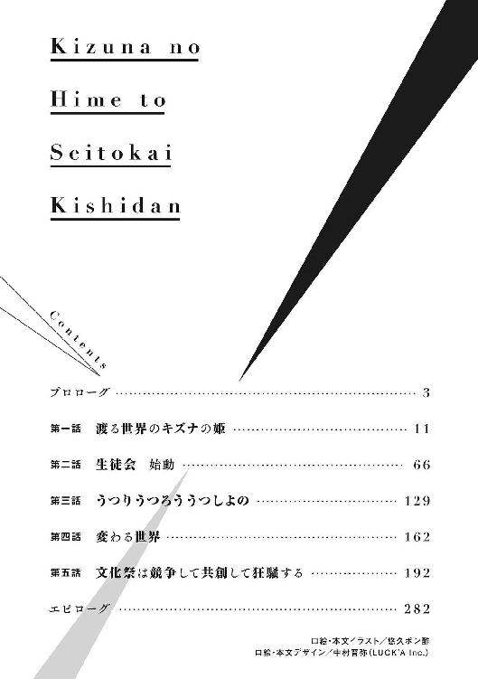

| キズナの姫と生徒会騎士団 (角川スニーカー文庫) | |
| 降橋いつき | |
| (2015) | |
キズナの姫と生徒会騎士団
降橋いつき

角川スニーカー文庫
本作品の全部または一部を無断で複製、転載、配信、送信したり、ホームページ上に転載することを禁止します。また、本作品の内容を無断で改変、改ざん等を行うことも禁止します。
本作品購入時にご承諾いただいた規約により、有償・無償にかかわらず本作品を第三者に譲渡することはできません。
本作品を示すサムネイルなどのイメージ画像は、再ダウンロード時に予告なく変更される場合があります。
本作品は縦書きでレイアウトされています。
また、ご覧になるリーディングシステムにより、表示の差が認められることがあります。

プロローグ
春という季節を、この世界で初めて知った。
青々とした葉をつけている桜の大木を見あげながら、満開だった頃の姿に思いを馳せる。
この世界で目覚めたときにはもう、桜の花は散ってしまっていた。
再び花を咲かせるのは来年の春が巡ってくる頃。
自分はいつまで、この世界にいることになるのだろうか。
それまで、この身体に宿っていた精霊はそこに居続けてくれるのだろうか。
そのどちらも、わからない。ただ、もしも精霊が消えてしまえば、一度光を失ったこの目は、二度と世界の有り様を映してくれなくなってしまうだろう。
できるなら、この目で美しく咲き誇る桜を見あげてみたい。
願わくば、そのときには──
「ユウリ、どうしたの？ そんなに桜が名残惜しかった？」
「違うよ、姫。僕はたぶん......恋しいと思ったんだ」
隣で桜色の髪を春風になびかせた少女は「へんなの」と笑って、目を細めた。
≒
「なあ、俺と一緒に虹でも見ない？」
教室の廊下に設置されたロッカーの前で、長身な少年を取り囲んだ女子生徒数人が色めき立っていた。その中心にいる明久津レンジ。青い瞳に金髪とかなり目立つ風貌をしているが、人懐っこそうな笑みが、取っ付きづらそうな印象をやわらげていた。
女子生徒のひとりが「虹なんて出てないよー？」と窓の外を見ながら言う。
「はは、ちょっとした手品みたいなもんなんだけどな」
そう言うと、レンジは手に持っていたペットボトルのキャップを外した。
中には無色透明の液体（ただの水）が入っている。
「これには、おまじないが必要なんだ。......アグニール、顕界」
ペットボトルの中にはいった水にちょんと触れると同時に、ペットボトルをひっくり返した。女子たちは一瞬驚いてちいさな悲鳴をあげたが、中身の水は重力に逆らうように一向に落ちてこない。
それどころか注ぎ口は下を向いているはずなのに、水が徐々に天井に向かって、噴水のような扇状のしぶきをあげた。女子たちはその奇妙な動きに「なんかキモ！」などと言いながら笑いあっている。
レンジが「さ、これを光に当てるとー......？」と、ペットボトルごと窓から射しこんだ陽光にそれを掲げると、噴水の形に沿うようにして、うっすらと虹がかかった。
女子たちは「おー」と拍手喝采。
「種も仕掛けもありませんーってな」
「いやいや絶対あるよーそれ！」
「はは、当たり前だろ？ 手品だぜ、手じばばばば」
レンジは唐突に背後から頭をはたかれたせいで、ペットボトルから噴きあがる水流に思い切り顔面を突っこんでしまった。
「水も滴るいい男になれてよかったな、レンジ」
そう言ったのは暁月ユウリ。レンジよりも一回りちいさい女顔の少年が、精一杯の険しい顔つきで仁王立ちしていた。
「生徒会のミーティングをすっぽかして何をしているのかと思えば、まさか女の子相手に曲芸を披露しているとは、びっくりだよ」
二人は、この希志峰学園生徒会の執行部に所属している仲間であった。
「......なにが手品だ。精霊をナンパの道具に使うなんて、アグニールが泣いているぞ」
ユウリはそう言って、わざとらしく嘆く。
「んなこと言われてもなあ、能力使う場面なんて全然ねえし？ 使えるところで使ってあげたほうが精霊も喜ぶんじゃね？」
生徒会室に向かう道すがら、レンジは悪びれる様子もなくそう言った。
「あんなペットボトルで小さな噴水をつくってなにが楽しい」
「女の子が笑えば俺は楽しいのさ。だいたい、能力に制限かかってるのはお前だって一緒だろ？ あっちでのユウリはそりゃあ反則レベルの攻撃力で無双する、それはそれはすげえ精霊使いだったけど、こっちではなあ......」
「......その遠い目やめろ」
「なんでしたっけ？ 光線の攻撃力が持続できるの二メートルだけでしたっけ？」
「そ、そんなに短くはない！ ......二メートル三十センチだ」
ユウリは恨みがましい視線で、レンジを見やる。
「びっくりするほどの誤差を訂正してきたな」
「ほかのみんなの能力にも、なにかしら制限がかかっているんだろうか」
「そうみたいだな。俺もあんま詳しくは聞いてねえけど...‥...あ、カレンは知ってるぞ。なんか最初だけ自分で火つけねえといけないらしい」
「......そ、それはまた難儀な」
「ガスコンロの火は臭いからいやーとか言ってたぞ。だから自分でマッチ持ち歩くようにしてるんだと」
二人はそんな怪しげな話を繰り広げるうちに、生徒会室の前にたどり着く。
ユウリは「ただいま戻りました」と、ドアをガラリと開けた。
「あ、お帰り！ よかった。レンジくん、すぐ見つかったんだね」
そう言って真っ先に二人を出迎えたのは、鴻島姫。眉目秀麗な容姿にくわえ、入学以来学年トップを維持し続ける、この希志峰学園の生徒会長である。
「わりーな、姫ちゃん。今日だってこと忘れちゃってさ」
「はは、やっぱりそうだったんだね。大丈夫だよ、今せっかくだから、みんなでちょっとティータイム休憩しようと思って、お茶淹れてたところで──」
「え？ ひ、姫だめだそんな！」
「......え？ な、なにが？」
「そんな雑務は僕がやるから！ 姫が火傷でもしたら大変じゃないか！」
「......い、いいよもう、ほとんど終わってるし。はい、これユウリのぶんね」
姫は紅茶を注ぎ入れたばかりのティーカップをユウリに手渡した。
「え......。あ、ありがとう」
「まったくまったくぅ、ゆうりんは姫ちゃんに過保護すぎなんだぞー」
と、横からそう言ったのは御火倉カレンだ。
赤味がかった髪をちょこんと左右に結んでいる。机の上にクッションを敷いて、その上にぐでーっと身を預けながら、お茶菓子を次々口に運んでいる。「むふー、このチョコクッキーめちゃくちゃおいひー」と、しあわせそうに顔をとろけさせた。
彼女は九つの炎を自在に操る精霊フィアフォックを宿している。
「だいたい、姫の淹れてくれたお茶だからいいのよ。なんで男が淹れたお茶をみんなで飲まないといけないのかしら。それだけで味が濁ってしまいそう」
豊満な胸を強調するように腕組みをした格好で、そんな理屈を述べたのは颯シズルだ。
テーブルのティーカップを手にとり、まず香りだけを楽しむ。
「いい香りね。やっぱりこの時期だから、ダージリンのファーストフラッシュかしら」
「へへ、さすがシズルちゃんっ。正解！ ちょっとふつう過ぎたかなあ？」
「ふふ。私、姫の選択はてらいがなくて好きよ？」
彼女は生徒会でありながら、弓道部の副部長を兼任している。
学園内では女子人気が異様に高く、弓道場では彼女の練習を見るたびに多くの女子生徒たちが列をなすほどだ。
彼女にもまた精霊が宿っている。風を操る精霊シルファーニだ。
「そういえばシンはどこに行ったんだ？ さっきまでそこの席に」
「なに言ってるのゆうりん、そこにいるじゃん」
「......ん？ うおっ！ い、いつのまに」
「............」
先程まで一番奥の席に座っていたはずの影瀬シンは、いつのまにかユウリの背後でティーカップを持ち、お茶菓子を口に咥えていた。
いつも能面のような無表情さを崩さない上に、極端に寡黙な男だ。
元々隠密行動を得意としているせいか、神出鬼没でもある。
彼もまた、ダプラグマという闇を使役する精霊を宿していた。
実のところ、一見ごくふつうの学生に見える彼らは本来、この世界の人間ではなかった。
精霊と契約し、その力を借りることで、精霊がもっている様々な能力を行使することができる精霊使い。日本とは異なる世界で、とある大国の騎士団に所属していた本物の騎士たちなのである。
そんな彼らが騎士として仕えていた姫君こそ──
「じゃあみんな揃ったところで、ミーティングという名のティータイムはじめちゃおっか」
希志峰学園生徒会長 鴻島姫その人であった。
しかし、今の彼女にはかの世界での記憶はない。
けれど彼らはこの世界でも姫を守ると、そう決めて、再び集った。
そんな生徒会執行部のメンバーは、後にこう呼ばることになる。
生徒会長たる姫を守る『生徒会騎士団』──と。
これは、そんな彼らがこの異世界で手にした「ごくふつうの青春」の物語である。
第一話 渡る世界のキズナの姫
僕の父親は精霊使いを憎んでいた。
精霊使いの能力によって、戦場で脚を失ったからだ。
戦場から帰ってきた父は、今までの大好きな父親ではなくなっていた。
ろくな仕事もできず酒浸りになり、妻を、子供を殴ることに快楽を見いだしてしまった。
ちいさな僕を、まるで女のように扱った。
自分が支配できるちいさな世界で、絶対君主たろうとした。
だからこそ、僕が母を守るためにはじめて父に抵抗したとき、その事実が、よほど許せなかったのだろう。今までで一番激しく虐げられた。
父は仕舞いに刃物を持ちだし「そういう眼で、俺を見るな！」と刃を一閃した。
顔のあたりに激しい痛みと熱が走り──僕は光を失った。
真っ暗になった。
母の叫声。父の怒号。
声と音だけが脳に届く、形を喪った世界。
その背後で、窓ガラスに強い雨が打ちつけていたのをやけに覚えている。
暗闇の中。
視界にだったのか、脳裏にだったのか。
それはよくわからない。
ただ、ぼうっと浮かんできたのだ。
人の傷を食らう、光の精霊の名が。
そして、僕はそれを受けいれた。
精霊をその身に宿すことで、僕は光を取り戻した。
精霊が彩り、精霊がつなぎとめてくれた世界。
そこで、僕が最初に目にしたのは、父を刺し殺し「これでもう......大丈夫だからね」と、ほんとうに久しぶりに笑った母の顔だった。
精霊は僕に戦うための力を与えた。
精霊使いはこの世界において、戦うことだけしか許されない存在だった。
殺して。
殺して。
殺して。
殺す。殺す。殺す。殺す。殺す。殺す。
殺そうと向かってくるものはすべて殺し尽くした。
人の命が数字に変わる。自分の命も数字でしかなくなる。
だから、べつにいつ死んでもいいと思いながら戦っていた。
それでも僕は殺されなかった。
僕に宿っていた光を操る精霊は、やがて国から戦略級の兵器と認定されるほどの能力を持っていた。
「貴方の光は、今は敵を屠るためのものでしかないかもしれないけれど、いつかそれが人々の照らす光になるって、私は信じているんです。だって......すごく綺麗だもの」
そんな自分を変えてくれたあの人を、せめて護りたかった。
そういう自分で、ありたかった。
≒
少年は少女の手を引いて仄暗い森の道無き道をひたすらに駆け抜ける。
少年と少女は同い年だ。
しかし、その立場や境遇には大きな違いがある。
少女はとある大国の姫君であり、少年は姫を護る騎士であった。
鬱蒼とした枝葉をかき分ける音。
地に落ちた小さな枯れ葉や小枝が爆ぜる音。
夕刻頃まで降っていた雨でぬかるんだ地面が、靴にまとわりつく音。
それらすべてが足跡となり、夜の闇に二人の影を溶けこませることを拒んでいた。
額の裂傷から激しく出血していた少年は、顔を覆う血をぞんざいに拭いさる。
そこから現れた顔つきはきわめて端整で、その身にまとう豪奢な装具とは相容れない容姿の若さに、違和感さえ抱くほどだった。
少女が足に力をこめたので、二人はその場でいったん足を止める。
「やはり戻りましょう。彼らの狙いは私なのです。今戻ればまだ騎士団のみんなだけでも助けられるかもしれない！」
紫紺の月明かりに照らし出された少女の顔は悲痛にゆがんでいた。
彼女のためにあつらえられた空色のドレスはあちこち破れ、ちぎれた葉が貼りついている。フリルの裾はもはや泥まみれだ。
それでもなお──いや、そんな状態だからこそだろう。
彼女がその身に宿した美しさは一切損なわれていないどころか、より輝きを増しているようにさえ感じられる。
「姫。騎士の命は、貴女を護るためにこそあるのです。その目的を果たせなければ、もとより生きている価値などありません」
「そういう言い方やめてください。そんなの──うれしくない」
少女が握りしめていた手に力をこめる。
「ご安心ください。あいつらとて、それほどヤワではありませんよ。もちろん僕も」
その言葉を聞いてもまだ納得はしていない様子だった。
頰をうっすら紅潮させ、うつむくばかり。
少年自身もそれは気休めだとわかっていた。
それでもどうにか元気づけようと、少年もそっと少女の手を握り返す。
神聖な少女の身体に、血塗られた自分の手が触れること。
それさえも本来ならば憚られることに違いない。
しかし、今は後悔や邪推をしてどうにかなる状況ではないと覚悟を決める。
「姫。ご無礼を──」
「え？ きゃっ!?」
少年は少女を抱き寄せると、そのまま両腕に抱きかかえた。
少女は驚き身じろぎするが、少年の鍛え抜かれた両腕はびくりともしない。
「姫が仰りたいことはわかります。あとで、いかなる罰でも受ける所存です」
ずいぶんな距離を走って逃げてきた姫の体力はとうに限界を超えているはず。
なにより自分の背後から追っ手が来るとなれば、姫を後ろ手に引いたままの体勢ではあまりに危険度が高い。
少年にとってみれば、打ち首も覚悟した上での蛮行ではあったが。
「......罰、だなんて。本当に馬鹿ですね、貴方は」
「申し訳ありません」
その場で厳しい叱責を受けることも覚悟していた。
しかし、少女はそっと少年の首に自分の両腕をまわすだけだった。
二人の体がいっそう寄り添う格好になる。
これにはさすがに少年のほうがたじろぐ。
「ひ、姫......？」
「その......このほうが、走りやすいかと思ったの。だめですか？」
「いえ。......仰るとおり、このほうが走りやすそうです。さすがのご慧眼です」
「もう......。あとでたっぷり罰をくだしますからね」
少女は一瞬だけいたずら混じりの呆れ顔を浮かべたあと、
「だから、必ずともに生きて帰りましょう」
少年は一人の少女を抱えたままとは思えぬ速度で、軽々と森を疾走していく。
体格は戦士というにはかなり細身に見えるが、幾多の戦場を潜り抜けてきた体軀に宿る力は外見通りではなかった。
やがて、鬱蒼と覆っていた木々が途切れる場所にでる。
束の間、空がひらけた。
星に彩られた闇夜はまぶしささえ感じる。
直接降りそそぐ月明かりは二人の姿をやんわりと照らしだした。
と、少女が唐突にくすくすと笑いはじめたのだ。
「......姫？ どうされましたか？」
「ふふ、ごめんなさい。あのね、唐突に思いだしたのです。こういうの、あの世界では『お姫様だっこ』と言うのですよ？」
もしや恐怖のあまり気がふれてしまったのではないかと一瞬心配したが、早合点だったようで安堵する。
彼女がごくまれに見せる、年齢相応な少女らしい表情だった。
あの世界というのは、少女がよく話をする、こことは違う別の世界のこと。
同年代の少年少女が「がっこう」と呼ばれる場所で学び、恋をし、日常生活を謳歌するのだという──戦乱が続くこの世界と違い、夢のような平和な世界。
彼女には、彼女の精霊を通して、そういう世界が見えている。
この戦いを終わらせて、そんな「がっこう」のように、子供たちが笑顔で学べる場所をつくるのが目標なのだとよく語っていた。
少年も詳しいことは知らされていなかったが、彼女の精霊は王族の中でも選ばれし者だけに代々宿る唯一無二の精霊であり、精霊世界との扉をつなぐ鍵とも呼ばれていた。
「なぜですか？」
「そうね......。たぶん乙女の憧れ、なのでしょうね。王子様のようなすてきな男性に身を預けて、お姫様みたいな扱いを受けた気分になれる。私もね、今はじめてその気持ちが少しわかったような気がして......はっ！ ななななんでもないですなんでも」
唐突に顔を真っ赤にして慌てふためく。
「......？ 姫はもとより姫君ではないですか」
きょとんとした少年の顔に、少女は噴きだし微笑を浮かべた。
「おかしい......わよね、私。こんなときに。でもね、こうしているだけで......不安とか、怖さがどこかに飛んでいってしまうみたい」
首にまわした腕にぎゅぅっと力がこめられる。
「ねぇ、ユウリ......？」
囁く少女の吐息が、名を呼ばれた少年の心をそっと撫でた。
「実は私、貴方にずっと言いたかったことが......」
≒
ユウリは自分が今まで眠っていたらしいことに気づくまで多少の時間を必要とした。
窓から差しこんできた朝陽に目を細める。
見知らぬベッドに横たわっている自分の身体。
外からは聞き覚えのない鳥の鳴き声。
喉がひりつくほど渇いている。
「夢......か？ なんだ。は......はは。よかった」
こわばっていた表情がゆるみ、安堵の表情を浮かべる。
元々が童顔のためそういう顔つきになると、とたんに幼く見えてしまう。
「安心している場合じゃないな。ここは......どこ、なんだ？」
個室にしても、やけに狭い一室だった。
だが、独房というには陰惨な空気感がまるでない。
周囲を見回してみても、そこに姫の気配はなかった。
（とにかく、落ち着け僕......。状況を整理するんだ）
ユウリは自分が眠ってしまった──もしくは気を失ったときの状況を思い出そうとするが、うまく記憶がつながらない。
敵に襲われ、姫を連れて逃走をはかったことまでは憶えている。
当然だ。つい先ほどまで起きていた出来事なのだから。
そのはずなのに、そこから先の記憶が欠落していた。
続きが、まったく思いだせない。
鮮明だったはずの記憶が泡沫の夢として処理され急激に薄らいでいく。
たぐりよせようとすればするほど霧散してしまう。
（ライト......。ライト？ おい、ライトリオ）
ユウリはベッドに腰掛け、嘆息して天井を見上げるしかない。
彼が頭の中で呼びかけていたのは、彼の内に宿る精霊である。
その呼びかけに、いつもならあるはずの返答がなかった。
「......姫。一体どうなったんだ。くそっ」
ユウリが手で顔を覆ったとき、
「おっにいぃちゃーん！」
ばんっと内開きの木製のドアが開け放たれた。
ドアの向こうから現れたのは、元気いっぱいの笑顔を輝かせている少女。
「おっはよぉぉぉぉぉ」
彼女はぴょーんと無防備なユウリの胸に飛びこんだ。
「ぐはっ!?」
思わず息が詰まる。
「くんくんくんくん。ふにゅぅ、寝起きのおにいちゃんのにほひぃ」
少女は顔をユウリの胸に埋め、鼻をひくひくとさせている。
「ちょ、ちょっと待って。だ、誰なんだ君は！」
「ふえ？」
少女の顔は恍惚の笑みをたたえている。
一体なんだこの変態娘は──ユウリは慌てて引きはがした。
少女はめげた様子もなく、ベッドに寝そべる。
（......ん？ しかしこの顔、どこかで）
そこはかとなく見覚えがあるような......。
「だれって......もー、まだ寝ぼけてるの？」
不満げに頰を膨らませた。
「ふぁっ、それとも今日は記憶喪失ごっこ？」
「......ごっこ？ いや違う、僕はただ」
「ぷぷぷ、わかったわかったぁ。今日はそういう設定になったのね。アオイはすべてを一瞬にして悟ってしまったのです」
得意げにそう言って、ご満悦の様子だ。
一方のユウリはひとかけらも状況を理解できていない。
むしろ混乱に拍車がかかるばかりだ。
「おにいちゃんてば、ほんと厨二ですなぁ。でもでもぉ、そんな少年の心を忘れないおにいちゃんがウチは好きだからっ」
あけすけに笑う言動や表情からはなにかを偽っているようには感じられない。
無論、現時点で信じる要素もないのだが。
「ウチの名前はアオイね。おにいちゃんのいもうとだよ？」
「いもうと......。おにい......ちゃん？ 僕が？」
「ふふ。だって......そっくりでしょ？」
そう言ってアオイが指さした先には、全身はいるサイズの立て鏡。
二人の顔が並んで映っている。
「......っ！」
そう。見覚えがあるのは当然だったのだ。
彼女は自分の顔立ちに、あまりにそっくりなのだから。
アオイのほうがいくぶん幼い。やわらかそうなふんわり栗毛を結いあげた髪。それらをまとめるための、かわいらしいリボンが女の子らしさを強調していた。
それでも顔の造形自体は驚くほど似ている。
「ま、待て！ でも僕に妹なんて......」
「おにいちゃん記憶喪失なんでしょ？ なら妹いるってのもすなおに受け入れなさいっ。じゃないと設定ぶれちゃうよぉ？」
「せ、設定......？」
「だいたい、こんなに似てるのに兄妹じゃないっていうほうが無理がない？」
「......いや、でも」
自分には妹などいるはずがないのだ──ユウリは困惑する。
百歩譲って生き別れの妹がいたとして、いきなりこんなに親密なはずがない。
彼女は明らかに、いつものように自分に接している。
ユウリが答えあぐねていると、部屋のドアを開けて「ちょっとアオイ、ユウリ。はやくしないと学校遅れるよ！ もう、今日は朝ごはん食べてる時間ないんだから」と、険しい顔つきをしたスーツ姿の中年女性が現れた。
「なっ──」
ユウリはその女性を見て言葉を失う。驚くのも無理はなかった。
彼女は、とうの昔に亡くなったはずの母親と、瓜二つだったからだ。
「......ちょっとアオイ。そんなくっつき方しないの。お兄ちゃん困ってるでしょ」
「もー、ママはまだ来なくていいのに！ おにいちゃん起こすのはウチの仕事なの！ それに、おにいちゃんは今日記憶喪失なんだから！ まだ戸惑いのさなかなの！」
「......なに。また馬鹿なこと言い始めたの？ 最近治ってきたかと思ってたのに」
「おにいちゃんは、そこがかわいいんです～」
「......はあ。あんたはあんたでブラコン過ぎて心配です、母さんは」
母親はじとーっとした目つきで言うが、アオイは悪びれる様子はない。
「そりゃあ昔はかわいかったわよ。仮○ライダーとか戦隊ものの真似して。ママを護るんだーなんて真剣な顔で言ってくれて。将来はオーディション受けさせようと思ったこともあったわ」
そこまで言うと、途端に美しい思い出を汚されたような顔つきに変わる。
「でもね、その年になっても、真剣に本物になろうとしちゃってるのは母さん想定外です」
「それよりママ、時間いいの？」
「......やだ。もうこんな時間。ちょっとアオイ、お兄ちゃん頼んだわよ。ユウリも！ いつまでも妹にいいようにされないでしゃきっとする！」
部屋から出て行く母親を、呆然と見送るユウリ。
（僕の......名前を）
眼前の妹はにんまりと笑みを浮かべていた。
「ふみゅ......と、いうわけで。記憶がない中では大変でしょうが、これからおにいちゃんは学校に行かなければなりません」
「......がっこう？」
どくんっ。
聞き覚えのある言葉。
姫があの世界で営まれているとよく語っていた育成機関──まさか、ここは。
「学校に行くにはお着替えが必要だよ。制服はそこにかかってるからね？」
そんなユウリの思考を途切れさせるように、アオイが言った。
ユウリはグレーのパジャマを着ていた。
ハンガーにつるされた制服が、アオイの視線の先にあった。
今アオイが着ている服装も、どうやら学校用の制服だったらしい。
ベッドから下り、ハンガーにかけられた制服を手に取る。
「これが僕の......制服、なのか」
「そうだよー？ ほら、ちゃちゃっと着替えて？」
真新しいものではなく、着古された様子の制服。
学校という施設の存在。
自分を兄だとのたまう少女。
倒れていた自分をただ助けてくれた行きずりの保護者──という様子ではない。
これが本当に現実だとするなら......いや、しかしそんなことがあるはずは──ユウリは自分の脳裏によぎった推測があまりにばかばかしいものだったので一笑に付す。
どちらにせよ、今のユウリには判断材料が少なすぎた。
目の前の少女が容姿を偽ってユウリを謀っている刺客の可能性も無論あるのだが......殺そうとするなら、とっくにそうしているはず。
姫とは違い、自分には生かされる理由がない。
しばらくは従うふりをして様子を見ていくほかないだろう。
よくわからないが、記憶喪失を装っていると思われているようだし。
「ふにゅ？ おにいちゃん、着替え方も忘れちゃった感じ？ じゃあ、着替えるの手伝ってあげなきゃね？」
「む......？」
ユウリは背後からおかしな気配を感じ、さっと振り返る。
「......ふふふ。それならそうと正直に言ってくれればいいのにぃ。さ、はよう脱ぎなはれぇ。おにいちゃんの着替えおてつだいぃ......じゅるり」
そこにはひどくとろけた表情でにじりよる妹、アオイの姿があった。
「......ん？ ちょ、ちょっと待て。お手伝いって一体なにを......」
「またまたとぼけちゃってぇ。着替えなんてすることは......一つ！」
アオイは言うが早いか、ユウリの上着をすっぽりと脱がせた。
「はっ──!?」
（うう......なんたる屈辱）
あっというまにパジャマをすべてひんむかれてしまったユウリは、アオイの指導のもと、学校の制服に着替えさせられていた。
「......ふふ。いやいやする姿もかわいかったよ？ おにいちゃん？」
姿見に制服を着用した自分の全身を映す。
シャツ、スラックス、ベルト、制服の上着。
上着の裏面には『暁月ユウリ』という名前の刺繡が施されていた。
着替えさせられた学校の制服のサイズはすべてぴったりだった。
胸元には所属を示していると思しきエンブレム。
ユウリはちらりと前髪をどけて、額のあたりを眺める。
先の戦闘で負ったはずの裂傷が見当たらない。
（......治っている？ それにしては痕が......あれから何日くらい経っているんだ）
制服自体は騎士団にも存在する。
城内での日常生活・公務における行動時は主に制服を着用して過ごしてもいた。
それにくらべると、この制服はいささか頼りないつくりに思えた。
「さ、おにいちゃんはやくはやくっ！ 遅刻しちゃうよ！」
「え？ あ、ちょ、ちょっと待ってくれ」
アオイに強引に背中を押され、戸惑う暇もなくユウリは家を出た。
≒
ユウリの思考回路は一歩家の外を出た瞬間から、目に映るすべてのものに対して混乱をきたしていた。それまでも充分混乱はしていたのだが、輪を三重四重にぐるんぐるんにかけて混乱していた。
（一体......なんなんだ、ここは）
その街並みはユウリが知っているどの街とも異なっていた。
隣を歩くアオイが、なにかに気づいたらしく手を挙げた。
「あ！ ひめちゃん！ おはよー」
とてとてーと前方を歩いていた少女のもとに駆け寄る。
アオイの声に促されるように振り返った少女の顔。
「あ、アオイちゃん。おはよ！」
なぜか同じ「がっこう」の制服を着ていたが、見違えるはずのないその顔と声。
ユウリも慌てて駆け寄った。
「ひ、姫！ よくぞご無事で。本当に安心しました」
姫のもとに馳せ参じた。
「ん？ ごぶじ？ なにが？」
「あり？ おにいちゃん記憶喪失じゃなかったの？」
「記憶喪失？......あー。もしかしてまた例の病気なの？」
妹と称するアオイと、まるで顔見知りのように話をしている。いろいろと不明点は多いが、ともあれ姫が無事だとわかり、ユウリはほっと胸をなで下ろす。
「ふひ、そうみたい。でもおかしいなあ。今朝ね、起きたらウチのことは覚えてないって言ってたんだよ？」
「ええ？ なにそれ......もう......あれだけ治療したはずなのにまだ出てきたのね......。最近やっと治ってきたかなと思ってたのに」
それを聞いた姫は、じとーっとユウリに疑いの眼差しを向けた。
だが、ユウリがそれを意に介した様子はない。
さっと跪いた。
「改めて護衛任務に復帰させてください」
「............ごえい？」
「はっ！」
「いや、そんな威勢よく返事されても。なんなの、護衛って」
彼女──鴻島姫は、一介の女子高生である。
文武両道、容姿端麗。
容姿や人柄にくわえて名前も手伝い、彼女のことを冗談まじりに〝姫〟扱いする人間は学校でも少なくないが、もちろん王侯貴族の類いではない。
「いえ、ですから姫様の近衛騎士である僕が──」
「......えっと、誰が誰の騎士？」
「......？ 僕が、姫様の騎士ですが」
その台詞を口にしているユウリの目には恐ろしいほど一点の曇りもない。
アオイが隣で頰を膨らませていた。
「むー、おにいちゃんひどぃ！ ひめちゃんがお姫様でおにいちゃんが騎士な設定なのは理解したけど、ウチのこと忘れちゃうのは設定過多だと思うのです！」
「ひめちゃん......だと？ 貴様、先ほどから姫にむかって無礼だろう！」
「ふぁっ!? うちずっと前からひめちゃんて言ってるじゃん！」
「な、なにを馬鹿なことを......」
「ちょっとユウリ！ さっきからひどいよ！ アオイちゃんに謝って！ ユウリが勝手な設定で妄想の世界に浸るのは勝手だけど、それに他人を巻き込まないの！」
思いがけない反撃が、隣にいた姫から来た。
「......も、妄想？ いや、僕は──」
アオイはさっと姫の背後に隠れた。
舌をぺろっとだし、あっかんべーをする。
「謝りなさい」
有無を言わせぬ姫の剣幕にユウリはたじろぎ、深々と跪いたまま頭を垂らした。
「ぐ......。大変......失礼......しま、した」
「なんか......違う気もするけど。とにかく恥ずかしいから、ちょっと立ってよ」
「はっ！」
そんなユウリの威勢のいい返事に、姫はため息をつく。
「......姫は、ほんとうに僕のことを憶えていないんですか？」
「いや、ユウリのことは......わかるよ？ だって、幼なじみだもん」
ユウリはとても演技とは思えない当惑の表情を見せた。
「そう......ですか。幼なじみ......？」
「そうそう。生まれた時から一緒にいて昔は仲良かったのに、成長するにつれてちょっとずつ疎遠になってきちゃった二人......果たして二人の恋の行く末は!?」
「こーら、なに勝手に変なナレーションあててるの」
姫は腰に手を当て、アオイの頭にやわらかくチョップした。
「姫様......。状況がよくわかりませんが、必ず僕のうしろについてきてください」
ユウリはなんとか騎士としての使命を完遂しようと警戒だけは最大限。
姫を護衛しながら、周囲をきょろきょろ見回す。
「いや......状況がわからないのはわたしのほうだよ？」
姫がついていけないといった顔をしたとき、背後からクラクションが鳴らされた。
振り返ったユウリは、一方通行の道を走ってくるワンボックスカーの姿を認めた。
「......ちょっとユウリ、どかないと」
姫が制服の裾をちょいちょいと引っ張るが、ユウリは構わず右手を前に掲げた。
左手を手首にそっと添えて、
「あれは......危険だ。破壊します！」
そんな危険な宣言をした。
「............へ？ ゆ、ユウリ!? 破壊ってなにを──」
「ライトリオ──顕界！ 破砕の光矢散弾式！」
変なポーズで呪文のようなものを詠唱し終えたユウリの手元から、レーザービームのような光線が飛びだした。
光線は放射状に八つのラインにわかれ車目がけて飛んでいく。
目標として認識したあらゆる物質を破砕する光の矢。
ワンボックスカーに到達した光の矢は、
「...............」
「...............」
そのまま、何事もなくすーっと車をすり抜けた。
「あ......あれ？」
ユウリは不思議そうに、自分の手と車を交互に見やる。
ユウリの予定ではそのまま車を破壊できるはずだったのだ。
「............そ、そんな馬鹿な！」
愕然としているユウリをアオイが「あぶないよー」と道路際に引っ張っていく。
当然のことながら、ワンボックスカーはそのまま通りすぎていった。
「......む？ 我々を襲おうとしていたわけではないのか」
「そんなわけないでしょ！ あんなレーザー車に当てたらあぶないし！......もう知らない！」
顔を真っ赤にした姫は、すたすたと足早にその場を立ち去った。
「あ、姫様！ 待ってください！」
≒
「......これが、がっこう」
アオイと姫に連れられて、ユウリは学校の門前にたどり着いた。
門には「希志峰学園」と校名の書かれた巨大な〝表札〟が掲げられている。
学園出身の書家が書いた筆文字で、銅製のプレートなどよりかえって目立つ。
三人が通う希志峰学園（通称・きしがく）は都心に居を構えながら、広大な敷地と最新の学習設備をあわせもつマンモス校である。
小学校から高校までが同じ敷地内にある私立一貫校。
系列大学のキャンパスも近場にあり、高等部とは積極的な連携がなされていた。
そのため、この時間の門前は多様な年齢の子供たちが一堂に会することになる。
「姫！ おはようございます！」
「今日、がんばってくださいね！」
「はは、ありがとー」
そこに一歩足を踏み入れた瞬間、姫は周囲から明らかにひときわの注目を向けられる存在となっていた。生徒たちの声や目線が、輝きに満ちているのがわかる。
「へへ、やっぱひめちゃんは学園のアイドルですのー」
「もう。そんなんじゃないよー」
「おにいちゃんとは遠い世界の住人になるのもやむをえないか......。でも大丈夫！ おにいちゃんにはアオイがいるからね？」
「アオイちゃんはそれ言いたいだけでしょ！」
「ふへへー、ばれた？」
アオイは舌をペロッとだしていたずらっぽく笑う。
「じゃ、ウチはこっちだから。ひめちゃん、おにいちゃんよろしくねー」
アオイはひらひらと手を振り、別のゲートに向かっていった。
「どうしたのですか？ あれは」
「アオイちゃんはまだ中等部だからね。ゲートがあっち。初等部はあそこ」
「ほう」
「門前に兵も常駐しているのですね。もしやここはがっこうを装った要塞......？ いやしかし、このくらいの警備では僕なら即座に突破してみせますが」
「あれ警備員さんだし。兵じゃないし」
「兵ではないのですか？ 逆に......心配ですね」
「わたしはユウリの頭のほうが心配だよ......」
深いため息をつきながら、姫が門の生体認証つき電子ゲートをくぐる。
ゲートの認証部分に手をつくと、ピッと電子音が鳴りフラップが開く。
ずっとこの調子で学校生活を営むつもりなんだろうか......と、姫が自分のこと以上に悩んでいたとき──
ピブーン！ ばこっ。
「ぐっ」
背後でユウリが見事にそれにひっかかっていた。
「──って、なんで顔ぶつけてるの!?」
しかも腰くらいの位置にあるフラップを顔面で食らっている。
「ていきを落としてしまって......拾おうと思ったらいきなりこれが」
「ユウリ、そこは定期じゃないの。手かざして」
「手......ですか？ こ、ここですか？」
「そう、そこ......指でさわって。ちがうよ、もっと下」
「......ここ、ですか？」
「うん、そこ。いいんだよ、もう入ってきて」
ユウリがようやく正しい場所に手をかざすと、閉じたフラップが無事に開いた。
ユウリは警戒しながらゲートをくぐる。
ゲート前の認証機器に手をかざすことで、登録された学生の生体データベースと照合し、登録がある者のみが通過できる仕組みだ。
二人のやりとりを見ていた周囲から、くすくすと笑い声が聞こえる。
一部では顔を赤らめている者もいたが、その理由に二人は気づいていない。
「はずかしいなぁ、もう」
「さきほどと......同じようにしたのですが」
「電車の自動改札とはシステムが違うから......」
初等部、中等部、高等部それぞれゲートがわかれている。
それぞれのゲートには警備員が常駐しているので、学校施設としてはかなり厳重な警備態勢を敷いていると言える。
（それにしても......大きいな）
ユウリは家から学校にたどりつくまでのあいだに、文字通り世界観の変わる体験をしていた。まさに圧倒されていた。
（......やはり、ここは違うのか？）
大小様々な住宅が途切れることのない街並み。
整備された道路。絶えず行き交う鋼鉄の車。
電車という巨大な鉄の塊が動く交通機関。
こんなにも様々な技術が発達した都市は、話にも聞き及んだことがない。
いや正確には聞いたことがある場所はあった。
あくまで、半分おとぎ話として──ではあったが。
「よおご両人。朝から公衆の面前で夫婦漫才かい？」
ユウリの肩を抱くように何者かが背後から覆い被さってきた。
「......もう。そーゆーのじゃないって、前から言ってるでしょ？」
「へえ、じゃあ俺にもチャンスあるのかな？」
「誰にでもそーゆーこと言うの、よくないと思うな」
「あれ？ 怒っちゃった？」
不満顔の姫の頰にそっと触れ、
「でも、さすが姫ちゃん。怒った顔もきれいだよ？」
などと恥ずかしげもなくのたまう少年。
まるで口づけでもしてしまいそうな至近距離。
「貴様やめろ！ 姫に無礼だぞ！」
ユウリは姫を護るようにして、二人の間に割ってはいった。
「お？ なに、いきなりやる気満々なの？ ユウリくん？」
正面から対峙してはじめて、ユウリはその男の顔を認識した。
とてもよく見知った顔がそこにはあった。
「......レンジ！ お前も来ていたのか!?」
「お？ おう？ そりゃ来るだろ？ 俺はこー見えて学校では真面目系よ？ ま、女の子には不真面目だけど？」
レンジは制服をやや着崩し、バッグを後ろ手に持っている。
身長もユウリより十センチ以上ゆうに高く、体格もいい。
髪型も気を遣いすぎない、こじゃれたセットが施されている。
顔も口調も、いかにもイケメン男子学生といった佇まいの少年だ。
本人もそれを隠していないが、かといって嫌味な感じもしない。
通りすがった登校中の女子生徒が「レンジおはよー」と声をかけると、白い歯をきらりと光らせて、「はよー、今日もかわいいな」などと言いながら、ひらひら手を振っていた。
「お前も......わからないのか？」
「は？ なんのことだよ」
「いや、なんでもない。独り言だ」
ユウリは、うらめしそうにレンジを一瞥した。
同じ学園の制服。周囲にも馴染んでいるし、姫とも顔見知りの様子だ。
しかし、顔も声もまったく変わらない。
彼もまた、姫を護る騎士の一人だった。
しかもとびきり腕が立つ優秀な騎士。
──とびきり女癖も悪いのが玉に瑕ではあったが。
そして、ユウリにとっては騎士団でもっとも仲のよい同僚でもあった。
先ほどの「女に不真面目」などという口癖も、歯の浮くような台詞も、レンジそのものだ。ここまで一致しているというのに......。
ユウリは狐につままれたような気分に支配される。
自分の記憶と認識だけが、蚊帳の外になっているようだった。
しかめ面のユウリを見て、レンジは肩をすくめた。
「むう......」と唸っているユウリを横目に、姫に小声で問いかけた。
「どしたん？ ユウリのやつ」
「......もう。ごめんね、レンジくん。今日なんかユウリ朝からおかしくって」
「あーいつものやつ発動中？」
「そうそう。今日はね......ユウリが騎士で、わたしがその......姫とか言ってて。あ、お姫様って意味ね。もう、意味分かんないよ」
「......へえ。騎士、ねえ」
「しかもね、なんか記憶が曖昧っていうか、喪失気味っていうか、いろんなこと分かんないっていう......ちょっと複雑な設定になってるっぽくて」
「ふうん、記憶も......」
レンジはユウリをしげしげと覗きこんだあと、
「ユウリ、それでも俺のことは忘れてねえんだ？ かあ、友情だねえ」
ユウリの頭をわしゃわしゃと撫でた。
「や、やめろよ。ふん、どうやらお前の馬鹿面は死んでも忘れられないほどらしいね」
「ああん？ ははっ、お前こそ騎士って面かよ。んな女の子みたいな顔して」
「なっ！」
「どっちかって言えば姫じゃね？ タイプ的には」
「戯れ言を！ 貴様......訂正しろ！」
──女顔。
「僕は、れっきとした男だ！」
その事実をもって騎士たる自分の誇りを馬鹿にされることは、ユウリにとってもっとも耐えがたい屈辱的な行為なのである。
「はは、訂正しませーん。お前がもし女の子だったら俺の女子ノートでも特Ａにランクづけしてるレベルだわ！」
「お、お前はここでもそんな変態ノートをつくっているのか！ お前のような輩から姫を護るために僕がいるんだ！」
顔を真っ赤にして憤怒するユウリがよほどおかしかったのか、挑発しながら逃げるレンジ。子供じみた追いかけっこをしながら校舎のほうに二人の姿が消えていく。
レンジとユウリはクラスメイトだ。
彼なら、そのままユウリを教室まで連れていってくれるだろう。
その様子を見ながら姫がため息をついていると、
「また男子どもは朝からじゃれあってるの？ これだから嫌ね、男子って。美しくない」
うしろから、姫に声をかけた女子生徒がいた。
「あ、シズルちゃん！ おはよー」
「姫は今日も朝からこんなに綺麗なのにね。空気まで浄化してくれそう」
「え？ あはは、むりむり。わたし植物じゃないもん」
「そういうことじゃないわよ」
腰まで届くつややかな髪が一陣の風に吹かれてなびいた。
髪を耳にかける所作は同性ながら綺麗だなぁと、姫はしみじみ思う。
シズルは女子にしては背が高く、すらりとしたモデル体型だ。
脚がとても長いせいもあって、短めのスカートが余計に短く感じる。
「今日は姫にとっても大事な日なんだから。あんな幼稚と書いて幼なじみと読むようなやつにばかり振り回されていたらだめよ？」
「あ、はは......耳が痛いなぁ」
姫とシズルは同い年だったが、シズルと話していると、姫はどことなくお姉さんと話しているような気分になる。
また彼女は男子生徒には総じて手厳しい。
そのため、一部男子生徒からは恐れられていた。
弓道部、鬼の副部長──なんて陰で囁かれることもあるくらいだ。
反面なぜか女子には大層甘いのもあって女子生徒たちにとっては憧れの的だ。
弓を射るときの凜とした立ち姿などは特に人気があり、彼女が弓を射る順番になると弓道場の周囲に色めき立つ女子生徒の人垣ができる。
バレンタインデーには、彼女の前に行列ができあがる。
「......貴女を振り回していいのは、私だけなんだから」
そのとき急に強くなった風が二人のあいだを吹き抜けた。
そのせいで、シズルのつぶやきは姫の耳には届かなかった。
「ご、ごめん、なに？ よく聞こえなくて」
しかしシズルには、そうなることは織り込み済みだった。
意味ありげな微笑を姫に向ける。
「ううん、なんでもない。行きましょ」
女子には基本優しいシズルが、中でも特に目をかけているのが姫であった。
「今日は姫の晴れ舞台でもあるんだから」
「はは......まだちょっと実感ないし恥ずかしいけどね」
姫が照れ笑いを浮かべると、シズルは首を横に振った。
「姫、今日は素晴らしいスピーチが聞けるって信じてるから」
シズルは年齢からするとやけにあでやかな笑みを浮かべた。
姫の顔が、かあっと赤くなる。
「も......もー、ひどいよシズルちゃん！ わたし、ただでさえ緊張してるのにそんなこと言われたら余計......うう」
涙目になり膝を抱える姫に「ふふ。そんな姫もすごくかわいい」と嗜虐的な笑みを浮かべて、追い打ちをかけるシズルであった。
≒
希志峰学園の高等部校舎屋上に、二人の人影があった。
この学園の屋上は学生に開放されているわけではない。
しかし、学園の制服に身を包んだ、男子生徒と女子生徒が一人ずつ。
閉鎖された空間で、秘密の逢い引き──。
そんなふうに見えなくもなかったが、二人のあいだに甘い空気は流れていない。
少女は屋上の端っこの縁石部分にすわり、脚をぷらんと空中に投げだしている。
少女の髪が風になびく。
少年は忍び返しのついた、背の高い金網フェンスにもたれかかって、紙パックのメロンミルクをすすっている。
二人は視線さえ交わさず、背中越しに会話していた。
「へえ......。姫の騎士、ね」
「どう思う？」
「どうせ今回のも例の中二病でしょ。たまたまなんじゃないの？」
「そうかもだけど......でも、今回はちょっとマジかもって思ってる」
「どうして？」
「男の勘......ってやつ？」
「はあ？」
少女は振り返り、少年を批判めいた視線で背後から射貫いた。
「なんてーの？ リアクションが、昔のアイツそっくりだったんだよな。すげー懐かしかったわ。しっくり来る......っていうかな」
「麗しき男の友情ってわけ。気持ち悪い。反吐が出る」
「そりゃアンタが百合好きすぎなだけでしょ！」
「は、はあ!? なんで私がユウリ好きとかって話になるのよ！」
「......なにキョドッてんの？ 俺は百合が好きって言ったんすけどねえ？」
少年がからかうと、少女はドスのきいた口調で囁いた。
「...............殺す」
「わーシンプルな理不尽。ま......ともかくだ。アイツこう言ってたんだよな。『お前ここでもそんな変態ノートつくってるのかー』ってさ」
「そこは私もまったく同意見」
「同意してほしかったのそこじゃないんですけどー」
「ふん......。でも、その言い方はたしかに引っかかるわね。まったく......。なんでこのタイミングなんだか」
少女は喜びとも、哀しみともつかない複雑な顔をした。
「はは、前から空気読めないやつだったじゃねーの。それでも──」
「......忘れたわよ、そんな昔のことは」
そう言った瞬間──
「シルファーニ......顕界」
少女は囁きとともに、落ちた。
いや、違う。
まるで少女の感情に感応するかのように、やわらかな風が吹きあがった。
少年はその風に促されるようにして振り返る。
少女は風に乗ってふんわりと身体を浮かせ、花びらのように舞いあがっていた。
「思い出を忘れない友人の鑑くんに、彼の教育係は任せたから。もし、ほんとうだったら......だけどね」
「は？ お、おい！」
「頼んだわよ？」
それだけ言うと少女の姿は、空の中に消えていった。
「けっ......忘れてなんかいねーくせに」
メロンミルクをすすりきると、ぽーんとゴミ箱にパックを投げ入れた。
≒
午前の授業終了を示す鐘が、学校中に鳴り響く。
授業を取り仕切っていた先生が教室を出て行くのを見計らって、一部生徒ははじかれたように飛びだしていった。
鐘は一定時間ごとに何度も鳴り、そのたびに授業の区切りがつけられる。
おそらく時刻を城内に知らせる、教会の鐘と同じようなものかとユウリは理解した。
昼休みとなれば、学生たちは思い思いのグループでまとまりはじめる。
昼食は学食か、購買。お弁当組もいる。
ユウリは自分の席で、授業で使う〝教科書〟を覗きこんでいた。
（しかし......不思議だな。なぜ理解できるんだ？）
黒板に板書された白い文字。教室内に掲示されたプリント。
すべてが初めて見る言語なのに、なぜか読むことができる。
自分の脳が、この言語をまるで元々知っていたかのような感覚だった。
（胡蝶の夢......興味深いな）
教科書の中で目にとまったのは、自分が蝶になる夢を見ているのか、夢の中で蝶が自分になったのか、あやふやになってしまう男の話だった。
まさに今の自分のようではないか、とユウリは思う。
「昼休みまで熱心にお勉強とは、空想家のユウリくんにしては珍しいな」
肩をぽんと叩かれ振り返る。
そこにいたのはレンジだった。
ユウリの前席が空いているのを確認すると「ここいいよな」と陣取った。
ほかのクラスメイトから「お、騎士のお付きの者？」などとレンジが声をかけられる。今日のユウリが「騎士」になっている設定ということはすでにクラスメイトに周知されていたのだ（その原因は主にレンジであったが）。
どうも冷やかされている内容から推察するに、日常的に妄想癖の激しい人間だと思われているらしい。ユウリにとっては甚だ遺憾であった。
「......なんの用だよ」
ユウリは不機嫌を隠さず、ふいと視線をそらした。
「おや、騎士ユウリ様には用がなきゃ話しかけちゃいけないわけ？ ご謁見許可制？」
「......馬鹿言うな」
レンジとユウリは、騎士団の中でもとりわけよく行動を共にしていた。
女の子にだらしないところも、ひょうひょうとしたしゃべり口調も、いつのまにか人の懐に飛びこむ距離感の取り方も、馬鹿みたいに人なつっこそうな笑い方も。
服装以外は、なんら変わっていないと思える。
「お前は......どこにいても変わらないんだな」
だから、だろうか。
こんなおかしな状況にいるのに、レンジと接していると妙な安心感を憶えてしまう。
「なんだそりゃ」
「......僕は、やはり夢を見てるのかもしれない」
「ん？ どんな夢？」
「......目が醒めると、見知らぬ世界にいた夢」
「あれか？ こっちが夢で、本当の世界では僕は姫を守る騎士でしたーってか？」
「どうせ妄想だと笑うんだろう？ 好きにしてくれ」
ユウリは投げやるように、机に突っ伏した。
「............」
レンジは無言で、突っ伏すユウリの頭をわしゃわしゃとかく。
「や、やめろ馬鹿」
「許容量超えるとそうする癖、変わらないのな」
「......どういう、意味だ」
「それ妄想じゃないかもって言ったら、どうする？」
「......え？」
「なあ、今日は学校終わればどうせヒマだろ？ ちょっと俺につきあえ」
そう言うと、レンジは周囲に聞こえないように、直接耳に口を近づけ囁いた。
「この世界の秘密──教えてやるよ」
「......世界の、秘密？」
「おう」
「お前も薄々は気づいてるんだろ？ この世界が今までとは違う世界だって」
呆けた顔のユウリに、レンジはにっと笑いかける。
「......！」
ガタッと勢いよく立ち上がったユウリに周囲の視線が集まった。
「レンジ、もしかしてお前はまさか！」
レンジは慌てて、しーっと口に人差し指を当てた。
「落ち着けって。大きな声じゃ言えねえんだ。ここじゃ誰が聞いてるかわからねえ」
「......な、なるほど。そうか。すまない」
ユウリは途端に小声になった。
実際のところ、周囲にもその会話は丸聞こえだった。
......のだが、幸か不幸か「つきあいのいいレンジが、またユウリの妄想劇場にのってやってるんだな」くらいにしか思われていなかったのである。
「ま、今日はこれから大事なイベントがあるから」
「イベント......？」
希志峰学園、大講堂。
座席数だけでも千五百人を越える収容力を持つ施設だ。
広大な敷地の中にそびえる円柱状の建造物の外見は、王宮にあった観劇場のようでもあった。一学年で一般、各種特化コースあわせて十のクラスがあり、学年・クラスごとに座席エリアが割り当てられている。
会場中央に登壇用のステージがある。ユウリたちの座った二階席からは、中央のメインステージが若干遠く、見下ろすような形になっている。
「ずいぶん、賑やかなんだな」
やがて会場の空席があらかた生徒たちで見えなくなると、会場のスピーカーから大きな声が響き渡った。
「えー、生徒諸君。まもなく今年度の生徒会引き継ぎ式と、えー、新生徒会長の就任演説が行われます。静粛に。えー、静粛に」
先ほどまで会場を包んでいた喧噪が、その号令とともにさざ波のように引いていく。
会場を照らしていた暖色の照明がゆっくりと光度を落としていく。
かわりに中央のメインステージが照らしだされ、周囲から際立つ。
「......生徒会？」
「そ。この学園の生徒たちをとりまとめる組織......ってところかな？」
ステージの袖から、数名の生徒たちが入場してきた。
背後には大きいスクリーンが設置されており、ステージ上の様子が遠くからでも見やすいよう映像になっていた。映像にあわせて彼らの役職、名前が読みあげられていく。
彼らは一学年上の旧生徒会メンバーたちだ。
一様に真面目そうで、堅実そうな印象を与える生徒たちばかり。
その最後尾として、ひときわ恰幅のいい老年の男性と、パリッとした縦ラインのスーツを颯爽と着こなした眼鏡の似合う美人女性が登壇した。
「......ん？」
ユウリには、その二人の容貌に見覚えがあった。
「あれ、この学園の校長先生。で、そのうしろが教頭な」
「校長に教頭......？ って、レンジ！ もしかして、あの人たちは......」
「しっ」
ユウリの狼狽をよそに、教頭先生が司会進行役となり、生徒会の引き継ぎ式はつつがなく進行していった。
校長の挨拶。現生徒会長の退任の口上。役員たちとの活動の思い出話が続く。
生徒たちには退屈の色も見え始めた中、
「えー、それでは次に先日の生徒会選挙で選出されました、新生徒会長をご紹介します」
そう告げられた途端だった──
これまでになかった万雷の拍手が、会場内を包み込んだのだ。
何が起きたのかわからぬまま、あたりをきょろきょろ見回すユウリ。
義務的なそれではなく、みな心から惜しみない拍手を送っているように見えた。
割れんばかりの拍手に迎えられ、舞台袖から一人の少女が現れた。
（......ひ、姫!? 新しい生徒会長というのは──まさか）
ステージ上の巨大スクリーンに映しだされたのは、姫の笑顔だった。
瞬間、会場のボルテージが異様なまでに沸騰する。
「ひめえええ！」「がんばって──」「まってましたー！」
男子も女子も問わず、大きな声援が飛び交いはじめた。
「......姫」
そんな中、ユウリは姫が壇上中央にあるマイクまで歩く凜々しい姿に見とれていた。
衆目を集める姫は、堂々としていながらもあくまで自然体だ。
そのたち振る舞いに、気品と、心の強さと、慈愛に満ちた優しさが同居していた。
姫はマイクの前に立つと、高さをすこし調整。
（すごい......人気だな）
自分がなにをしたわけでもないが、なんだか得意げな気分になってくる。
拍手や声援はいまだ鳴り止む気配はなかったが、姫はすーっと息を吸いこむと、しっかりと前を見据えて語りはじめた。
「このたび、みなさんに生徒会長に選んでいただいた鴻島姫です」
淀みない音は、人々の喧噪をのみこみ清涼感のある風を吹きこんだ。
その音は、声となり、言葉となり、人の耳に届く。
「わたしには夢があります。この学び舎を、今まで以上に楽しく、笑顔や笑い声の絶えない世界にすることです。将来この学校を卒業しても、どこへ行ってもあの頃はよかった、と言えるような時間をみんなで共有したいのです。でも、それはけっして戻りたい場所としてではありません。この学園で過ごした時があるからこそ、前を向けるような──心の輝きの種になれるような時間をひとつでも多くつくっていきたい」
耳に届いた言葉は、やがて心に信念を伝える。
しかし、そういう〝音〟を発することができる人間は多くはない。
用意された原稿を読むだけではこうならない。
「心を輝かせる種は、自分自身で水をやり、栄養をあげながら育てなければいけません。でも、その種があるかないかでは大きな違いがあると思います。たとえばひとつの種が残念ながら花が咲かず、途中で折れてしまっても、種をひとつでも多くもっていれば、やがて別の花を咲かせ、また種を増やすこともできる」
姫はすっと目を閉じ、祈るようにして胸のところに手を当てる。
そんな姫の姿は、ユウリにある光景を思い起こさせた。
城内の庭園に植えられた植物たちを世話するのが、姫の密かな楽しみだった。
ユウリは近衛騎士として、護衛がてらよくそれに付き添っていた。
ある日、姫があまりに泥だらけになっているので、見かねて言ったことがある。
「姫君が水やりに土の手入れまで......そんなこと直接なさらなくてもいいと思いますが」
「もう。わかっていませんね、ユウリは」
「......ですが、庭師に任せておけば姫がそんな泥だらけにならずとも、美しい花に囲まれることができるのでは」
「私は綺麗に咲いた花の美しさをただ漫然と眺めたいわけではないのです。種が土から芽吹き、葉をつけ、育ち、花をつけ、枯れ、落とした種がまた育つ......その循環に、すこしでも関わって手助けするのが、私の喜びなのです」
姫は「それにねユウリ」と言って、空色の花に水をやりながら付け加えた。
「そういうの、人間も同じだと思わない？ ただ人の綺麗なところだけ、汚いところだけを見ていては、その人の本当のところは、見えてこないでしょう？」
「誰もが......というのは、難しいかもしれません。現実的ではないかもしれない。様々な事柄で勝者と敗者がうまれます。ときに悩み、苦しみ、ねたみ、そのことで他人を攻撃する人もいるでしょう。それを受けた側は相手を恨むこともあるでしょう。また、学園生活においては一定の規律が必要で、生徒会が誰かの行いを止めなければいけないときもあるでしょう。わたしたちの決めたことを不平に感じることもあるでしょう」
いつのまにか、魔法をかけられたように聴衆は姫の言葉に聞き入っていた。
彼女の言葉には、人の心を惹きつけるなにかが宿っている。
「しかし、わたしは諦めません。この学園生活が、みなさんにとって将来も笑顔で過ごすための種となることを。諦めないという意志を約束することがわたしの生徒会長としての最初の仕事です。もちろん、この願いの実現には、みなさんの協力が不可欠です」
姫はにっこりと笑う。
慈愛あふれる笑顔が、背景のスクリーンに大きく投映された。
「まず生徒会の構成をより開かれたものに変えていきたいと思っています。これまで生徒会役員は生徒会長の任命で選出していましたが、今回は自薦を重視します。特定の役員の選抜とは別に〝生徒会〟という学校をよくするための組織に参加したいという方を募ります。立候補してくれる人は、生徒会室まで来てください。生徒会で、わたしと一緒に楽しい学校生活をつくっていきましょう！」
姫が一歩さがって、一礼する。
真っ先にユウリが立ちあがって拍手をした。
隣のレンジも最初は驚いていたが追従する。
それにつられるようにして、一人、二人と周囲の人間も立ちあがり拍手を始める。
徐々にその数が増えていき、やがて会場全体を包みこむ、大きなスタンディングオベーションの波となっていった。
「......おいおい、お前泣いてんのか？」
「......え？ あ、これは」
自分の頰にいつのまにか涙がつたっているのに、言われてようやく気がついた。
目の前の光景に、どういう感情を抱いていいかはよくわからなかった。
まだよくわからないことが多すぎる。
ただ、姫が戦火の中でも、ずっと思い描いた理想で──いつか、つくりあげたかった光景がそこにあって。
この光景を、姫に見せてあげたいなどと思ってしまったりして。
これがもし夢なのだとしても。
これが現実だとしても。
どうしようもなくうれしくて。
どこか、かなしかった。
第二話 生徒会 始動
青の瞳は、不吉の象徴。呪われた子供の証だった。
とある名家の妾の子として生まれた俺は、そんな呪われた瞳の色をしていたせいで、物心ついたころから城の地下牢に幽閉されていた。
唯一、自分の心を現世に繫ぎ止めていたのは、
「貴方の瞳は空みたいね。見ていると吸いこまれそう」
そう言ってくれた母の言葉。
むきだしの虚無の中で、空への憧れだけが自分を保つ術だった。
その日。地下牢に流れこんできた濁流が、虚無との蜜月の終わりを告げようとしたとき。人の傷を食らう、水の精霊の名が頭にぼうっと浮かんできた。
俺はそれを受けいれた。
気がつくと、自分を囲っていたすべての壁は壊れていた。
抜けるような空の下に一人、立ち尽くしていた。
けれど、久しぶりに見た空の色は、いつまでも、どこまでも灰色で。
俺の青い瞳は、二度とその目に青を映さなくなっていることに気づくのに、そう時間はかからなかった。
精霊使いは兵器同然。
騎士となってからも、戦うばかりの日々ではあったけれど。
「あの世界では、私たちくらいの年代の子供たちが学校で過ごす日々を〝青春〟と呼ぶんですよ。レンジくんの瞳の色と、同じ名前──私はいつか、この世界でもそう呼べる日々を過ごせるようにしたいと、本気でそう思っているんです」
仲間たちに姫が語る〝青春〟の話を聞くのが好きだった。
本当にそんな日が来るなんて、夢にも思っていなかったけど。
≒
──放課後。
学校にほど近い場所にあるチェーンの喫茶店デトールに二人の学生がやってきた。
ユウリとレンジだ。
レンジは店内をひょいとのぞき込み、同じ学校の生徒がいないことを確認する。
この店は最初にレジで注文してお金を払うというシステムだ。
それがよくわからず戸惑ったユウリを見かねて、結局注文はレンジがしてくれたのだが「いやー、こいつ世間知らずで困っちゃうんですよー。それよりお姉さん、めちゃかわいいっすね」などと軽い口調で声をかけ始めた。
元々、それが目的だったのか？ とユウリは疑いの眼差しを向けた。
店内には有名なポップスをジャズアレンジした軽快なＢＧＭが流れている。
注文したコーヒー二杯をひとつのトレーにのせ、二人は適当な空席に座る。
「なんだ、この真っ黒な液体は。......泥水じゃないのか？」
「ちげえよ。コーヒーっつうの」
「こんなものを金を払って飲むのか......？」
「それ、お子様発言だぞ？ 大人の男なら味のわかる飲み物だからな、これ」
「大人の男......では、いただくよ。そうだな。これはぐ......なかなか......渋みがあって......うま......い、んじゃないか？」
「だろ？ 一気に飲むのが大人のたしなみだぜ？」
「......これを一気......に......だと？」
絶望的な顔をするユウリの顔に、思わず噴きだしそうになるレンジ。
言葉とは裏腹に、ブラックなコーヒーを飲みながら、どんどん顔がひきつっていくユウリを見て、レンジは精一杯ブラックな笑いをこらえていた。
ユウリは半分くらい飲み干したところで「一気に飲んでしまうのは勿体ないなははは」などとわかりやすい言い訳をして、カップを置いた。
「レンジ。この世界の秘密、とやらについて教えてくれるんだろ？」
「その前に、ひとつ質問させてくれ。合い言葉つーか、確認みたいなもんだ」
「なんだ？」
「俺たち、精霊を持ってるよな。その精霊はなんて言う？」
「キズナだろう？」
「じゃあ、お前のキズナの名前は？」
「......ライトリオだが」
「俺のは？」
「アグニールだろう？」
「............」
「なんだ。クイズをするために来たのか？」
質問に平然と答えるユウリに、レンジは腕組みをして感慨深げにつぶやいた。
「ついにお前がこの質問にガチで正解する日がくるとは、な」
レンジは今までもこの手の質問をぶつけたことがあったらしい。
ことごとく自信たっぷりに外してきたそうだが。
「なあ、レンジ。逆に、だが。キズナのことを質問するということは、お前はやはり僕の知っているレンジ本人ということで間違いないんだな？」
レンジはすこし間を置いて、うなずいた。
ユウリはそれを見て、目覚めてから初めて安堵する気持ちがわきあがってきた。
自分だけがおかしい──そんな状況を少なくとも脱することができたのだから。
「い、一応念のため聞いておくが、その......ここはやはり......違う、世界なのか？」
「おう。異世界ってやつだな」
実にあっけらかんと回答する。
ユウリは手で顔を覆い、大きなため息をついた。
「......そんなに軽く言うなよ」
「ここは......そなたが今までいた世界とは異なる時が流るる世界なのじゃ......」
「貴様、人を馬鹿にしてると叩き斬るぞ」
「ご要望にお応えしただけだろ！」
レンジは「ったく」と脚を組むと、横柄な態度でアイスコーヒーにミルクと甘味料をいれてから、ストローでちょびちょびとすすった。
「そのまま一気に飲むんじゃないのか......？」
レンジは「んなこと言ったっけ？」と惚けた。
残りのコーヒーぶっかけてやろうか。
「ま。でも、本人でもあり......もう似て非なる人間といってもいいかもしれねえけど」
「どういうことだ？」
「お前は今日になって目覚めたんだろ？ で、意味わかんねえところに放りだされて。見たこともねえ家族が当たり前みたいに接してきたりしてさ。お前の場合はよりによって姫ちゃんが幼なじみになってるし」
妹を名乗るアオイの顔が頭に浮かぶ。
「別にみんな噓を言ってるわけじゃない。この世界では本当にそうなんだ」
「なる......ほど」
「俺が今のお前と同じ状態になったのは三年前だ。もうここに来てから三年たってる」
「......さ、三年!? じゃあ、僕にとって昨日のイシュタでの出来事だったことが、レンジにとってはもう三年前のことだということか？」
「そゆこと。だって、お前変だと思わない？ 今の俺、ふつうにこっちに馴染んでるだろ？ もう長いこと、すっかりこっちの住人してたんだよな」
「じゃあ、目覚めたときは一四歳の身体に戻っていたと？」
「その通り」
「......そんな」
それはユウリにとって予想だにしていなかった事実だった。
自分が今までの年齢と変わらない姿で目覚めたせいもあったが。
そもそも世界を渡るということが常識外なので、何が起こってもおかしくはないのだろうが、時間さえ巻き戻ってしまっていたとは......。
「これが夢......という可能性は」
「そうだね。可能性は無限大だからね。否定はしない。ま、今日寝て、明日起きてみ？ たぶんまた同じ夢のなかで目覚めちゃうと思うから」
「......やはり馬鹿にしてるだろ貴様」
「ちょっとね」
がんっ。
「なぐるぞ」
「すでになぐってる上にトレーの角を的確に当てるのやめて！」
レンジは頭を押さえて涙目になる。
「信じたくない気持ちはわからんでもないけど......。お前は、目の前の光景、これ全部を本気で夢だと思えるか？」
ユウリは店内から、外の光景を見つめる。
街並みも、雑踏も、彼らの風俗様式も、すべて想像の範疇を超えたものだ。
ユウリも頭ではわかっているのだ。
これが現実の光景だということは。
レンジは外を見ながら「ある意味、夢の世界みたいなもんだけどな。イシュタヴァリアスに比べたら」と、切なげに目を伏せてぽつりと言った。
「じゃあ......イシュタに帰る......方法は」
「あるわけないじゃん。どうやって来たかもわからねえのに」
「だからそんなにしれっと言うな！ しれっと！」
「重々しく言ったところで結果は変わんねえだろ？ だいたい、三年も経てばそうなるって。お前は新鮮味あふれる気持ちでこの世界にびっくらこいてるだろうけど、そんな瑞々しい気持ちもすぐにしなしなーっとしてくるって」
「人の気持ちを野菜みたいに言うな！」
「姫ちゃんが昔......って、お前には別に昔じゃねえだろうけどさ、よく言ってた別の世界の話あるだろ？ ここは、その世界そのものだよ。日本って国で、この世界にはイシュタヴァリアスなんて概念は存在しないし、キズナなんて力も存在してない」
「やはり......そうなのか。ここが、あの──」
「ま、ユウリもすぐに慣れるよ。こっちでの生活も意外と悪くない。まずはこっちでの生活を楽しむために色々情報教えてやるからさ、それを憶えるとこからだな」
「楽しむ......？ 本気で、言ってるのか？」
ユウリは机の上で拳をぎゅっと握りしめる。
「お前は......姫を護るという騎士としての役目まで忘れてしまったのか!?」
「でも、姫ちゃんもこっちにいるわけだし？」
「そう！ そこが一番大事なんだ！」
ユウリはバンと机を叩く。
「こちらの姫様は、お前のように本物と考えていいのか？ 先ほどの演説を聴いても、ご本人の片鱗は確実に感じるが」
「こういう状況だし、本物の......って言い方は微妙だけど本人のはずだ。だけどイシュタヴァリアスの姫様としての記憶は、おそらく戻ってねえと思う」
ユウリは顔をしかめ「そういうことか......」と、ため息をついた。
「だからって、今の姫ちゃんが偽者ってわけじゃねえだろ？ 少なくとも他人のそら似ってレベルじゃない。ユウリとも幼なじみの関係だ。昔の姫がしてた話と一致する。お前だって、今日になってやっと目覚めたんだ。今後、姫ちゃんもいつか同じ状況になる可能性は高いなって改めて思った」
「しかし、どういうことなんだろうな......時間が巻き戻ったというのか」
「これはあくまで推測だけどな、俺は〝転生〟に近いものなんじゃないかな？ って思ってるんだよな。で、向こうでの記憶がどっかのタイミングか、なんかのきっかけでよみがえる......みたいな？ 時間の流れも......違うとかな。これ、だいたいこっちの世界の空想物語の受け売りだけど」
「転生......か。なるほど。じゃあ、向こうの僕らはもう死んでいる......？」
レンジはうーんと首をひねる。
「そんな記憶はないんだけどな。こればっかりはわからねえよ。確かめようもないし」
「お前と僕以外にも、こちらで目覚めたイシュタヴァリアスの人間はいるのか？」
「ああ、いるぜ。俺が把握してるのはあと──」
「おーい、レンレン！ やっほやっほー！」
突然一人の小柄な少女がガラス張りの入り口のあたりから声をかけてきた。
そちらを向くと、彼女もまた希志峰学園の制服。
同じ学校の生徒のようだ。
手をぶんぶんと左右に思い切りよく振っている。
よく見ると、ユウリもとてもよく見知った顔だった。
「あれ......カレンじゃないか！」
「──噂をすればなんとやら、だな」
彼女は邪気のない快活そうな笑みを浮かべ、とてとてーと走りよってきた。
「うぇいうぇい」
「うぇーい」
レンジが、座ったままでカレンとハイタッチをした。
ぱーんと小気味のいい音がする。
レンジが大柄でカレンが小柄なので、それでちょうどいい高さになっていた。
「どしたんだよ、カレン」
「へへっ、外からレンレン見えたからさーって、あれ？ 誰かと思ったらゆうりんじゃん。どしたどしたー？ 二人きりー？ 珍しいね？」
小柄な小動物のような少女──カレンもまた、イシュタヴァリアスでは騎士団の一員である。炎のキズナを操る彼女は、姫の旅程に帯同していた仲間の一人だ。
とはいえ、この世界ではどうなのかわからない。
「ああ！ わかった！ もしかして恋バナ的なあれやこれやでしょ！ ふっふー、やっとこさ、ゆうりんも告白する気になったか」
「えーっと......」
「ありゃ？ もしやもしや、今わたしお邪魔系？」
ユウリが反応しあぐねていると、レンジがそれを察して助け船を出してくれた。
「カレンも時間あるなら話そうぜ。あ、ユウリ。こいつも同じだ。安心していい」
「なるほど。ということは、カレンもイシュタの記憶が──」
その言葉に、カレンは目をきらんと輝かせた。
「ああっ！ もしかしてゆうりん、ガチ目覚めちゃった系なん？」
「がちめざめちゃった系......？ ま、まあそういうことのようだ。改めてよろしく頼むよ。カレン」
「わわっ、ちょっとレンレン！ この感じ懐かしくない!? バリやばぢゃん！」
「か、カレンは......なんだかちょっと感じが変わったような気がするな」
ユウリはカレンの勢いに、思わず苦笑いを浮かべた。
なんというか、すっかりこちらの世界に馴染んだという風体だ。
「えー？ そうかな。そんな変わんないよね？」
後ろ手を組んで、へへーと笑みを浮かべるカレン。
「いや、変わったぜ？......すげえ、きれいになったもんな？」
急に艶っぽい声を出して、カレンを褒めるレンジに鳥肌がたつ。
「うわっ、たらしっぽいなー。今の台詞」
「そういうんじゃねえよ、マジで思ってるって。てか、今日はたしか仕事じゃなかったのか？ 学校いなかっただろ」
「うん。今その仕事帰りでねー。学校寄ろうと思って通りかかったとこだったの」
「仕事......？ レンジ、学生というのは仕事もするのか？ たしか姫の話では学生は勉強が仕事ということになっていると」
「カレンさ、最近スカウトされてアイドルやってんだぜ？ な？」
「......あいどる？」
「んー、歌劇団の歌姫みたいなやつ？」
「カレンが......歌姫？」
「あー、なにその疑いの目！ 失礼なんだぞー、ゆうりん」
ぷうううと頰を膨らませて怒るカレン。
とはいえ、ユウリにはカレンと歌のイメージが全く結びつかない。
「桜色フォーチュン７っていう占い師モチーフのグループなんだよー？ あなたの今日の恋愛運、わたしが花丸にしてあげちゃうぞ♪」
カレンは猫なで声できゃぴっとポーズを決め、舌をぺろりとだす。
「ＣＤ一〇〇枚買ってくれるとね、直接占いやってあげるの。ユウリもどう？ 一枚一二〇〇円だよ♪」
「なんだかよくわからないけどシステムがえげつない！ おいレンジ！ カレンになにがあった！ 騎士の誇りはどこへ！」
「......俺に言うなよ」
カレンはユウリの嘆きを気にした様子はなかった。「ちょっと待ってね。わたしも座るから。注文してくる～」とこともなげに言って、カウンターで自分のぶんを注文。
戻ってくるなり、ユウリの隣の席に座る。
レンジとは斜めで向かい合うような格好だ。
「......それ、なんだ？」
「へへー、抹茶ソイラテだよー？ お手製のラテアートつきぃ」
鮮明な真緑の液体に小さな気泡がいくつも浮いている。
渦巻きを描くようにして白いクリームが漂っていた。
しかもそのクリームでかわいらしい動物の絵が形成されているが。
「コケむした沼みたいだな」
「やだなーやめてよゆうりん、これからわたし飲むんだよ？......燃やすよ？」
「......す、すみません」
急にカレンの口調が変わったので、思わず敬語で謝ってしまった。
カレンは普段は天真爛漫で言動もかわいい小動物タイプなのだが、誤って逆鱗に触れてしまうと、唐突に恐ろしい顔をのぞかせることがある。
団員のあいだでは闇カレンと呼ばれて恐れられていた現象だ。
「というかカレン、それまさか......全部一人で食べる気なのか？」
カレンは食べ物も注文していた。しかも四皿だ。
パスタ二皿に、チキンをはさんだ太めのサンドイッチ、ホットドッグ。
がっつりお食事系のオーダーである。
「ん？ 当たり前じゃん。あー、もしかして見てたらおなかすいたんでしょ。ゆうりんも自分のぶん頼んで来なよ。これはあげないからね！」
ぷーっともういちど頰を膨らませて、皿をユウリから隠す。
「むしろ見ているだけで胸焼けがするよ」
体形にそぐわない大食いぶりも相変わらずのようだ。
（イシュタでは食事は基本配給制だったので、ここまで極端なことはなかったが）
ユウリは強引に話題を変えることにした。
「カレンも目覚めてからかなり時間がたっているのか？」
「んー？ そうそうー。私はね、二年くらい前かな？」
「二年......か。人によって、かなり違うんだな......あとは誰かいるのか？」
「知ってる限りでは、あとシズルとシンだな」
「シズルにシンもいるのか。シンは......あいつも学校に通っているのか？」
「ああ。同じ学年だぜ？」
「あいつに......学校生活とやらが送れるのか？」
「おまいう」
シンというのも、騎士の一人だ。
キズナの能力特性から、主に諜報活動や暗殺任務を任されていた。
それゆえか、非常に無表情かつ寡黙な人間なのだ。
「えー、シンは学校では結構モテモテなんだよ？ ねえレンジ」
言いながら、カレンはパスタを一皿完食していた。
同意を求められたレンジは途端に不機嫌になり、忌ま忌ましげに舌打ちをした。
「まさかこちらでは性格が社交的になったとか？」
「......いや、ほぼ変わってねえよ。でも、あれが女の子にはクールでミステリアスでかっこよく見えるんだとよ。単に無口で根暗なだけのくせにな」
「へっへー。レンジってば、バレンタインでいっつもチョコの数負けてるからひがんでるんだよねー？」
「はあ!? ひがんでねえし！」
と否定しながら、明らかに根に持っているのはユウリにもわかった。
「あの人たちはどうだ？ さっき、団長殿と宰相がいたろう？」
そう。
先ほど講堂で見た学園の校長と教頭。
校長が宰相、そして教頭がユウリの尊敬する騎士団長に間違いなかった。
「校長はわからん。教頭......団長にも、さりげなく探り入れたりはしてるんだけどな。今のところそれっぽい反応はないな。あの人なら、もし向こうでの記憶が戻ったら、こっちにもなんらかの接触はしてくるだろうし」
「ああ。団長殿なら、間違いなくそうする」
ユウリは、これまでの話を頭の中でまとめてみた。
ここは、日本というこれまでとは違う世界。
どうして来たのか、どうやって帰るのかは不明。
そもそも来た、というより転生めいた事象の可能性もあり。
今のところ、イシュタヴァリアスでの記憶をもって目覚めた者たちは、あの日、姫様の旅程に随伴していた人間たちだけのようだ。
現時点では当て推量でしかないが、ここが姫が常日頃語っていた異世界そのものなのだとしたら、自分たちがこの世界に来たのにはおそらくなにか意味がある。
それは、姫自身になんらかの関係があるに違いないのだ。
またイシュタヴァリアスでの記憶が発現する時期にはかなりズレがある。
となれば、姫にもいつか記憶が戻る日がくるはずだ。
少なくとも、今はそう信じるしかない。
もしかしたら、姫の記憶が戻ればイシュタに帰る手立ても算段がつくかもしれない。
しかし、当面は姫のこちらでの生活を守ることが第一だろう。
姫はこの学園で学生たちを率いる生徒会長という重職についたばかりなのだ。
「レンジ、カレン。どうやら、我々のやるべきことが見えてきたな！」
唐突なユウリのどや顔に、レンジとカレンは顔を見合わせた。
「なんだよ、藪から棒に」
「決まってる。姫の立ち上げる生徒会に参加し、姫を護るんだ！」
「我々って......俺とカレンも？」
「ああ。なにを迷う必要がある？ 姫の活動を手助けするんだ。騎士として当然の──」
「えっと......いやだからさユウリ。俺らそういうのなくなってから結構時間たってるんだよ。カレンだって仕事もあるわけだし、俺もこっちの人間関係とか色々あるし──」
「......くだらない女の子と遊ぶ予定か？」
「......そういう言い方すんなよ」
「カレンも......同じか？」
「あのねゆうりん......私は」
言いにくそうに、レンジの方に目配せするカレン。
その言動だけで、ユウリにも意図は伝わった。
「......いや、わかった。悪かったよ。もういい」
ユウリはがたっと席を立ち上がる。
「......安心してくれ。僕だけでも、姫を護ってみせるから」
ユウリはそれだけ言うと、二人には目もくれず、店の外に飛び出してしまった。
自分の名前を呼ぶ二人の声に振り返ることはなかった。
≒
鴻島姫は引き継ぎ関連の書類を書き終えると、両腕をぐーっと掲げて伸びをした。
緊張もあっただろう。
自分でも思っていた以上に疲れが身体に来ているみたいだった。
身体の力を抜くと、残っていた疲れがすこしやわらぐ。
（今日はこのくらいにしとこうかな）
この学校の生徒会室は、校舎の最上階にある。
窓からは校庭を含めた校舎全体が見渡しやすい配置になっている。
落ちかけの夕陽に染まった生徒会室に一人きり。
今までは常に先輩の誰かがいたので、一人きりでいるとやけに広く感じる。
生徒会長専用のデスクはまだがらんどうだ。
姫はその手前で回の字形に配置された会議用テーブルに座っていた。
これからは自分なりの生徒会を作らなければいけない。
みんなのために行動できる開かれた生徒会を作ろうと決めたのだから。
（さすがに当日だもんね）
開かない扉を見つめる。
覚悟はしていたことだけれど、やはり不安も入り交じる。
（ずっと誰も来なかったりしたらさすがに落ちこむなぁ）
そのときはポスターを作って掲示したり、学生用のネットコンテンツを活用する方法も考えておかないと......など対応策への思考を巡らせる。
（そういえば、ユウリ帰れたのかな。今日はとりわけ変だったからなあ）
今朝のことを思い返すと、自然とため息が出てくる。
姫が頰杖をつきながら、夢の世界におぼれた幼なじみの心配をしていると、こんこんと、控えめにドアを叩く音がした。
「あ、はい！ どうぞ！」
自然と背筋がぴんと伸びる。
すこし胸を躍らせながら、気持ち高めの声で返事をした。
もしかして、生徒会の参加希望者が来てくれたんだろうか──
「どう？ 生徒会長さん。調子のほどは」
しかしドアを開けてやってきたのは顔見知りだった。
弓道部副部長のシズルだ。
今日は部活があったはずだが、弓道衣ではなくすでに制服に着替えている。
「あ、シズルちゃん！ 部活は終わったの？」
「ええ、もちろん。それより、どうしてそんなところに座っているの？ 生徒会長なんだから、そちらに座ればいいのに」
生徒会長席のほうを指さした。
シズルは後ろ手にドアを閉めると、姫につかつかと歩み寄る。
「へへ、ちょっと慣れなくて。まだわたし一人だし。別にここでいいかなーって」
「あら、だめよ」
シズルはそっと姫の手をとると、姫を生徒会長用の机まで引いていく。
「ちょ、ちょっとシズルちゃん？」
「ふふ、観念なさい」
姫の身体を引き寄せると、肩に手をかけ、そのまま生徒会長用の椅子に座らせた。
「まずは心から生徒会長になりきっていかないと」
「............もう。強引だなあ、シズルちゃんは」
「すてきよ、とっても」
シズルはうっとりとした恍惚の笑みを浮かべ目を細める。
「......し、シズルちゃん？」
シズルの指が姫の髪を撫でて絡ませ遊ばせる。
「さっきの演説、素晴らしかった。ずっと、ああして人の上に立つ貴女を見たかった」
「......どうして？」
姫にとっては素朴な疑問。
しかし、シズルは珍しく言い淀んだ。
「それは......」
そのとき、もう一度こんこんとドアを叩く音がした。
今度はすこし強めの音だ。
「あ！ はい！ どうぞー」
もしかしたら今度こそ参加希望者かもしれない──
「姫、ぶしつけですが不用心です。門番もつけず......あまつさえ施錠もしていないとは」
だがスライドドアを開けて現れたのは、またしても見知った顔だった。
「......なんだ。ユウリか」
姫の表情が笑顔から真顔にぱっと切り変わるその刹那を見て、ユウリは慌てる。
「え。あの......やはり失礼でしたか？ ですが僕の経験則では」
「ううん。生徒会の参加希望者かなーと思ったから、がっかりしただけ」
姫は「だいたい、どこの世界に門番置く生徒会があるの......」と付け加えてつぶやいたが、それはユウリの耳には届いていなかった。
「ああ、そうでしたか。であればご安心を！ がっかりする必要はありません」
「......？」
「僕はまさに、その生徒会に参加するために馳せ参じました！」
びしっと指をたて、得意満面の笑みでユウリは誇らしげに宣言した。
姫にむかってさっと跪き、手の平を胸のあたりに当てる。
「そして姫様をお護りし、願いを成就するための手駒、手足となりましょう！」
「必要ありません」
「──なっ！」
思いがけない姫の即答に、ユウリはたじろいだ。
絶望。その表情に題名がつくなら、それ以上に適切な言葉はなかった。
今にも窓から飛び降りそうな人の顔になってしまっている。
「な、なぜ......ですか？ ひめ、さま。僕は、必要......ない、と」
ユウリはわなわなと生まれたての子鹿のごとく震える。
膝から崩れ落ち、ばたんと手をついた。
「......もう。つっこみどころしかないよ。あのね、ユウリ。わたしは手駒とか手足になってもらうために、みんなに生徒会に参加してほしいわけじゃないんだよ？」
「生徒会の参加者......とは、生徒会長の配下ではないのですか？」
「配下って......。わたしはこの学校を楽しくしたいと真剣に思ってくれる人たちと、みんなで一緒に生徒会をつくりあげていきたいの。そういうのがわかってくれる人に参加してほしいだけだよ」
「......楽しく？」
さっきレンジも言っていた。
この世界で楽しく過ごせる方法──とかなんとか。
しかし、ユウリは行動するときに楽しさを基準として求めたことがない。
行動原理のすべては姫を護ることに直結していた。
騎士として、力を高めること。
騎士として、相手を屠ること。
任務の達成に満足感を得ることはあったが、それらはおそらく姫の言う楽しさとは無縁のものだということは、なんとなくわかる。
「ユウリが生徒会に参加してくれるっていう気持ちは......う、うれしくないとは言わないけど......？ でも、ひとつ確認させてほしいな」
「なんでしょうか」
「その気持ちはユウリが騎士だから......なんていう、そんな理由じゃないよね？」
「......え？ それではだめ......なのでしょうか」
「その設定よくわかんないけど、義務感......っていうの？ 人からやれって言われて仕事だから考えることなんて、心の底から楽しく思えるわけないし」
「義務感ではありません！ あくまで僕が望んだことだ。言うなれば──」
「言うなれば......？」
「僕自身の心に打ち立てた忠義です！」
ユウリは自信たっぷりに言い放つ。
「はあ......」
「ほーんとにお馬鹿さんね、アンタって」
ユウリの言動によほどいらついたらしい。
それまで口を挟まなかったシズルが、強い語気でそう横やりを放った。
「し、シズル!? いたのか......」
姫の座っている席の隣に、シズルが立っていた。
その事実にユウリはそのとき初めて気づいた。
「ちょっと......本気で気づいてなかったの？ まったくアンタって相変わらず姫姫姫姫って。そこまで姫しか見えてないくせに、姫の気持ちは見えてないのね。たまには姫離れしてみたら？」
「なんだと......！」
シズルには、イシュタヴァリアスでの記憶があるとレンジは言っていた。
彼女の言う〝相変わらず〟というのは、どちらの意味で捉えればいいんだろうか。
そもそも、あちらの世界でのシズルは、自分に対してこんなに攻撃的になったことなどなかったのに──
彼女もこの世界で過ごした時間で、なにがしかの変化があったのかもしれない。
そのことは留意しなければいけないのだとも思う。
それでも、ユウリには最後の発言だけは承服できない。
「僕がどうして姫のそばから離れなければならないんだ！」
「ちょ、ちょっとユウリ！......へんなこと大声で叫ばないでよ......恥ずかしいなあ」
姫の顔が途端に紅潮した。
真っ赤な顔を隠すようにうつむいてしまう。
「しかし姫様、僕は──」
「ああもう、わかった！ でも、もしもユウリが本気で生徒会に参加したいなら、特別に条件があります」
「条件、ですか」
「その姫様っていうのは絶対にやめて。あと、わたしへの敬語もね。どうかな？」
隣にいたシズルは不服げに眉をひそめる。
「甘いのね、姫は」
しかし、ユウリは姫の提示した条件に当惑していた。
いくらイシュタヴァリアスでの記憶がないとはいえ、姫君に対して敬語を使わないなど、不敬も甚だしいのではないか──と。
「守れる？ わたしとの約束」
姫は首をちょっと横に倒し、あまりにも美しいしたり顔を浮かべた。
その表情と言葉に、ユウリは思わずどきりとする。
しかし、背に腹はかえられない。
目的は、あくまで姫をできるだけ近くで護ることなのだから。
「わかりまし──あ、いやその。わ......わかったよ。姫」
「よろしい。じゃあ、この用紙に記入して？」
姫はそう言うと「生徒会参加申込書」を机から取り出して、ユウリに手渡した。
申込書はパソコンを使って姫自身が作ったお手製だ。
記入する項目は名前、クラス、申し込み動機、生徒会でやりたいこと。
「持ってくるのは後日でもいいからね」
「そうですか。今のところ何人参加を表明しているんですか？」
「......ユウリ？」
「へ？」
姫がじとーっとした目でユウリを見ていた。
ややあって、ユウリは自分が敬語で話してしまったことに気づく。
「......い、今のところ、何人参加表明してるんだ？」
「んとね、実はユウリがはじめてなんだ。このままだと生徒会メンバー第一号、かな？」
「......！ そ、そうか。はじめて、か」
そう言われると、悪い気はしない。
自然と笑みがこぼれる。
「──姫、ちょっと私にもその紙ちょうだい。私も参加する」
「へ？ でもシズルちゃんには弓道部が......」
「掛け持ちがだめっていう規則はつけないんでしょう？」
「そうだけど......大丈夫？ だってシズルちゃん副部長だし」
「心配無用よ。だいたい、そいつに姫の輝かしい生徒会メンバー第一号を取られるなんて私のプライドが許さないの。後々デメリットしか生じないわよ？ それなら私が今すぐこれを書いてでも──」
「ほう？ 要するにシズルは僕に第一号を取られるのが妬ましいと？」
シズルの頭上に、ぴきんと怒りマークが点灯した。
「......あ、アンタねえ」
シズルがユウリにつかつかと歩み寄り、胸ぐらをつかまんと迫ってきたとき、
「やっぱりここかあ！ レンレン！ いたいたー！」
背後から届いたその声に、三人が一斉に向きをかえる。
生徒会室入り口付近でそう叫んだのは、カレンだった。
やっほーいと、廊下の先に向かってぴょんぴょんと跳びながら手を振っている。
おそらく向こうにいるレンジに知らせているのだろう。
「あ、カレンちゃんだ。今日はもうお仕事終わったの？」
「やっほー姫ちゃん！ うんっ。それよりごめんねー？ 姫ちゃんの演説聴けなくって」
レンジはややあって、ドアのところからひょいと顔をのぞかせる。
「なんだよユウリ。いきなり飛び出して行っちまうから、心配して捜してたんだぜ？──って、あれ？ シズルもいたのかよ」
「いちゃなにか都合でも悪い？」
シズルはつんとそっぽを向いた。
「......は？ なんでのっけから不機嫌マックスなわけ？」
「......ふん。そいつが生徒会に参加申し込みしようとするから......ちょっとね」
「わー、しずるん超久しぶりじゃん！」
カレンはとてとてーとシズルに駆け寄ると、そのままダイブした。
女の子としては長身なシズルが、カレンの身体をどうにか抱き留める。
「か、カレンたら......あぶないわよ？」
「しずるんどしたの？ まじおこ？ なでなで」
ひとまわり小さなカレンはきらきらした目で見つめながら、シズルの頭を撫でた。
先ほどまで不機嫌そのものだったシズルの顔が一気にとろける。
心なしか頰も紅潮しているようだ。
「大丈夫よ。それより久しぶりなのは貴女が仕事で忙しいからでしょう？ ちゃんとご飯食べてる？ またやせたでしょう」
今度はシズルがよしよしとカレンの頭を撫でる。
「えー？ そうかなあ？」
「私の目はごまかせないわ？......目というより、抱き心地だけど」
そう言うと、きゅうっとカレンを抱き寄せる。
「あー、しずるんのえっちぃ」
そんなシズルの胸に、カレンはぐりぐり顔を押し当てた。
「や......ちょっと......ゃめ」
「へへ～、しずるんぱいはやわっこくてええの～」
「あ、アンタは変態親父か！ ひゃん」
シズルの豊満な胸がむにむにぐにんと右に左に動きまわる。
レンジは、やべ目のやり場に困るわ超困るわーとか言いながら思い切りガン見している。
そんな光景に、わなわなと震えている健全すぎて不健全な少年が一人。
「......お、お前たち情けないぞ！ この世界に来て腑抜けてしまったのか！ みんな、騎士としての誇りはどこにおいてきた！」
そんな心からの嘆きに、姫は怪訝な顔つきになる。
「......お前たち？ この世界？ みんなの騎士としての誇り？」
レンジが、ユウリの後頭部をスパコーンとはたいた。
「な、なにをす──」
そして、そのままユウリの肩に手を回し、頭をぐりぐりする。
「はははー。ユウリくん、人まで巻き込むなんて、今回はちょっと中二病が過ぎるんじゃないかなぁ？ あ、そんなことより姫ちゃん。ちょっと相談が」
レンジはそんなふうに強引に話題を切り替えた。
「相談？」
「ああ。さっきたまたまカレンと会って話してたんだけどさ、俺とカレンも姫ちゃんの生徒会に入れてくんないかなーって」
その言葉に一番驚いたのは、レンジに捕まっているユウリだった。
信じられないという顔つきで「おまっ、さっきと話が違──」と言いかけたが、レンジはさっとユウリの口をふさいだ。
「ほんと!? わたしはもちろん大歓迎だよー。カレンちゃんもいいの？」
「もっちろーん。とりま、お仕事の合間になっちゃうけどいいかなあ？ わたし部活とか入ってないから、学校活動になんか参加しなきゃなーって思ってたんだっ」
「全然問題ないよー。カレンちゃんがいてくれると心強いな。ね、シズルちゃん」
「ほんと。カレンが来てくれるなら、楽しくなりそうね」
「あれ、しずるんも入るのー？」
「ええ、そのつもりよ？ でも、名誉ある会員ナンバー１は私のものだから。いくらカレンでも譲れないわ？」
「えー!? なにそれずるいずるい。わたしも会員番号１番がいいよぅ」
「じゃあじゃあ俺も１がい～い」
と、レンジが完全にノリだけで加わった。
「ちょ、ちょっと待ってください姫！」
と、そんなやりとりをユウリが遮った。
四人の視線が一身に集まる。
「ほかの人間は......そ、そんな簡単に生徒会への参加を認めてしまっていいんですか？ 僕のときのように条件とかをだしたりは......」
「あれはユウリ特別ルールだし。その約束も早速守れてないし」
「......え？ あ！ ご、ごめん......姫。その、敬語はやめる、から」
謝りながらしょんぼりとするユウリに、みんながぷっと噴きだした。
ひとしきり笑ったあと、姫が「じゃあ、申込書、みんなに渡しておくね」と、参加申込書を手に取ろうとしたところ、
「......あれ？」
生徒会長デスクの上に、先ほどまではなかったはずの紙が一枚目にとまった。
「えと......シンくんて、いつこの部屋に来てたのかな」
手に取ってみると、すでにすべての項目が記入された生徒会の参加申込書だった。
「どうしたのー？ 姫ちゃん、シンがどうかした？」
姫に声をかけたのはカレンだ。
「ううんとね、シンくんの生徒会参加申込書がここに置いてあって......あ、書き置きもある。生徒会、参加希望します──だって。はは、いつのまにここに置いたんだろ」
「え、だって......姫ちゃんのうしろにいるよ......？」
「......へ？」
「..................」
姫が恐る恐る振り返ると、
「ひゃああああ！」
いた。なんかいた。
（そんなお化けみたいな登場しなくても......）
姫が思わず叫んでしまうほど、シンは背景に同化していた。
能面のような無表情を張り付けた男が姫のすぐうしろ、窓際に立っていた。
一体いつこの部屋に入ってきていたのか、一切気配が感じられなかった。
よく見れば、いる──まるで周囲の植物に擬態していた昆虫のようだった。
口を一文字に結び、顔の筋肉が一切動く気配がない。
シンの整った顔立ちや雪のように白い肌はどこか人形っぽい。
シンは諜報系の任務を得意とする騎士だ。
隠密行動などはお手の物だ。
その能力は衰えていないらしい。
「............」
「姫ちゃん、シンが驚かせるつもりはなかった、ごめんって」
カレンが表情を読み取って通訳すると、シンは無言でこくこくうなずいた。
（しかし、これでよく学校生活が成り立っていたな......）
この二人は昔からずっとこうなのだ。
なぜか、カレンはシンの能面から彼の意図をくみ取ることができる。
「あ、ううん。こっちこそ、びっくりしすぎちゃってごめんね、シンくん」
シンは無言のままふるふると首を横に振った。
「えと、生徒会に入ってくれるの？」
「............」
今度は姫の確認に、こくりと一度うなずいた。
「ちょっと待て？ ということは、生徒会の会員ナンバー１は......」
「ん～、先着順にしようと思ってたから、シンくんってことになるのかなあ？」
「そ、そんな......！」
がっくりと崩れ落ちるユウリをよそに、シンは無言のまま親指をたてた。
「へへっ。シンは１番でうれしいって」
カレンの通訳に同調し、能面のままこくこくと赤べこのようにうなずく。
「ならば、せめてもっとうれしそうな顔をしてくれ！」
それは、ユウリの今日一番の心からの叫びだった。
校門の前で別れ際、レンジがユウリの肩をがっとつかんで引き寄せた。
ほかのメンバーに聞こえないくらいの声量で耳打ちしてくる。
「なあ、ユウリ。さっきの答えだけど──どうしてだと思う？ 俺らも、生徒会に参加する気になったの」
「......姫を護る役目を果たすためじゃないのか？」
「お前と......お前らと、この世界で青春してみたかったから......かな？」
「......青春？」
「おう」
レンジはユウリを解放した。
とんと背中を押す。
レンジはポケットに両方の手を突っこんだ。
「いつか、この意味がお前にもわかる日が来たら、俺はたぶん結構うれしい」
にっと白い歯を見せて。
まるで子どもみたいにまっすぐに笑った。
≒
希志峰学園 生徒会公示
以下の者を、それぞれ左記のとおり任命します。
なお生徒会役員は当面空席とし、今後の活動の中で適任者を選考いたします。
会長
二─Ａ 特進 鴻島 姫
生徒会 執行部
二─Ｂ 御火倉カレン
二─Ｃ 暁月ユウリ
二─Ｃ 明久津レンジ
二─Ｄ 影瀬シン
二─Ｅ 颯シズル 弓道部副部長兼任
▽生徒会長からのお知らせ
生徒会へのご意見、ご要望。また、生徒会に解決してほしい問題がありましたら、生徒会室前の投書箱、もしくは生徒会公式サイトからご連絡ください。
また、今年度の「生徒会」は参加者を随時募集しています。
みんなで一緒に、楽しい学園をつくっていきませんか？
部活と兼任でも大丈夫。やさしくお仕事を教えます。
応募の方法は──
週明けの早朝。
桜はすでに散ってしまったが、春めいた心地よい陽光が降り注ぐ。
学園の昇降口付近にある掲示板前には、人だかりができていた。
マンモス校である学園内でもなにかと目立つメンバーが揃っていることもあって、その構成について早速話題となっていたのだ。
「姫ちゃんの生徒会かあ。興味あるけど......くあー、部活と兼任は無理だよなあ」
「今回の生徒会、なんか無駄にレベル高くない？」
「前の生徒会が地味で不人気だったしねー」
「レンジくんに、シンくん、シズルさんもイケメン枠でしょこれ」
「うわ、カレンちゃんいるじゃん。マジかよ。俺も入っちゃおっかな」
「シズル様......生徒会にまで入られたんですね......ふふ。拝見しに行かなきゃ」
「シンくんって他人に興味なさそうだったのに生徒会とか参加するんだ！ 意外！」
「この中だとユウリくん、ちょっと浮いてない？」
「えー、結構かわいいじゃん」
「でも彼なんだっけ......中二病、なんでしょ？」
「そうそう！ 言ってることたまにやばいよ、笑えるけど。最近」
ユウリはその光景をを遠巻きに見つめていた。
「なかなか話題になっているようじゃないか。なあレンジ......レンジ？」
レンジの反応がないのでユウリが振り返ると、いつのまにか見知らぬ女子生徒に声をかけていた。
「ねえねえ、君クラスどこ？ へ、マジ？ じゃあ、ちょうど俺の教室の真下じゃん！ そうそう、俺もＣだから。一年先輩だけどね」
相手はどうやら下級生らしい。
近くの木に手をついて、壁ドン体勢をとっている。
「え？ ああ、そうそう。俺、成り行きで生徒会入ることになっちゃってさ。いやまじまじ。てか君みたいな超かわいい子がいるのに知らなかったなんて、俺の人生の中で十本の指に入る損失かもしれねえわ。あ、よかったら君も生徒会入らな──」
パコーン！
「いっ──！ いってえな！ なにすんだ！」
ユウリが、自分の鞄でレンジをはたいたのだ。
「お前が生徒会をナンパのダシに使っているからだろう！」
「はあ!? 人聞き悪いこと言うなよ、立派な勧誘だろーが」
「戯れ言を！ 生徒会はお前のハーレムをつくる場じゃないんだぞ！」
「俺が一緒に働きたいって思う子を誘ってなにが悪いんだよ！ 姫ちゃんも言ってるだろうが、みんなで楽しく仕事しようって！ よさそうな人がいたらどんどん誘ってみて！ ってさ。かわいい子と一緒に働いた方が楽しいじゃん！ これ世界共通の真理！」
「お前のは不純なんだ、動機が！ そんなことが団長殿の耳にでも入ったらどうする！ 姫の生徒会の評価に関わるだろうが！」
「はっ！ こっちがどんだけお前のフォローしてやってると思ってんだ！ だいたい団長じゃなくて教頭だ教頭！ 何度言えばわかるんだてめーは！」
「いいんだ！ 僕は中二病なんだから！」
「それ自称すると色々複雑になるからやめろや！」
そんなふうに、公衆の面前でキャンキャン吠えあった二人の新生徒会メンバー。
その噂は、新生徒会メンバーの話題性とあいまって、あっというまに校内に広まったのだった。
ユウリが日本で目覚めて、はや一週間以上が経過していた。
この世界での学生としての過ごし方や、日常生活全般の知識などは、ことあるごとにレンジやアオイから仕入れている。
数日前、レンジからはこんな提案をされた。
「お前、あんまりこっちの世界で騎士だの精霊だのとか口走るなよ？ この世界では、お前はただの学生なんだ。ただでさえ中二病で変人扱いされてるんだぜ？ こっちの世界に馴染むまではおとなしく──」
中二病というのは、空想の物語や設定を現実と思い込んで行動することらしい。
この国では特にそういったカルチャーが発達しているのだという。
漫画やアニメといった絵物語、物語の登場人物に多くの人々が夢中になっている。
自分の部屋にあるグッズの数々も、そういったアニメのキャラクターがモチーフになったものであったようだ。
ただ通常はあくまで個人の妄想の範疇。
外部にひけらかすものではないらしい。
そんな空想世界の住人に自らなってしまうのが中二病。
イシュタヴァリアスのような異世界は、この世界から見ればまさに空想の産物というわけなのだが......。
「いや待て。逆じゃないか？ すでに変人であったなら、僕は僕のままでいたほうが不自然ではないよな？ 不本意だけど」
「............ま、珍しく一理ある」
「ふっ。つまり、僕は騎士のまま生活して問題ないということだ！」
かっと目を見開き。ドヤ顔のユウリ。
「お前がいいならね......俺は止めないけども」
シックな調度品に囲まれた手狭な一室。
壁中を覆う木目の棚に、たくさんの本とファイルボックスが立ち並ぶ。
中央に配置された執務机に向かっているのは、この学園の教頭である佐羽木愛菜だ。
鴻島姫から手渡された書類とノートパソコンに表示されている学生の個人データを照らし合わせながら、目を通していく。
姫はそれが終わるのを机の前で凜とした姿勢で待っていた。
「この五人か。思ったより多かったというべきか、少なかったというべきか」
「それなら妥当ということじゃありませんか、教頭先生？」
「......鴻島。率直に言って、初期の構成メンバーとしてはどうかと思うがな」
「そうですか？」
もちろん、言わんとするところは姫にも推測はできている。
だが、姫はそんなことはおくびにも出さず、笑みを浮かべる。
「君なら言わずとも理由くらいは察しがついていると思うが。オープンすぎる中二病......極度の女好き......神出鬼没の根暗......アイドルの卵に......女子人気ナンバー１の弓道部エースか。なかなか個性的な面子をそろえたものだな」
「あら。そんな記録をつけているなんて、先生たちも意外と悪趣味なんですね。わたし、びっくりです。まずそのデータの開示請求を生徒会のお仕事にしようかなあ」
「茶化すな鴻島」
教頭は眼鏡をきらりと光らせた。
「実務を行うには、執行部はもうすこし地味で真面目な構成にしたほうがいいと思うのだがな。それに、このメンバーではフルに参加できない人間も多いだろう？」
「もちろん、そういった方も応募してくれれば大歓迎ですよ？」
笑顔を崩さずに牽制する。
「今後も募集は継続的にかけていきます。今までにない生徒会の運用方法ですから、まだみなさん様子見しているんでしょう。これから彼らに活動の経過や成果を見せていけば、自然と希望者も増えていくと思っていますので。それに、初期メンバーのみんなは一般的な真面目な生徒とは違うかもしれませんが、いざとなれば頼りになる人たちです」
「......そうか。例の幼なじみの彼もか？」
「え!? ゆ、ユウリですか？......えっと」
いきなり名指しで問われると、今まで平静を保っていた姫の表情が崩れ、途端に動揺して口ごもった。
「......も、もちろんです！ 昔はあれでも──今はちょっと色々難しいお年頃というか......でも、ユウリもこの活動を通じてきっと──!!」
ずいっと身を乗り出して、机に手をつき主張する姫。
「そんなにいきり立たなくてもよかろう。私はただ確認をしているだけだ」
「あ、す、すみません」
姫は顔を真っ赤にして、生徒会長から少女の顔に戻ってしまった。
「......まあいい。今日の集まりは予定通りに招集しておくように」
「は、はいっ。では、のちほど生徒会室でお待ちしています」
姫はさっと一礼をする。
きびすを返して部屋を出て行った。
「にこにこ礼儀正しいだけかと思っていたが......思ったより食えんな、あの娘は」
「......わかって......る......よ。いま......い......く」
と──送信。
それだけ打ち込むのに一苦労。
教室の自席でユウリが覗きこんでいたのは、自分のスマートフォンだ。
メッセージングアプリの画面でやりとりをしていたのだ。
やりとりの相手は姫だ。
週末の放課後、ユウリたち生徒会参加メンバーは生徒会室に呼び出されていた。
六時限目が終わったら、すぐに集合とのことらしい。
「......ふう」
ふと周囲を見ると、クラスメイトの中で一人で過ごしているものたちは、みな爆速でスマホになにかを打ち込んでいる。
指を右に左に上に下に縦横無尽。
まるで指だけがなにか別の生き物にでも取り憑かれているかのような動きだ。
（............さらなる修練が必要らしいな）
「──で、集まった初期メンバーは君たちで全員か？」
教頭が、キランと眼鏡の端を光らせる。
横一列に並んだユウリ、レンジ、シズル、カレン、シンの五人。
値踏みするように見つめながら、列の前をゆっくりと歩いた。
「その通りであります。団長ど──」
スパーン──と、ユウリの頭をはたいたのはレンジだ。
最近、慣れてきたのか突っ込みが手早く厳しい。
「ではなく......教頭、先生」
教頭はシルバーフレームの眼鏡をかけ、うしろ髪をアップに結いあげている。
眼鏡の奥には、射貫くような厳しい眼光。
腕を組んでいると、たわわな胸がなおさらに強調されていた。
騎士アイナといえば、第一線こそ退いていたものの、イシュタヴァリアスでは知らぬ者がいない勇名轟く女騎士であり、我々騎士団を束ねていた団長だ。
ユウリにもなにかと目をかけてくれていた、直属の上官にあたる。
「......やはり、なかなか個性的なメンバーのようだな」
「ほめ言葉として、受け取っておきます」
にっこりと笑ってそう言ったのは、教頭の隣にいた生徒会長たる姫だ。
教頭は眉根をあげると、不敵な笑みを浮かべた。
「そうしてくれ」
主たる王家への忠誠を誓っていた騎士団長。
彼女が姫に躊躇なくこんなしゃべり方をしている時点で、記憶が戻っていない可能性が高いということは、充分納得できた。
教頭は五人の正面に立って、まっすぐにこちらを見据えた。
団長は自分にも他人にも、規律に厳しい人だった。
騎士団内では常に、尊敬と畏怖の対象であった。
ユウリもまた、この人を前にすると自然と緊張して身構えてしまう。
「知っているとは思うが、私が生徒会の顧問をしている教頭の佐羽木だ。なにぶん、こういった形での生徒会の運用は我が校では初めてだ。執行部は本来、選ばれた生徒たちの代表がなるもの。ほかの生徒の模範となるような言動を普段から心がけてもらいたい」
「はいっ！」
ユウリだけが威勢よく返事をした。
「これから、君たちには生徒会執行部として活動してもらうことになる。生徒たちから寄せられる諸問題の解決、学校運営にあたっての雑務、風紀秩序の維持──あと、当面の一番大きな仕事は、六月に行われる文化祭の運営主催ということになるだろうな」
六月までもう二か月もない。
教頭は持っていた紙袋から、五つの腕章を手に取る。
腕章には「生徒会執行部」と書かれていた。
「これは、我が希志峰学園生徒会の執行部だけに許される腕章だ。本来は役職ごとの襟章もつくが、今回はまだ役職の選出はしないんだったな？」
姫は笑顔で肯定する。
教頭が一人一人に腕章を手渡していくその光景は、騎士になったときの叙勲の儀式を思い起こさせた。
もちろん、こんな簡易な形ではなかったのだが。
「この腕章をつけている者は校内の風紀維持を目的として、一定の強制行動執行権が与えられる。ある意味で権力の象徴だ。権力は振りかざすためのものではない。そして、間違っても腕章を自分の力だなどと勘違いしないよう、自らを律してくれ。もしも間違った使い方をすれば即時剝奪もありえるからな」
ユウリはなんだか団長本人として訓示を受けているかのような気分になってきて、
「もちろんです！ 心に誓いの剣を！」
ピンと背筋を伸ばし声を張って、騎士団の標語を叫んでしまった。
教頭は、じっとユウリの顔を見つめる。
ありったけの疑念を詰めこんだような眼差しである。
「............あ......いや」
いや、もしかしたら、今の言葉で記憶が戻ったり──
「返事がいいのは大変結構なことだが、私が一番心配しているのは君なんだがな」
なんてことはなかった。
「......はっ!? そ、そんな......なぜ僕が」
驚愕の言葉に目をむき、眉をひそめるユウリ。
「最近の君は、問題行動や不可思議な発言が今まで以上に多いと聞き及んでいるぞ。く・れ・ぐ・れ・も、会長の顔に泥を塗るような真似はしないようにな」
「ご......ご忠告......感謝いたします」
ユウリは声を震わせながらも、どうにか虚勢を張った返答をした。
シン以外の三人がみな同時に顔を伏せ、笑いをこらえていた。
横にいた姫だけがすこしむっとしていたが、そのことには誰も気づいていない。
「よろしい。具体的な活動予定も追って通達するが、それまでに生徒会則は熟読しておくように。なにか、ほかに質問はあるか？」
教頭は全員に目を走らせるが、特に反応はなかった。
「私からは以上だ。このあとは生徒会長からの指示に従うように」
≒
生徒会室に残った執行部のメンバー五人は、会議用の円形のテーブルを囲んでいた。それにしても、このメンバーで集まっていると、どうしても騎士団とダブらせてしまうなとユウリは思う。
姫はホワイトボードの前に立ち、こほんと咳払いすると、
「今日から、いよいよ今年度の新生徒会が本格始動です。第一回の定例会議を始めます。みなさん、改めてよろしくお願いします！」
とてもほがらかな笑顔でぺこりとおじぎをした。
育ちの良さを感じさせる佳麗な所作だった。
「先ほど教頭先生からお話があったように、新たに発足した我々生徒会の当座の大きな目標は、六月中旬の文化祭の成功です」
真っ白なボードに、黒のペンでさらさらと書いていく。
三つの矢印をぴーっとまっすぐ引く。
その直上に四月、五月、六月と記す。
「今は四月でまだ余裕があるように思えるかもしれないけど、中間テストも挟んでるし、準備期間も含めるとあんまり時間ないんだよね。各クラス別、部活別の出し物の構成管理、備品の管理、暗幕の必要枚数と配布枚数の管理......当日は運営者としての役割もあるから、そのあたりの手順を憶えたり。早速、今週から文化祭委員の選出をクラスで始めてもらわないといけないかな」
姫は指折りしながら、項目を書きだしていく。
「うへ、そう考えると結構せわしないんだなあ」
と、レンジは机に片肘をつく。
「そうなの。あ、それと文化祭では生徒会主催の全体イベントもあるから、それも企画していかないといけなくて」
「あー、あれだ！ 後夜祭もだよね？」
と、カレンが手を挙げながら言った。
「そう！ 最近は毎年似たような内容になってるから、今年はちょっと変わったことをやりたいなって思ってるんだ」
「はいはい！ 私あれやりたいっ！ 巨大キャンプファイヤーやって、まわりで牛と豚の丸焼きつくるの！ みんなで牛と豚を刺した棒をぐるんぐるんっ回しながらあぶって！」
カレンはぐるんぐるんと大きく身体を回すジェスチャー。
にへへぇ、とその光景を想像しながら、よだれをたらしていた。
「わ、ワイルドな企画だね」
「リアルで出てきたら微妙でしょ。丸焼き系は」
「命の大切さを教えるためなんだよ？」
「牛ぐるんぐるん回しながらあぶる気満々だった人が崇高なこと言っても説得力が」
「じゃあレンジはなにがいいの～？」
レンジはうーんと腕組みしながら唸った。
レンジなりに、なにか真剣に考えているらしい──
「もっとこー、女子受けするイベントがいいんだよなー。レンジくん、あのイベントやってくれてありがとーって、ぎゅって抱きつかれちゃったりしそうなさー」
なんて思った自分が馬鹿だった──ユウリはため息をつく。
「よくそこまで欲望丸出しで生きられるな」
「そうかー？ 今のくらいじゃ全然丸出してねえけど」
「お前の欲望の全貌を聞くのが怖いよ」
「あー、丸焼き案は私はふつうにパス」
シズルがあっさりと否定した。
「えー......いいアイディアなのになぁ。絶対盛りあがるのにー」
「ごめんね、カレン」
シズルが目を細めて涼しげな微笑を浮かべる。
「............」
シンは無言のまま、カレンを見つめてこくりとうなずいた。
「もー、わかってくれるのシンだけだよー。おにくおにくおにく～」
と言いながら、お菓子をぽりぽり食べまくる。
カレンなら牛や豚の一頭自分だけで平らげかねない気がする。
しかし、最初からこんな調子で意見などまとまるのだろうか......。
「えっとね、これは今日結論ださなくてもよくて。そういう感じで色々アイディアだしていきたいの！ カレンちゃんの意見も形を変えれば活かせるかもしれないし、アイディアはね、まず人の意見を否定しないルールでひろげていくほうがいいんだって」
カレンも「でしょでしょー！ おにく♪ おにく♪」と手を広げて喜んだ。
「ははっ、たとえばね、今のならキャンプファイヤーの部分を活かして、別の案を発想してみたり。キャンプからつなげて、みんなで校庭にテント張ってみたい！ 花火打ち上げたい！ でもいいし」
「なるほどね、姫ちゃんの言いたいことはなんとなくわかった」
と、レンジがにっと笑う。
「とにかく、まずはわたしたち生徒会がやってること、考えることを楽しまないと！ ちなみに、この議題は来週までの宿題です」
「おう！」
「りょうかーい！」
「そうね。私もなにか考えてみるわ。でも、期待はしないでね？」
「うんっ！ みんなお願いね！」
「俺なんか楽しくなってきたわ」
姫のこういう前向きな姿勢は、いつだって人を笑顔にさせる。
この人の言葉は、笑顔は......自分にとって、こんなにも心地いい。
それは紛れもない真実だ。
帰りの電車の中で、ユウリは頭の上にどよーんと陰気なオーラを漂わせていた。姫が見かねて声をかける。
「どうしたの？ もしかして教頭先生から言われたことまだ気にしてる？」
「......あ、いや。そういうわけでは。ただ、実際今日の会議ではみんなにくらべてあまりいい意見も出せなかったから。このままでは指摘されたように僕が不安要素になってしまうんじゃないか......と」
ユウリの理想と現実にはギャップがあった。戦略や戦術を話し合うのとは勝手がまるで違ったのだ。
「ユウリ......もー、男らしくないんだぞ」
姫がユウリのほっぺをつねる。
「......ひみぇ？」
そして、正面を向かせたユウリの両頰を、ぱーんと手で挟む。
「男なら、もらった評価を覆す活躍をして見返してやるの！」
その眼差しがとても真っ直ぐで。
きれいで。
夕映えを取りこんだ姫の瞳は、文字通り輝いて見えた。
「......ああ。そうだな。姫の言うとおりだ」
「ね？ それにわたしだって、あんな言われ方したら悔しいし......」
「え、姫が？ どうして？」
ユウリの真顔の質問に、姫は頰を赤らめて狼狽する。
「え!? ど、どうしてって......それは......あれだよ。幼なじみとして......せっかくユウリが生徒会を手伝ってくれるって言ってくれて嬉しかったわたしの気持ちまで馬鹿にされてるみたいで......。だ、だから、ちゃんと教頭先生を見返してよね！」
怒っているような。
でも、ひどく恥ずかしがっているような。
「......ああ、期待には応えるよ。姫は必ず、僕が護るから」
と、急に電車が急カーブにさしかかり、大きく揺れた。
「あぶなっ──」
倒れそうになった姫の身体をユウリが抱き留めた。
「......大丈夫？ 姫」
「え？ あ、あああ、うん。お、おかげさまで」
「よかった」
と小さく言って笑い、ユウリは姫の身体を離した。
ユウリと姫の視線が自然と交わる。
「「............」」
お互い妙に気恥ずかしくなって、挙をそろえるようにそっぽを向いた。
ややあって、
「......えっと、ユウリ。護るのは、わたしじゃなくて生徒会だよ？ いつまでも変なことばっかり言ってちゃダメなんだからね？」
姫はそう言って、ばつがわるそうな照れ笑いを浮かべる。
この世界で知った、春という季節。
その笑顔は、まるで春そのものみたいだと、ユウリは思った。
第三話 うつりうつろううつしよの
母親のお腹の中で、彼女が業火に包まれているのを感じている記憶。
それが私の、はじまりの記憶。
炎の精霊が生まれついての傷を食べに来た。
だから、戦火に焼け落ちた街の中で私だけが生き残ってしまった。
生まれてからずっと、精霊使いを研究する施設で育った。
人体実験を繰り返す非合法な施設だ。
悲鳴を押し殺して、うつろな目をして、うつろう時間をただ漫然と過ごした。
残したい思い出など、なに一つなかった。
消し去りたい記憶ならば、山ほどあった。
けれど炎で焼きつけたように記憶は微塵も消えてくれなかった。
いつしか自分を何人にも切りわけて、記憶をバラバラにしまうようになった。
そうして、私そのものから、恐怖という感情が抜け落ちていった。
施設が国に壊滅させられたことで、精霊使いとして騎士団に拾われた。
そこで彼女に出会った。
「記憶が消せないのなら、これから少しでもすてきな記憶を増やしていくっていうのは、どうかな？ 私にも、その手伝いをさせてほしい......ううん。ほんと言うとね、カレンちゃんみたいな女の子のお友達がずっとほしくて......私と、お友達になってくれませんか？」
この人は麗しい笑顔で、一体なにを言っているんだろう。
理解できなかった。
一国の姫君が、私みたいな人間に、そんな言葉を発する意味がわからなすぎて。
噓かどうかを疑うまでもなく信じていなかった。
それなのに──。
今は、わかる。怖いという気持ちが。
でも、もうその気持ちを自分の中の他人に押しつけたりしない。
みんなと過ごす時間が、怖いくらいに大切だから。
≒
新しい生徒会の発足から、はや二週間。
「姫、全クラスの文化祭委員が出そろったよ。これ、書類」
「ありがとユウリ、承認印捺してファイリングしておいて」
「了解。今週金曜日の放課後で説明会の招集をかけるんだよね」
「そうそう。よろしくね」
「これ、参加できない人はどうするんだ？」
「人数によってはもう一回、別の日に欠席者向け説明会を開こうと思ってて」
「おーい、姫ちゃーん。この予算なんだけどさー。どうもサッカー部が増額狙ってるって噂があってさ。こことこれ付け替えたらいいかなと思うんだけど、交渉しとく？ 次期部長のやつ、知り合いだからさ」
「あ、ほんと？ 助かるよー。えっとね、そうしたら──」
──がらり。
ドアを開けて、書類の山を抱えたシズルが戻ってきた。
「ちょっとユウリ、この前頼んでおいたチラシ用のデザインの依頼、忘れてたでしょう。まだ来てないんだけどって美術部の女の子から確認されたわよ？」
「あ！ し、しまった」
「彼女には私から内容伝えておいたから」
「すまないな......シズル」
「私に謝るくらいなら彼女に死んでからお詫びしてきたら？」
「こ、この世界では死んでから詫びる方法があるのか......？」
「試してみたら？」
生徒会の日常は、なかなかに忙しい。
舐めていたわけではないが、考えていた以上の仕事量だ。
生徒会の仕事が本格的に始まってから、放課後はずっとこんな調子だ。
文化祭が直近に迫っているという事情があるにせよ、事務仕事や各方面への連絡だけでも、てんやわんやになっている。
（騎士たる者が......こんなことでいいんだろうか）
なんてことを書類にぽん、ぽんと承認印を捺しながらたまに考えてみるものの、正直なところ、そんなことを考える余裕自体がほとんどないのが現実だった。
今までは国を、姫を護る騎士として戦うことが、自分のすべてだった。
こういった机仕事は不得手──などと言い訳はしたくないが、思い描いていた青写真とはズレているのは事実だった。
「ユウリのおかげで助かったよ！ ユウリが生徒会にいてくれて助かる......ううん、ユウリがいなきゃ仕事がまわらないよ。ユウリがこんなに仕事ができる人だったなんて、改めて見直しちゃった！」
「いやいや、たいしたことないよ。このくらい......姫のためなら」
「......ユウリ」
するする......と服を脱ぎ始める姫。
「......姫？」
「がんばったユウリに、ご褒美あげるね」
──なんて。
（......はっ。なななにを不埒なことを考えているんだ、僕は！ 昨日読んだあの漫画のせいだ......くそっ、今までの僕め......なんてものを残して──）
原因は昨日のこと。
最近、ユウリは勉強とこの世界の研究のため、自分の部屋にある本を濫読していた。
中身をよく知らず、ユウリは部屋に置いてあったちょっとエッチな漫画を読んでしまったのだ。免疫のないユウリには、少々刺激の強い内容だった。
いまだ脳裏に焼きついてしまっているらしい。
こんなもの......と思いつつも、全巻読破してしまい寝不足気味だったりする。
「ねえユウリ、大丈夫？ ちょっと、オーバーワーク気味かな？」
「ひっ、姫いつのまに！ いや、そんなことは！」
ユウリはごまかしの照れ笑いを浮かべながら、慌てて手をばたばたさせた。
先ほどの妄想のせいで、頰が真っ赤になる。
「......なんか顔、赤いよ？ もしかして熱ない？」
すーっと姫の手がのびてきた。
額にぴたりと、ひんやりした感触。
「......うーん。やっぱりちょっと、あついような」
姫が覗きこむので、姫の顔と距離がかつてないほど接近する。
ユウリの顔が、みるみる真っ赤になっていく。
「いや、だだだ大丈夫！ 健康そのものだから！」
「そう？ 無理があったら、すぐ言ってよね。一人で抱えこまないで」
「......だ、大丈夫だから、本当に！」
現実はこんなふうに、姫に心配までされる始末。
先ほどの連絡ミスのように、自分のミスで仕事の足を引っ張るようなことも少なからずあって、みんなにフォローされながら、なんとかこなしているのが現状だ。
ミスをしたあとなど、どうしても気分が落ちこんでしまう。
「...............」
カタカタカタカタ。カタカタカタカタ。
音がするほうを横目で見る。
シンが生徒会用のノートパソコンの前に座り、すさまじいスピードで黙々とパソコンのキーボードを叩いている。
シンはパソコン関連全般に強く、ネットにも強い。そのため生徒会のホームページの管理、ツイッターの更新などを一手に任されている。
カレン曰く「重度のネット中毒」なんだとか、家でもヒマさえあればずっと無言でパソコンに向かっているらしい。
ユウリは覚えたてのスマホを取りだし、アプリを開いた。
希志峰学園生徒会のアカウントをのぞいてみる。
たとえば、今朝の投稿はこんな感じだ。
〝今日は快晴！ 風もないし、こんな日は友だち同士外でランチもいいかも。生徒会おすすめスポットは中庭の植物園前の噴水ベンチだよ♪〟
〝最近ちまた（校内）で、よく当たると評判のカレンの星座占いの時間だよ～♪ 星座別の占い結果は別のツイートで。自分の星座ツイートをＲＴよろ♪〟
アカウント自体は旧生徒会から引き継いだもの。
これまでは事務連絡にしか使っていなかったため見る人も少なかった。しかし、今はカレン得意の占いをはじめ、投稿や一般生徒とのリプライを通じた交流も頻繁に行われている。生徒会の活動の様子も、写真つきでアップされている。
朝の校門前での挨拶の風景。
放課後の校内見回りの様子。
近隣地域の掃除ボランティアに参加したときのレポートなど。
写真は主にカレンが自分を含めて、自撮り棒を使って撮ったものだ。
在学中の生徒はもちろん、中等部や大学の学生、またアイドルとしてのカレンのファンなどからも注目が集まり、少なかったフォロワーも増え、アカウントの人気が高まっているとか。
昨日など、どこぞのまとめブログとやらで「希志峰学園の生徒会がかわいすぎる件」とかいう記事を書かれてしまったらしい。
それにしても──
（星座占いの時間だよ～♪って......どの顔で）
ユウリは思わず、じと目でシンを見つめた。
この気だるげな能面の裏に、どんな人格を飼っていればこういう文章が書けるのか。
ユウリは不思議で仕方がない。
「............？」
その視線に気づいたシンが、無言のまま小首をかしげる。
「あ、い、いや、はは。昨日なんだかブログに書かれてしまったとかいう話をレンジから聞いたから、どういったものなのかなーと思って気になってな」
ユウリ的にはごまかしの方便だったのだが、シンは真に受けたらしい。
キーをいくつか叩いてから、ノートパソコンを持って、ユウリの席までやってきた。
ユウリはシンが開いてくれた画面をのぞき見る。
【朗報】希志峰学園の生徒会がかわいすぎる件
そんなタイトルで書かれている記事だ。
主にカレン、姫、シズル。
ツイッターに載せられた何枚かの写真が掲載されているようだったが......。
「......ん？ 僕の写真が......この子もかわいくね？ マジ天使......即ハボ......な、なんだこれは。なんなんだ！ 意味を教えてくれ！ 胸騒ぎが！」
たまたま写り込んだ、横顔しか写っていない写真。
女子以上に長いまつげ、つるつるの肌に、はっきり二重の大きな瞳。
写真におさまっている顔の部分だけで性別を見極めることは誰にとっても困難だろう。
それ以降、確実にユウリの写真への反応が増えていた。
この子の写真がなんでもっとないんだよ！ などというお門違いな要望まである。
そもそも誰も男だと疑っていないのはなぜだ！ と、ユウリは憤慨した。
「シン！ このブログ記事とやらは消せないのか!?」
「............」
シンはなにも言わない。
ただユウリの肩にポンと手をのせ、親指を立てた。
「お......おお、消せるんだな？ さすがシン──」
「ユウリ、すまんが諦めろ。だって～」と、カレン。
「ただの励ましだった！」
ともあれ──
シンほどの特技とは言わない。
それでも、なにか自分ならではの得意分野を見つけなくては......と、ユウリが焦燥感を抱いていたのは事実だ。
レンジはすぐ人の懐に入れる性格もあってか無駄に人脈が幅広く、噂も含めた校内事情にやたら精通しており、それを生徒会活動に活かしている。
シズルは冷静で的確な指示と、校内で絶大な女子人気。
カレンは知名度と得意の占いを活かした広告塔としての能力。
みな、それぞれの力を活かして生徒会に貢献している。
（でも、僕だってこれからだ。これから......）
もちろん、生徒会の仕事はこのような事務仕事だけではない。
校内の見回りや荒事対処にはそれなりに貢献できていると自負していたが、どうにもやりすぎてしまって姫からひんしゅくを買ってしまうことも多かった。
希志峰学園は生徒の人数が多いだけあって、良くも悪くも様々な人間がいる。
学生のあいだで巻き起こる様々な面倒ごとや生徒会への要望が寄せられるのだ。
今日も、一人の生徒が生徒会室に来訪していた。
「......え？ 生徒会のツイッターをやめてほしい？」
生徒会室の隅に設置された応接用のソファ。
机を挟んで向かい合う相談者の切りだした内容に、姫は困惑していた。
教師やＰＴＡからそういった声があがることは想定していたものの、まさか報道部からそんな要望がくると思っていなかったからだ。
「そう！ あんなの生徒会の公式活動にされたら、こっちは商売あがったりだ」
「あの......部活動は商売じゃないんですけど......」
姫が苦笑いしながら言うと、報道部部長の大郷戸識は苦虫をかみつぶしたような顔で「そんなの言葉の綾でしょうが」と吐き捨てる。
「大郷戸先輩は言葉を大切にされている方だと思っていましたけど」
「お。意外と言うねえ。やっぱ興味深いわ」
その問答に識はにやりと笑い、身を前に乗りだした。
獲物を見つけた猛禽類のような顔つき。
「とにかくさー、去年は超地味ーッで存在感薄かった生徒会が、お姫様の登場となにかと目立つメンバーのおかげで、いまや一気に学内で注目の的だろう？」
大郷戸識は三年生。
胸元には一眼レフカメラをぶら下げていた。
その機器の利用方法を知らないユウリは、女性が持つにしてはずいぶんゴテゴテしたアクセサリーだなと遠目に眺めていた。
容姿も美人の部類だが、常に話している相手や周囲を探っている。
獲物を狩る鷹のような目つきをしている。
実際、彼女は好奇心の権化のような人間であった。
今も姫と相対しながら、常に周囲にも視線を送ることを怠らない。
「次回の広報誌でも早速特集を組もうと思っていたところにだ！ あんなにバンバン活動の記録とか写真をリアルタイムであげられちゃ、こっちがやろうとしてたコンテンツの情報価値がだだ下がっちゃうわけ。わかるだろう？」
「言わんとするところは。でも、あれは生徒会からの一次情報として活動報告をしたいと思ってはじめたので。直接みんなと交流できる場という意味合いもあるし」
「報道部発の情報だとバイアスがかかって心配ってこと？」
「心配というか、実際ＫＩＳＨＩ ＴＩＭＥＳは、内容としては事実以上に飾られることも多い傾向にあるじゃないですか。そこが人気の秘訣だと認識していますし、そのあたりは責任者の大郷戸先輩の個性であり、手腕なわけでしょう？ その手法自体を否定するわけではないんですが、わたしたちの目的とはズレがあるとは思っています」
「うーん、なかなか隙のない回答だね」
「仮に生徒会ツイッターをやめたとして、生徒会が報道部を広報機関と捉えて、あれこれ記事内容に要望や修正を要求してきたら、どうします？」
にっこりと微笑む姫。
識は、口端をあげ意味深な笑みを浮かべた。
「なるほど？ そうきたか、お姫様は」
「ね？ これは棲み分けです」
姫は笑顔で、手を胸の前でふんわりとあわせる。
「棲み分け、ね。あ、じゃあこういうのはどう。今度の特集、生徒会が全面協力してよ！ 生徒会メンバーのツイッターでは見られないオフショット、プライベートショット満載！ どうこれ！」
「プライベート？ うーん、さすがにそういうのはちょっと......」
「ガチンコでプライベート晒せとは言わないよ。あくまで仕事以外の生徒会のメンバーさんがたの姿が垣間見えればそれでいいわけ。たとえば、生徒会のみんなは仕事以外でもこんなふうに仲良く過ごしてますよーって、カフェで談笑してる光景とかさ！」
「要するに......やらせ、ですか？」
「いやいや、もっとかわいいものだよ。芸能人が全然すっぴんじゃない写真をすっぴん写真としてブログに載せるのと似たようなものさ」
ずずいっと前のめりになる識。
「実現すれば部数記録更新間違いなし！ 楽しいことになりそうじゃないか」
にんまり笑顔の識があまりに近づいてくるので、さすがの姫も受け身になる。
「いいだろう？ な！ な？」
「ええっと、その......」
姫は胸のあたりで両手を小さくお手上げ。
「先輩。やめてください。姫が、困っている」
怒濤のような先輩の気勢を、さっと手で制したのはユウリだった。
姫と識は挙をそろえて、ユウリを見あげる。
識は獲物を見るような目つきで、姫とユウリを交互にじろじろと見回した。
「これは失礼......君が、あの暁月ユウリくんね。ふうん」
「......なんでしょうか」
妙に言外に含みを持たせる言い方をする。
「いや、安心してくれ。今日は君に免じて、そろそろ退散することにしようかなって、そう思っただけさ」
「はは、どうしよっか」
「いやはや困った先輩だねえ、あの人も」
識を廊下まで見送ったユウリがドアを閉める。
「しっかし、あの人にいったん興味もたれたら超しつこいって噂だからなあ。通称、スッポンの識っていうくらいだから」
「な、なんか昔の刑事ドラマみたいな異名だね」
報道部は「新聞部」を前身としているが、多様化するメディア環境に対応するために、三年前から報道全般を取り扱う部となった。
部活動の成果として定期発行しているＫＩＳＨＩ ＴＩＭＥＳはフリーペーパーの形をとり、校内の行事の公式なお知らせにとどまらず、様々な噂話や時事ネタ、人間関係もネタにしたエンターテインメント色の強い紙面構成になっている。
単純に読み物として面白いので、生徒のあいだでも人気があった。
一貫教育を行っている大規模学府のメリットを活かし、中等部や大学などでも配布場所を確保しているため三〇〇〇部という学生誌としては大きな部数にまで拡大している。
その功績は現在の部長、識の手腕によるところが大きいのだ。
ただ、最近は過激度が増し、ゴシップ的な話題も目につくようになってきたため、一部教師やＰＴＡからはひんしゅくを買っている側面もある。
「まあでも......大郷戸先輩の本音はちょっと違うところにありそうかな？」
「どういうこと？ 姫」
遠巻きに見ているだけだったシズルが口を開いた。
姫は会長机に座り直した。
「ほら、これまでは生徒会の意向とか活動内容を有効的に伝えられる手段って、報道部のつくる媒体経由しかなかったのね。だから、予算も部員数のわりに高めにとられてる。でも、生徒会で直接情報発信できるツイッターの発信力が強まれば、報道部の必要性が減ってしまって、将来的に予算減らされる口実になるんじゃないか──なんて心配してるんじゃないかなあ。ただでさえ、最近は色々目をつけられてるみたいだし」
「なるほど、ありうる話ね」
シズルが同意する。
「だけど、それならばなぜあんな条件など言い出したんだろうか」
「断られる可能性が高いと踏んでいるんだと思う。断られれば、これまで通りツイッターの中止を要求できるし、実現したらしたで部数が伸びるっていうのは、たぶん本気で思ってるんじゃないかな」と、姫は苦笑い。
「どっちに転んでも、あの人にとっては得だと」
うーむとユウリは思案顔。
「ま、みんながいやだったら、俺が一肌脱いでもいいぜ。生徒会執行部 明久津レンジのプライベートショット大特集号......あ、そうだ。ａｍａｍの特集みたいに、セクシー系のグラビアにしてもらうのもいいな」
「それもう物理的な意味で一肌脱いじゃってるよね」と姫。
「だって、そのほうが女の子わんさか寄ってきそうじゃん！」
レンジは無駄にキラキラした笑顔で言い放った。
「......お前、ほんっとそれ以外ないのか！」
ユウリは心の底から思わず突っこんだ。
夕焼け色だった校舎に闇色が差し始めた頃。生徒会執行部の腕章をつけて、下校時刻の校内を見回りするのはユウリの日課になっていた。
現状は執行部の人数も少ないので、たいていは一人ずつ場所を分担して回る。
今日のユウリの分担は、部室棟だった。
部室棟は範囲こそ狭いが、チェックする部屋が多いのでなかなかに面倒な場所だ。
規定の時刻を過ぎても遅くまで残っている部への声がけ。
戸締まりの確認などをしていく。
ユウリはある部室の前で歩みを止めた。
（......報道部。あの人の部室か）
ドアは半分ほど開けっ放しの状態。中から明かりが漏れている。
だが、中を覗きこんでも人の気配がなかった。
報道部の部室は八畳ほどの大きさ。
長机の上に、ノートパソコンが三台、円柱状のレンズが置かれている。
中に入って確認するが、学生鞄などは置かれていないので一時不在でもなさそうだ。
つけっぱなしだった電気を消灯する。
（まったく。管理不行き届きだな）
ユウリが懐のマスターキーを使って鍵を閉めようとしたとき、
──カシャリ。
シャッター音とともに、フラッシュがたかれた。
振り向くと、部長の識がカメラを構えて立っていた。
「やあ。また会ったな。ふむ。なかなかいい画が撮れた」
「......大郷戸先輩。すみません、もう誰もいないのかと」
「どうだいこの写真。夕闇にまぎれ、マスターキーを使って我が報道部室に侵入工作しようとする生徒会執行部！ 体制による検閲の前兆か!?」
「思い切りねつ造報道ですからそれ！」
識がカメラをくるりと回し、背面のディスプレイを見せてきた。
この写真でその題字がつけられたら、誤解する人もいるかもしれない。
「姫が心配する理由がよくわかりました。というか......それカメラだったんですね」
識は目を丸くしたあと大笑いした。
「な、なんですか」
「いやいや。それより君は一眼レフを知らないのか？ このゆとり生徒会め」
なるほど、こちらの世界の一般常識レベルだったようだ。
すこし不用意な発言だったとユウリは後悔する。
それならば──
「僕は異世界からやってきた姫の騎士なので、そういったことには疎いだけです」
最近のユウリの処世術。
この事実を言えば、中二病扱いされてさして気にされない。
「......ふうん、噂通りの変人ぶりだな」
識はそう言ってカメラを掲げると、無言でぱしゃり。
「先輩ほどではないと思いますが。というか、勝手に撮らないでください」
「その台詞、よく言われる」
「でしょうね」
「ここから見れば、みなが変人さ」
そう言って、識がファインダーを覗きこむ。
「暁月ユウリ。二年生。生徒会執行部所属。希志峰の中等部三年に通う妹が一人。学園のヒロインで生徒会長の鴻島姫とは幼なじみ。毎朝通学を共にする仲。中二病で、最近はそんな姫の騎士を自称している。顔は悪くないのに、その変人ぶりからいまだ童貞......いや、姫に操を立てているとも言えるか？」
なんか最後にさらっととんでもないことを言われた気がする。
「色々調べてるんですね......」
「報道部部長だからな、これでも」
「......で、なにが言いたいんですか」
「こうやって撮られるのがいやなら、撮る側にまわればいいのだ。君もカメラをやってみたらどうだ？ なかなかに奥が深いぞ」
「......は？」
識は「ちょっと待っていてくれ」と言うと、部室に入り一台の一眼レフカメラを持って戻ってきた。そのカメラをなかば強引にユウリに手渡す。
「......今一番、私の興味をひいていることを教えてやろう。それは、君だ。もっと言えば姫と君との関係」
「関係もなにも、言ったでしょう。僕は──」
「騎士だから、かい？ 言い方を変えようか。姫が君をどう思っているか」
「姫が......？」
ユウリが困惑しているのを見て、識は愉快そうに口元を歪めた。
「騎士が姫の気持ちやお考えを推し量るなど、不遜なことですよ。そもそも姫が僕をどう思っていようと、僕が姫を護るという自分の使命には関係ない」
「ふうん、そうきたか。じゃあ、もしも姫が君のことを好きだとしたら？」
「......え？ 好き、って」
「もちろん男女のそれとして......という意味だ。それでも君は、今と同じ答えをあの子に返すのかい？」
（......まったく。おかしな人だ）
「持っておくだけ持っておけばいいよ」などと言って、わけがわからないうちに強引に押し切られ、識の私物だというカメラを手渡された。
ついでに基本的な使い方も教えこまれてしまった。
「......もうこんな時間か。すっかり時間を食ってしまった」
小走りで各階を確認して回る。
だいたいの部室はもう明かりが消えていたのだが、一室だけまだドアの小さな曇りガラスから明かりが廊下に漏れていた。
しかも、そこは空き室のはずであった。
こういうのは無断使用の輩がたむろしているパターンが多かった。
一言言ってやらなければ、とユウリは勇んだ。
──がらり。
「生徒会執行部だ。下校時刻はとっく──に!?」
ユウリは目の前の光景に固まってしまう。
ドアを開けた向こうには、服を脱ぎかけの女子生徒たちが大勢いた。
ユニフォームから察するに女子バレーボール部の面々。
おそらく汗のにおいを消すための、女の子らしい花の香りが充満していた。
なにより、半分以上の女子が着替え途中。
時間がやけにゆっくりと流れていくが、
「「「きゃあああああああああああ」」」
事実を認識した女子たちの叫声により、それは途切れた。
「のぞきだよ！ のぞき！」
「やべえ！ コイツでけえカメラ持ってるぞ！」
「盗撮だ！」
口々に非難囂々。
識から手渡されていたカメラが余計火に油を注いだ。
「な、なんで──とにかくご、ごめん！」
慌ててドアを閉じて自己弁護を図ってはみたものの、一度犯人を特定したと思いこんだ女子たちによって、あっさりお縄となってしまったのだった。
「ほんとにごめんね、ユウリ。わたしの伝達ミスのせいで」
「いつつ......いや姫のせいじゃない。僕の確認不足だった」
女子たちにやられた傷を、姫が救急箱のセットで手当てしてくれていた。
擦り傷に消毒薬がしみる。
蹴られ、殴られ、ひっかかれ。
抵抗できないのをいいことに、好き放題やられてしまった。
「一応、彼女たちも事情はわかってくれたとは思うんだけど......」
結局のところ、今日は改修工事の関係で、バレー部のいつもの部室が使えないため、あそこがあてがわれていたのだった。
もちろん申請もでていたのだが、ユウリはそのことを伝えられていなかった。
「姫は......僕のこと信じてくれるのか？」
「当たり前だよ。だってユウリが盗撮なんて──」
「なら、いい」
「え？」
なによりうれしかったのは──
「ユウリがのぞき!? そんなの絶対なにかの間違いです！」
理由を問うわけでもなく。
姫が最初から、自分を信じてくれたこと。
「あの子たち全員が信じてくれなくても、姫が信じてくれるなら僕はそれでいい」
ユウリがそう言って、姫の目を見つめた。
すると、
「............え、あ」
姫の顔が、みるみると朱色に染まっていく。
「うん......だって──」
やがて耐えきれなくなったように、そっぽを向いてうつむいてしまった。
今まで見たことのない、姫の顔。
その瞬間、なにかが身体中を駆け巡った。
（なんだろう......あつい）
「そ、それよりさー、ユウリはわざとじゃないにせよ、見ちゃったの？ みんなの......」
「え!?」
残したかったと、思った。
姫がさっき見せた一瞬の表情を。
知りたいと、思った。
姫が言いかけた──その先の答えを。
しかし、同時に不安にもなった。
その顔は、本当に自分に向けられていいものなのだろうか──と。
≒
「思い出......か」
ユウリは暗がりの中でベッドに寝転がり、自室にある漫画本を読んでいた。
手元の明かりは、枕元のライトのみ。
部屋に陳列されていた漫画やライトノベルを読んでみるのも習慣になっていた。
今までの自分の、趣味嗜好をうかがい知ることもできる。
こちらの世界での生活習慣を知る資料にもなるかと思い読んでみると、なかなかどうして面白い。こちらには精霊はいないそうだが、物語の中では様々な形で魔術的な概念、精霊などの概念が描かれている。
逆にここまで描かれているのに、なぜ実物が存在しないのか。
そこが不思議でさえある。
「......そういえば、昔の写真とかあるんだろうか」
この部屋は漫画、アニメグッズだらけだったので、あまり気にしていなかった。
どこかに、写真をとっておいたりするものなのかもしれない。
探してみようかと思いたっていたとき、
「あれ？ おにいちゃん、いつのまに帰ってたの？」
突然、部屋がぱっと明るくなった。
部屋の入り口の前でパジャマ姿のアオイが立っている。
「ん......。さっきだけど」
「ふーん？ どしたの？ 真っ暗にしたままで。元気ないね」
「......疲れただけだよ。ちょっと、色々あって」
「ふみゅ。それはいけませんね。じゃあ、ウチがおにいちゃんを癒やしてあげるっ」
そう言うと、アオイはぴょーんと同じベッドに飛び乗ってきた。
うつぶせになっていたユウリの腰の上に手をやる。
「ちょ、ちょっと」
「マッサージだってぇ。まーまーハズカシがらずに。......ほら、どう？ うまいっしょ」
ぐ、ぐ、と的確に疲れを取る場所に指をあて、力を込める。
その手腕は確かで、言うだけのことはあるようだった。
手は腰から背中、肩へと徐々に移っていく。
そのあいだに、腰の上に馬乗りになられてしまった。
女性からこんな体勢でマッサージを受けるのは、ユウリは初めてだった。
「......も、もうそんなもので大丈夫だぞ？ ありがとう」
しかし、アオイはやめてくれなかった。
それどころか、そのままリモコンを手に取り、部屋の電気を暗くしてしまった。
（......そ、それでも消せたのか）
ユウリの全身に緊張が走る。
まさか、このまま暗殺を──
「おにいちゃん......ウチの記憶、戻った？」
その言葉はアオイの快活な口調ではなく、儚げな調べのように紡がれた。
「......いや、すまん」
「............そっか。おにいちゃんはまだひめちゃんの騎士さんなんだね」
アオイはユウリの背中にぴったりと身体を寄り添わせた。
（......か、感触が）
背中のあたりにやわらかい二つの感触が伝わる。
未成熟ではあったけれど、間違いなく女性にしかないそれだ。
「おにいちゃん......ウチとおにいちゃんはね、愛しあってたんだよ？」
「......！ 愛しあって......って、そ、それは......気持ちだけの......話か？ 兄妹という意味での......その」
ユウリが願望まじりに問いかけると、アオイは耳に口を近づけ、
「......そんなわけ、ないでしょ？ わかってるくせにぃ」
と、妙に艶めかしい声色で言った。
「兄と妹だから、もちろんみんなには秘密だったけど......きっとね、身体は憶えてると......思うよ？ 確かめてみる？」
それが、我慢の限界だった。
「きゃっ」
ユウリは体勢を入れ替え、アオイのゆるやかな束縛から逃れようとする。
だがアオイの抵抗に遭い、もみ合いになる。
「............あっ」
もにゅん。
不意に、ユウリの手が思い切りアオイの胸をわしづかみにしてしまった。
「うわ、ご、ごめん！」
しかも悪いことに、慌ててどけた手がパジャマにひっかかる。それがパジャマを大きくはだけさせ、ぷちっとボタンが外れた。
アオイの白い丘陵がなかばあらわになる。
「──！」
アオイはユウリの手をつかみ、自分の胸に兄の手を重ねさせる。
「いいんだよ、おにいちゃんなら。だって、今までもう散々ウチのをもてあそんで──」
「と、とにかく！ 今の僕はそんなことしないから！ ごめん！」
ユウリはベッドから飛び降りると、一目散に部屋を飛びだしていった。
ぽつんと一人部屋に残されたアオイは、
「............逃げられたか」
指をぱちんとならして、兄のベッドの上で悔しがる。
「......でも」
ふひ、と口の端をあげると、ぽふんと枕に顔を埋める。
「............くんかくんか。ふにゅう」
アオイはそのまま兄の枕を抱きかかえて、兄のベッドで眠りに落ちた。
第四話 変わる世界
私の母は売春婦だった。
夜な夜な男の相手をする母を見続けて育った。
その行為がなんであるかなど理解はしていなかったけれど、母を嬲る存在そのものに嫌悪感を抱いていたのはよく覚えている。
やがて自分も同じになる運命なのだと悟ったとき、私は逃げだした。
はじめての外の世界。
なんの力もない一人の少女が生きられるほど甘くはなかった。
履物がボロボロになるほど歩き続け、空腹のあまり力尽きかけたとき、旅芸人の一座に拾われたのは、私の人生に訪れたはじめての幸運だった。
風の民と呼ばれるその人たちは、女性が中心となった旅芸人の一座だった。
どこの馬の骨かわからない私に、本当の妹や子供のように接してくれた。
踊り、音楽、弓、風の声の聞き方、様々なことを彼女たちから学んだ。
あるとき立ち寄った大きな城下町で、はじめて踊りを披露したときのことだ。ローブを目深にかぶった女の子が私に声をかけてきた。場末の舞台の観客には似つかわしくない気品ある美しさをもった少女だった。
「とっても感動した！ 見てるだけで楽しくなってきちゃったもの！」
私は生まれてはじめて、人に喜びを与えることの悦びを知った。
けれど、そんなしあわせは長くは続かなかった。
未知の疫病が、私たちを襲ったのだ。
一座は瞬くまに全滅に近い状態に陥った。次々と倒れていく大切な人たちになにもしてあげられないまま、ついには自分も病に侵された。三日三晩うなされたあと一命を取りとめた私はしかし、自分の聴力がなくなっていることに気がついた。
そんなとき、風の精霊に誘惑されたのだ。
私は、それを受け入れた。
精霊使いとなった私は、期せずして彼女と再会する。
気づいたのは、向こうだった。
「私たちが貴女の新しい居場所になりたいと言ったら、怒りますか？」
私に生まれてはじめての悦びをくれた彼女は、そう言って私を抱きしめた。
私のために泣いてくれた、はじめての人になった。
≒
姫が登校中に、ふとこんなことを言いだした。
「それにしても、最近ユウリすごいよね」
「特にすごいことをした覚えはないけど」
「んー、でも毎朝ちゃんと時間どおりに起きて準備完璧にしてるし。ユウリのおばさんも、なんだか最近やたらテキパキするようになったって言ってたよ？」
「ずいぶんすごいのハードルが低いんだな、僕は」
「前はあんなにねぼすけだったのに。えらいえらい」
姫はユウリの頭に手をのせて、子供をあやすように撫でた。
ユウリの顔に、さっと赤みがさす。
「ちょっ──こ、子供扱いはやめてくれ」
「あ、生意気なんだー。ユウリのくせに」
姫が、ユウリの鼻頭をぴんとやさしく小突いた。
そんな触れ方に、どきどきと胸が高鳴る。
「誤解されたらどうするんだよ、こんなところで」
「ふうん......誰か、誤解されたくない相手でもいるの？」
「僕が心配してるのは姫の立場のほうなんだけど......」
「そうなの？ へへ、ユウリに心配されるなんて、わたしもまだまだだね」
姫は鞄を後ろ手に持ち替えて、ユウリの顔を覗き込むようにして微笑んだ。
すこし髪がしだれて、耳にかかったそれを直す。
ただそれだけの仕草が、目に焼きついた。
（......わきまえろ......僕は姫の......）
学校に一歩入れば、やはり姫は姫だった。
成績は常に学年トップ。スポーツも様々な部から勧誘を受けるレベル。
きらめく美貌と知性で、人々の目をひく生徒会長なのだ。
姫は挨拶されれば、みんなに平等にほがらかな笑顔と挨拶をかえす。
でも、そういうときの姫は、どこかよそ行きの顔をしているということが、最近なんとなくわかってきた。
姫には、自分だけに見せてくれる表情があるんじゃないか。
そんな不遜な思いが頭をよぎる。
「ユウリ、今日はちょっと用事があって生徒会遅れるから、みんなに伝えておいてね」
「うん、わかった」
「じゃあね、また放課後！」
「ああ」
校舎の前で、笑顔で姫と手を振りあう。
「............」
最近自分はどこかおかしいと、ユウリは思う。
今までとは違う距離。
どれだけ近くで護っていても、遠い存在だったのに。
こんなふうに姫と、まるで対等な友人のように過ごす日々。
はじめは違和感と罪悪感しかなかったのに、それをいつのまにか当然のように受け入れている自分がいる。
いや、受け入れていると言うより、むしろ──
≒
「すまん、遅くなった」
「おっす」
「やっほー、ゆうりん」
「............」
放課後の生徒会室には、レンジ、カレン、シンの三人がすでに集まっていた。
シズルは弓道部の部活がある日なので不在だった。
「今日は姫ちゃんも遅いんだねー」と、カレンが待ち遠しそうに言う。
「姫はなんだか用事があるらしいから、遅れてくるみたいだ」
「ありゃ、そだったか～」
レンジは漫画を読んでいる。
カレンはお菓子を片手に、占いについての本を開いているようだ。
シンはノートパソコンに向かって、黙々と何事かを打ち込んでいる。
そういうのが、おなじみの光景になってきた。
一時期の忙しさからすると、最近は時間的な余裕が出てきたと思う。
みなが仕事に慣れたのもあるが、今は各クラスや部での相談時期なので、こちら側で決めたり動いたりすることが少ないという理由のようだ。
姫曰く「束の間の休息タイム」なのだそうだ。
「二人して遅いから、一緒に来るのかと思ってたけど」
レンジは手元の漫画に目を落としながら言う。
「僕はちょっとこれで校内の風景を撮っていたら時間が過ぎていて」
ユウリは胸元にぶらさげた一眼レフを掲げる。
かしゃり。
かしゃり。
ユウリは生徒会の光景をカメラに収めてみた。
なんだかのんびりとした空気感の写真だ。
その音に、レンジは漫画から目を離して顔をあげる。
「お前、なんか最近カメラはまってるよな。つーか、そのカメラどしたん？ そんなの持ってたっけ」
「これは、大郷戸先輩に借りたんだ。やってみると、意外と面白くて」
「はあ？ なんであの人から？」
成り行きをかいつまんで説明すると、レンジは「はっ、ほんとわけわかんねー人だねえ、あの人は」と肩をすくめていた。
生徒会室の座席は、特に誰がどこに座るというような決まりはない。
しかし、だいたいいつもみな同じ場所に座っている。
ユウリもだいぶ馴染んできた、いつもの席に座る。
隣でレンジの読んでいた漫画が目に入った。
「あ、それ僕も読んだぞ」
「は？ お前、漫画とか読んでんのかよ。十三巻まで読んだのか？」
「ああ、家の本棚に漫画やライトノベルが大量にあるからな。最近なるべく読むようにしている。この世界のことを色々知ることができるし」
「ふーん、これ最新巻まで読んだんだな。結構エロいやつなのに」
「え？ あ......いや、それは──」
読んだものと同じだったので思わず口にしてしまった。
ユウリはしまった──と思ったが、もう遅い。
おいしいネタを見つけたとばかりに、レンジはにんまりと笑った。
「おやおや？ なに焦ってんのかな？ ユウリくんは」
その漫画は『らきすけ！』というタイトルで、ユウリが読んだほかの作品にくらべても、とりわけセクシーな表現が多い漫画だった。
主人公の喜介くんがたびたび何人もの美少女ヒロインと偶然ぶつかっては、おっぱいをもんだり、またがったり、おしりに顔をつっこんだり。ネットではラッキースケベの宝石箱やーなどと評されている漫画だ。
なによりも──
「ええ!? ゆうりん、エッチい漫画読んでたの!?」
「そうなんですよーカレンさーん、ユウリくんも女の子みたいな顔して、ついに色気づいちゃったみたいですよぉ？」
「ばっ──僕は男だ！」
「ほらほら、カレンさぁん。男であることを声高に主張されてますねぇ」
「やーやー、レンジさぁん。ゆうりんもやっぱりお年頃の男の子ですなぁ」
「......くっ」
うざい。
ものすっごくうざい。
ユウリの額にぴきんと青筋が立つ。
「お、お前だって読んでるじゃないか！ しかも学校なんかで白昼堂々と！」
「いやーそもそもこれ私物じゃなくて没収品だし」
没収品をさも自分のもののように読むなよ......とユウリは内心で思う。
「それにさ、俺が学校でこういう漫画読んでても意外性は低いけど、ユウリが家で一人これを読んでると思うとギャップでむっつり感すごいっつか。なあカレン」
にやにや笑いを浮かべて、よくわからない理屈を並べたてるレンジ。
「うわあああん、私のゆうりんがよごれちゃったよー」
カレンが大げさに涙を流す振りをする。
「だ、だからさっきも言ったとおり僕はこの世界のことを色々知るために──」
「ふっ、そんなくせえ言い訳で俺の目はごまかせねえぞ？」
訳知り顔でにんまり笑うレンジ。
「な、なにがだ」
隣の席から、がっと肩をつかまれる。
「このメインヒロイン──姫ちゃんに似てるもんな」
ぎくり。
ユウリの顔面が、ゆであがったタコみたいに一気に染まった。
「ほら図星だ！ カレン、ビンゴビンゴ！」
「ち、ちが──」
「............」
シンが、無言のまま手を挙げた。
一体なんだろうか。
「ゆうりんゆうりん、シンがツイッターのネタにしていい？ だって」
「なに人の恥部を全世界に配信しようとしているんだ、貴様」
「......はあ」
ユウリは頭を抱えて机に突っ伏していた。
エクトプラズムを吐きだしながら、ため息を連発する。
レンジも最初は放置していたが、いい加減気になってきた。
「どしたよ、ユウリ」
「どうした、だと？ おかげさまで自己嫌悪中だよ......」
突っ伏しながらじろりと横目でにらみつける。
レンジはそれでも自己嫌悪と言うあたりがユウリらしいなあと思って、笑ってしまう。
「いいじゃん、別に。健全な男子高校生にとってはふつーふつー。ま、好きな子はズリネタにできねーってやつもいるけど、俺はするね！ 超するね！」
「なにをきらめく瞳で宣言してるんだお前は」
ユウリは、じとーっと軽蔑の眼差しをレンジに向ける。
「僕らは騎士だぞ！ 健全な男子高校生じゃない」
「ちっげーよ！ 俺はなー、お前に健全な男子高校生をやってほしいわけ！」
「......話にならない」
「でもお前、あの漫画で悶々しちゃったんだろ？ 好きな子のこと重ねて想像して、どきどきしまくっちゃったんだろ？ いいんだよそれで。俺はなー、お前とそういう当たり前の男子高校生な会話がしてーの！ けっ、なに意地はってんだよ」
ユウリはバンッと机を叩いて立ちあがる。
「誓って、僕は今まで姫をそういう目で見たことはなかったんだ！」
すでに過去形になってんじゃん......と、ユウリ以外はみな内心瞬時に思ったが、誰も言わないでおいてあげる優しい世界がそこには形成されていた。
「それに僕は──断じて、す、好きとかそういうふうに姫を見ていない！」
≒
「どうしたんだ？ 鴻島。入らないのか？」
教頭の佐羽木が、生徒会室の前で立ち尽くしている姫を見かけ、そう声をかけた。
その隣にはでっぷりとした校長が、にこにこ笑って立っていた。
「いえ......わたし、ちょっとまた用事思いだしたので──」
姫は小声でそう言うと、目を伏せたままで走り去った。
「............」
「教頭。あの子は確かに優秀で人気者だが、まだ高校生だ。色々悩むところもあるのでしょう。ちゃんと見てあげておいてくださいね。......ちゃんと、ね」
「......かしこまりました、校長」
≒
「......あら？ 姫はいないのね、珍しい」
部活を終えたシズルが生徒会室に顔をだした。
「そういえば姫ちゃん、こないね～」
「おかしいな......あとで来ると言っていたんだが......。はっ、まさか姫の身になにか......！」がたっと急に立ちあがるユウリ。
「お前、そのパターンで大騒ぎして毎回姫ちゃんに怒られてるだろ。よく飽きないね。ここはイシュタヴァリアスじゃないんですよー？」
「ぐっ......」
事実なのでなにも言い返せない。
「だ、だけどなにかあってからでは遅いわけで」
「お前目覚めてからこの方、キズナ使わなきゃいけないような事案あったか？」
「......ない」
「だろ？」
「でもさ、改めて考えると、やっぱりなんか......変な感じだよねぇ。姫ちゃんが生徒会長やって、この五人で生徒会なんて」
「............」
シンは、カレンに同意するようにこくりと無言でうなずいた。
この五人は、騎士団の中でもとりわけ交流が多かったメンバーなのだ。
姫と同い年だったというのも大きいだろう。
この五人は姫の専属近衛騎士として、姫の護衛役にあたることが多かった。
もちろん、戦況によって戦場に駆り出されることも多かったのだが。
「へへ、誰か新しい人が入ったら、こういう会話もしにくくなっちゃうね」
「そういえば、生徒会に集まる前に、みんなはこんなふうに集まってイシュタの話をすることはなかったのか？ 二、三年も前に騎士としての記憶が目覚めていたなら、そういう機会もあっただろう？」
ユウリが尋ねると、みな一様に「うーん」と首をひねる。
「みんなで集まって話し合うみたいなのはなかったよねー？」
カレンがそう確認すると、シズルがうなずく。
「そうね。個別に話をして、近況とか情報交換をするくらいかしら」
「まだ聞いてなかったけど、シズルはいつごろ目覚めていたんだ？」
「私？ 私は五歳よ」
シズルの回答に、思わずユウリの目が点になる。
「......ご、五歳ッ!? 五年前ではなくて五歳からか！」
「そう」と、シズルはこともなげに言う。
「............」
ユウリは言葉を失う。
「............大変......だったんだな」
どうにかそう言葉を絞りだし、今にも涙を流しそうなほど表情を歪めた。
普段は努めて男らしく、きりっと力をこめているユウリの幼い女顔は、こういう制御できない感情を映しだすとき余計に際立つのだった。
（なんてことだ......）
それは、すでにこの世界で十年以上を生きたということ。
異なる世界で目覚めて、ひとりぼっちだなんて。
その困難さは想像に難くない。
「......馬鹿ね。なんでアンタがそんな顔するのよ」
シズルは呆れたように口の端をあげた。
ユウリは自分の状況が、ある意味どれだけ恵まれていたか思い知らされる。
「最初はね、アイデンティティーを保つので精一杯だった頃もあるわよ。ようやくここまで戻ってきた......今はそういう感じね」
シズルは目を伏せて自嘲した。
「姫を......みんなを見つけたのは、この高校に入ってからだもの。ほんとアンタが妬ましいわよ。目覚めたらすぐ隣に姫がいるなんて」
シズルはユウリに視線を向ける。
カレンが食べていた細い棒状の菓子ブリッツ。
それを手でもてあそび、唇で咥える。
しばらくそうしてから、ブリッツを二口でほおばった。
その所作は、図らずも艶めかしい。
シズルはたしかに年齢不相応な色気を漂わせていた。
「なあ、みんなの記憶が戻るタイミングに、共通のきっかけなどはなかったんだろうか。それがわかれば、姫の記憶を戻す手がかりになるかも」
ユウリが言うと、シズルは眉根を寄せた。
「私は、姫の記憶は......このまま戻らなくてもいいかもって、思ってる」
「......どうしてだよ」
「そのほうが姫にとって、しあわせだからよ」
端的で、それ故に確信のこもった声音だった。
「......だけど、姫はイシュタを愛していた。ここは、たしかにイシュタよりもすてきな世界かもしれない。だけど、姫はイシュタをそんな世界に変えたいと──」
「その結果、姫が殺されるかもしれなくても？」
「それは......」
シズルは首を横に振った。
今度はレンジがおもむろに口を開く。
「こういうふうに集まらなかったのは、出会ったとき、この世界での〝それぞれの今〟が、もうできあがってたからっていうのも、あったと思うんだよな」
「それぞれの、今......？」
頭のうしろで手を組み、脚を投げ出した体勢のレンジ。
レンジは手を軽く上げ、
「今、戻れる手段があったとして、元の世界に......イシュタヴァリアスに戻りたいって思うやつ、いる？」
そんなことを問いかけた。
この場にいる誰も反応しなかった。
シズルも、カレンも、シンも。
誰も目をあわせない。
誰も手をあげない。
「ぶっちゃけ私たちさ、イシュタでは、そんなにしあわせってわけじゃなかったし」
そう言ったのはカレンだ。
「それは......」
精霊使いには、総じて不幸な人間が多い。
精霊はその人間の心の傷を食らって、宿主の中に住まうからだ。
現に今ここに集まっているメンバーは、イシュタでは様々な事情で身寄りがない者ばかり。
「わたしは......こっちの世界での生活、楽しいんだ。今、すごく楽しいよ？」
「......カレン」
「アイドルやらせてもらってー、たまにモデルのお仕事もして......みんなで、こうして生徒会やって......」
シンもカレンの隣で、黙ったままカレンを見つめていた。
いつもの能面には見えるが、ほんのわずかに目尻を下げているようにも見える。
「こっちでは家族がいて、友だちがいて......わりと楽しい学生生活ってやつが送れてて。ま、お前らもいるし？ もう帰る理由がないっしょ。そもそも、帰れる手段なんつーのも想像すらできないわけで」
レンジはすこし、困ったように笑っていた。
「......でも......」
そう言うと、シズルはきっとユウリを鋭い眼差しで見返した。
「勘違いしないで。姫を護りたいっていう気持ちはアンタの専売特許じゃない」
「そうだぜー？ ま、なんにせよだ。今はこっちの世界で学生として、お前は幼なじみとしても、姫ちゃんと生活を送ってかなきゃなんねえんだ。そうだろ？」
「......ああ」
「この世界ではこの世界なりに、姫ちゃんの護り方ってのがあると思うんだよな、俺は」
「この世界なり......？」
「こっちだって外国を見渡せば戦争がないわけじゃない。今だって、世界中どっかでドンパチやってて、大量破壊兵器のレベルで言ったら、イシュタのそれよりよっぽど進んでるしな。俺らみたいな人間兵器とか精霊使った魔術は一般的な概念では存在しねえけど。でも、この国限定で言えば、かなり平和なんだ、今のところは。物理的な危険もないわけじゃねえけど、こっちの姫ちゃんはあくまで一学生で、生徒会長だからって姫ちゃんが命を狙われる謂れはねえし」
レンジはユウリの肩に、ポンと手をのせる。
「イシュタの騎士団として俺たちが護ってたのは姫の安全とか命なわけだろ？ だから、この世界では、姫ちゃんの笑顔を守ってやる......ってのはどうだ？」
「......レンジ」
ユウリの目頭が思わず熱くなる。
しかし、レンジが白い歯をにかっと輝かせたとき、
「ひえええええ、くっさああ！」
ずささささっ！ と、カレンが大げさに飛び退いた。
「......アナタ、昨日お風呂には入ったの？ すごくにおうわよ？」
まるで汚いものを見下したような眼差しのシズル。
シンは能面のまま、鼻をつまんで手を横にひらひら振った。
「いやいやいや、おかしいでしょう？ お三方。俺、今結構いいこと言ったよ？」
三人はつつつーとレンジを避けるようにして部屋の隅に寄っていく。
（今のは感動するところではなかったんだな。あぶなかった）
ユウリは自分の感情は表にださないように、我関せずの姿勢でそっぽを向いた。
それにしても、先ほどまでのどこかしみじみとした空気はどこへやら。
「ごめんねーちょっと別の打ち合わせが長引いちゃって......って、あれ？ みんなどしたの？」
がらりとドアを開け、ようやく姫がやってきた。
「姫、そこの女たらしに近づいたらだめよ。今すごい臭気を発してるの」
「やばいよやばいよー」
シズルとカレンが手をふりふりしながら煽る。
「え？ なになに？ レンジくんおならでもしちゃったの？」
「「くっさー」」
「お前らなー、いい加減に──」
「ふふっ、みんな楽しそうでなによりだよー」
「会長さん、今これそう見える!? 逆逆！ いじめ撲滅運動開始すべきとこだから！」
「あはははっ」
大きく口をあけておかしそうに笑った姫。
その快活な笑顔は、確かにイシュタヴァリアスでは見たことのないものだ。
姫はいつも、どこかに憂いを抱えていたから──。
（............姫の笑顔を守る、か）
そう臆面なく口にできたレンジをうらやましいとも思ったが......。
（......そうだな。そうかもしれない）
認めなくてはならないかもしれない。
心のどこかで、もう。
こんな今日が明日も続くようにと。
明日が待ち遠しいと、生まれて初めて感じはじめていることを。
≒
帰り道。
いつものように家まで護衛しようとしていたユウリは、混乱していた。
「先に帰っていい......って？ 姫、どうしたの？」
「......ん？ ......なんでも、ないよ？ ちょっと用事があるっていうか」
「それなら、僕も──」
「......ユウリ？ わたしにだってプライベートがあるんだよ？」
「そ、それはそうかもしれないけど」
ただ、そのことだけではなかった。
仲間たちと離れた途端、それまで楽しげに笑っていたはずの姫の目の輝きがかげり、こちらをあまり見てくれなくなったのだ。
「............」
どこか、心ここにあらずといった様子だ。
それが、やけに気になっていた。
そのまま学校の最寄り駅まで歩くと、姫は「じゃあここで」と言った。
「............姫、本当に大丈夫？」
「もう。心配しすぎだよ」
「だけど......姫、本当は疲れているんじゃないかと思って、心配で。最近、仕事を抱えすぎているように見える」
「......ユウリがどう見てるかなんて、わたしには関係ないし」
突き放すような物言いに、ユウリは思わずたじろぐ。
「......姫」
「あ......。ご、ごめん、今のなし」
姫はばつが悪そうに笑うと、信号がちかちか点灯する横断歩道を渡り、道路の向こう側に駆けていった。向こう側から手を振ってくれた。
（......姫）
イシュタでなら、もちろんそう言われても姫を一人になどしなかった。
だけど、ここは別の世界。
姫にとって、平和な世界。
そう、思っていたのに──。
自宅に戻ってから、メッセージが届いた。
それは、姫が事故にあったという報せだった。
≒
「姫！ 姫えええええ！」
慌てたユウリが病室に駆けこむと、
「はい、あーん」
シズルが爪楊枝に刺したリンゴを口元に差しだしているところだった。
「シズルちゃん。自分でできるよ。もうなんともないんだし」
姫は手を顔の前でひらひら。
首を横にふりふり。
とても恥ずかしそうだ。
しかし、シズルは臆さない。
「だめよ。なるべく頭動かさないほうがいいし。病院にいるあいだは病人なんだから」
「......はーい」
観念したようで、小さな口をあーんと開ける。
シズルは満足げに目を細めた。
小さく切り分けたリンゴを爪楊枝で姫にほおばらせる。
しゃくり、しゃくりと音がするのを恍惚とした表情で見つめているシズル。
病室の窓は開けられ、時折やわらかな風が吹きこんでくる。
夕刻らしい赤々しい陽光が病室を橙色に染めあげていた。
（......ん？ 今その使用済み爪楊枝舐めなかったか？）
ユウリの疑いの眼差しに気づいたのか、シズルは今まで姫を見ていたとろけた表情はどこへやら。般若のごとき形相でこちらを見返してきた。
「でも......無事でよかった、本当に」
「まったくアンタがついていながら姫にこんな怪我をさせて！ 顔に怪我でも残ったら一万回死んでも責任とれないわよ！」
シズルは姫を抱きしめ、顔を自分の胸元に寄せる。
よしよしと頭をすりつけ何度も撫でた。
それがやりたかっただけじゃないか──そんな疑念が頭をもたげる。
「シズルちゃん、わたし、あんまりけがしてないよ？ それにユウリとは別行動してたときだから」
姫はシズルの胸の谷間から上目遣いで言った。
「いやでも......僕の責任だ。やはりきちんと家まで護衛すべきだった」
「だから、そういうんじゃないって」
姫は背後から走ってきた車と接触して転倒してしまったらしい。
怪我自体はかすり傷程度とのことだったが、頭を打っていたということで、念のため検査もするために一日だけ入院することになったようだ。
「僕がいれば、姫に怪我なんかさせなかったのに」
「ありがと、ユウリ。でも、ユウリは無茶しそうだから......逆にいないほうがよかったかもね」
「無茶くらい、させてくれ。僕は──」
そう言うと、姫は声は出さずに笑みを浮かべる。
「わたしの騎士、だからなんでしょう？」
けれど、そこには半分くらい哀しみが混ざっているように思えた。
「もう、いいよ......そういうの。ほんとに」
「......姫？」
「だって、わたしの代わりにユウリが怪我したって、わたしは全然うれしくないから」
とくんっ──と、心臓が高鳴るのをユウリは感じた。
この感情はなんだろう。胸騒ぎにも似ていた。
「それにユウリは──」
「僕が......なに？」
「......ううん。なんでもない」
その日、姫はそれきり口を閉ざし、ユウリと目を合わせることはなかった。
第五話 文化祭は競争して共創して狂騒する
ボクはたぶんほかの四人とは違う。
宿した精霊は人工的につくられたもの。
カレンとは、精霊使いを研究する施設で出会った。
実験の影響か、ボクは感情というものを表現することができない。
けれど、存在しないわけではない。
理由はよくわからないが、カレンはなぜかボクの感情を正確に読み取れた。
正直に言えば、姫に興味はなかった。
ただ、カレンが大切だと思っている人だから。
ボクもそうしようと思っただけ。
カレンの大切なものが増えるたびに、ボクにも大切なものが増えていった。
それを護るためならきっと、ボクはなんだってできる。
≒
「ユウリー、はやく食べちゃいなさい。また姫ちゃん待たせるわよ？」
「ぶー、むしろ最近のおにいちゃんは朝早起きすぎてつまんないー。ウチがジャンピング目覚ましできないんだもーん」
妹のアオイが脚をじたばたさせる。
頰を膨らませてじとーっとした目つきで、ユウリを見やった。
「アオイがもっと早く起きればいいだけでしょうが」
「ふぁーｗｗｗ なにその無理ゲー」
「アオイ！ そういう言葉遣いやめなさいって言ってるでしょ！」
そんなやりとりを横目に、ユウリは蜂蜜をかけたトーストをほおばる。
「そういえばユウリ、もうすぐ文化祭でしょう？ 生徒会せっかくやってるんだから、姫ちゃん、しっかり助けてあげなよ」
「うん、わかってる」
「姫ちゃんは、我が家の家族同然なんだからね」
母はそう言って笑うと、わしゃわしゃとユウリの頭をなで回した。
「ちょ、ちょっと」
ユウリは目覚めてから母親のことを「母さん」と呼べたことはない。
だけど、こんなふうにされると、なんだかむずがゆい感覚に襲われる。
温かさと気恥ずかしさで、胸のあたりがかゆくなってくるのだ。
「じゃ、行ってくるからね」
そう言うと、母親はあっさりと仕事に向かった。
──家族。
とうの昔にいなくなったはずの父と母。
元々はいなかったはずの妹。
それが、今の自分の家族。
父親は単身赴任で遠くにいるらしく、まだ直接会ったことはない。
母親も仕事で帰りは遅く、きちんと顔を合わせられる時間は少ない。
家族という響きに、違和感がないといえばウソになる。
けれど、リビングに飾られている家族写真には、大好きだったころの顔で笑う父親と、記憶のない自分の姿があった。
その隣には今よりすこしあどけない姫もいる。
家に飾られている家族写真に彼女が写りこんでいるという事実が、母親が姫を家族同然と認識しているのが過言ではないと教えていた。
（......だめだ。こんな情にほだされていては）
先日、姫の身を危険にさらしてしまったのは、気の緩みが原因だ。
結果として姫が無事だったからよかったものの、改めて気を引き締めなければ......と、ユウリは心に誓った。
検査で特に異常がなかったため、姫は学校にも早々に復帰することができた。
しかし、事故のあった日から、どうにも姫の様子がおかしい。
こちらを見ていたかと思えば、目を合わせるとすぐにそっぽを向いてしまったり。
気づけば、どこか上の空でため息をついていたり。
なによりも──
「ねえ、ユウリ。もしかして、護衛......とかのつもりじゃないよね？」
この日、朝一緒に登校するために家の前で待っていたユウリを見つけると、姫はやけにつっけんどんな反応で、ユウリに疑いの眼差しを向けた。
「え？ あ、いや......その」
ユウリが言い淀んでいると、姫の顔は明らかな怒気をはらんだ表情に変わった。
「もう、そういうのいいって言ったでしょう？ 今日はプレイベントもあるし、文化祭本番も近いんだから、いい加減、騎士ごっこは終わりにしよ？ わたし、ユウリには生徒会の一員としてもっと──」
「だ、だけど！ この前、事故があったばかりなんだし、そんなことよりも姫の安全のほうが大事で──」
「そんなこと......？ ユウリにとっては、そんなことかもしれないけど、わたしには、文化祭の成功は大事なことなの！ なんで......ユウリがそんな言い方するの？」
姫は唇を嚙み締めた。
「なんでって。ただ......僕は姫を護りたいだけで──」
「やめて！ もう......やめてよ。ユウリにそういうふうに言われると、胸のあたりがざわつくの。わたし、ユウリのそういうところ......別に嫌いじゃないよ？ でも、ユウリがいつまでもそうだと、わたしまで変われてないんじゃないかって......不安になる」
「......姫」
「この前のは......わたしがちょっとぼーっとしちゃってて、カバンが車にひっかかっちゃっただけだもの。ユウリがそんなに心配するようなこと、ないんだよ？ それとも、わたしはそんなに頼りないの？」
姫はそう言ったきり、顔を伏せてしまった。
どうして、そんなに泣きそうな顔をするんだろう。
ユウリはそんな姫の表情に、二の句が継げなくなる。
「わたしは......ユウリにとって、なんなの？」
「............」
姫と騎士。
その答えが望まれていないことくらいは、さすがにユウリにもわかる。
だけど、それ以外の関係性を自分が今ここで口にしていいのか。
そんな逡巡が、ユウリから言葉を奪っていた。
「......ごめん。先、行くね」
「姫！ だめだ、一緒に！」
「わたしが......ユウリが仕えるお姫様だから？」
「......ち、違う。姫は......幼なじみで......そ、そう！ 家族みたいな──」
姫を元気づけたくて、本当のことかもしれない噓をついた。
ぎゅっと胸が締めつけられ、今まで感じたことのない罪悪感が湧きあがってくる。
けれど、姫の気持ちがその噓で晴れることはなかった。
「家族......そっか、そうだよね。わかってる......はは、なに言ってたんだろ、わたし......ごめん、今はちょっと顔見られたくない、かも。今日は先に行くね。また、あとで」
その場を立ち去ろうとする姫と、すれ違った。
明確な拒絶の言葉に、ユウリは言葉を失う。
立ち尽くし、姫の背中を見送るほかなかった。
≒
姫が以前言っていた通り、休息は束の間だった。
再び、時は目まぐるしく動き始めている。
中間テストが終わると、学園全体が本格的な文化祭準備モードに切り替わった。
ユウリはカメラを構え、本校舎と講堂を画面に収める。
たなびくような淡い春雲が、空の明るみに彩りを加えていた。
視線を落とすと、校庭で昼休みにサッカーで遊ぶ生徒たちの姿を捉えた。
今度はそれも含めて撮影していく。ユウリはカメラを渡されてから、主に風景を撮っていたが、最近は人物も撮るようになってきた。
風景が簡単というわけではないが、人物は殊更に難しい。
──写真。
視界に捉えた光景を思い出として切りだし、画として残すという行為。
この世界ではスマホなどを使い、写真を残すのが当たり前だ。
それはイシュタヴァリアスにはなかった技術であり文化だったけれど、ユウリはそれに惹かれる自分を感じていた。
撮影した写真をたまに生徒会のツイッターにあげてもらい、ほかの学生から反応がもらえたりすると、すなおに嬉しかったのも事実だ。
いつか、この世界に自分という存在がいなくなったとしても。
自分が見た景色、自分がいた景色を、この世界に証として残すことができる。
こうして写真を撮っていると、イシュタヴァリアスでの自分がいかに刹那的な感覚の中で日々を過ごしていたかを思い知らされた。
──と、別の方向からパシャリとシャッター音が聞こえてきた。
ユウリが振り返ると、
「やあ、精が出るな。生徒会の騎士殿」
そこにはカメラを構えた報道部の部長、大郷戸識がいた。
「......あ。どうも」
識は胸元にカメラをおろすと、不敵そうに口端を歪める。
「そのカメラ、思ったより活用してくれているようだな」
「そう、ですね。やってみると......意外と面白いというか」
「そうだろう？ デジカメだが、いい機種なんだ。最近じゃあ、みんなスマホで手軽にパシャパシャ撮ってしまって。最近のものは性能も悪いわけではないんだが、趣というものもあるだろう？──ときに、どんな写真を撮ったんだ？」
識は、好奇心に瞳を爛々と輝かせた。
「いや、そんなにたいしたものは──」
ユウリの答えを待たずにカメラをひょいと奪い取る。
カメラに保存されていた写真を、次々と切り替えて眺めていくと、
「ふむ......。本当にたいしたものがないな」
「いや、そんなに露骨にがっかり顔されても」
ユウリは、顔を歪めた識から、カメラを奪いかえす。
たいしたものがあると自負しているわけでもないが、面と向かってそう言われると、そこはかとなく傷ついてしまったりするのだ。
「......ウソでもよく撮れてるとか言えないんですか？ 初心者を捕まえて」
「誤解があるな。技術の問題で言ってるわけじゃない。むしろ、技術的な素養がないことを考えれば筋がいいとさえ思うよ？ ただ──」
識は勿体つけたような言い回しをする。
「ここには、君が本気で撮りたいものが......心から写真の中に閉じこめたい！ と思った一瞬が写っていない」
一瞬、脳裏に姫の笑顔が浮かぶ。
ユウリはそれを頭の中から強引に追い払った。
「君はすでに、そういうものを持っているはずなのに」
「......。僕に姫を撮ってほしいとか言うんでしょう？」
ユウリがなかば呆れたように言うと、識は意外そうに眼を見開く。
「ふうん......？ 君はもうすこし鈍いのかと思っていた」
「......それくらいは、なんとなく伝わりますよ」
「それは失礼」
あからさまにむっとしているユウリを見て、識はにっと笑う。
「でも、貴女こそ誤解している。僕は本当に──」
「ふむ。そういう顔をしていると、君は存外にかわいいな。いじめたくなるというか」
「............は？」
そのときだった。
「よけろおおおおおおお」
二人が同時にそんな声のした方を向く。
「へ？」
「お？」
サッカーボールが目前まで迫っていた。
まっしぐらに識に迫ってきている。
「あぶないっ！」
ユウリは思わず叫んで、識の手を引き抱き寄せた。
識をかばうように身体をまわりこませ、飛んできたボールを片手で受け止めた。
「おっと......。大丈夫でしたか？ 先輩」
「......あ、ああ。問題ないよ。ありがとう」
ユウリは受け止めたサッカーボールを、ひょいとそのまま投げ返した。
識が腕の中でほんの一瞬だけ頰を赤らめていたのを、ユウリは知らない。
昼休みも放課後のイベントの準備をするため姫は生徒会室にいた。
あらかた準備も終わり一息つくと、生徒会室の窓から外を眺めていた。
どうして、自分はこんなにもモヤモヤしているんだろう。
どうして、あのときのユウリの言葉がこんなにも頭から離れないんだろう。
ユウリは幼なじみで。
つい最近まで、どこか手のかかる弟みたいな、放っておけない存在で──
（家族、か......わかってるのに）
昔から一緒にいて──
『僕が、姫を護るヒーローになるから！ もう泣かないで！ 姫が泣きやまないと、僕は本当の世界に帰れないんだぞ！』
ちいさかった頃、泣き虫だった自分を励ますために、ユウリはいつだってそばにいてくれた。そんなふうに色んなものになって、護ろうとしてくれていた。
ユウリがああなってしまったのは、きっと自分のせいなのだ。
だから、わたしがもっと強くならないと──
（あんなこと、言うつもりじゃなかったのに）
あの瞬間、ユウリは今まで見たこともないような、悲しそうな顔をしていた。
（......え？ あれ、ユウリ？）
姫は窓から見下ろせる校庭のすみに、ユウリがいるのに気づいた。
遠目で顔ははっきり見えなかったが、背格好からおそらく見間違いではない。
そして、その隣に報道部部長の大郷戸識がいるのに気がついた。
というより、白昼堂々抱きしめあっているように見える。
姫は思わず窓際のカーテンで視界を覆い、その光景から目をそらした。
ぎゅっと、カーテンの裾を握りしめる。
（............どういう、こと？）
そういえば、あのカメラは識に借りたものだと言っていたのを思いだす。
最近ユウリが妙にカメラにハマっているとは思っていたけれど、もしかして──。
胸の奥が、ちくりと痛んだ。
ふらふらとした足取り。
そのまま、生徒会長の椅子に力なく座りこみ、机につっぷした。
頭が先ほど見た映像を、勝手にリピート再生してくる。
「............識さんって、美人だもんなあ。ユウリだって、男の子だし」
自分の中にある色々な気持ちが、まるで回し車の中をまわっているみたいに、カラカラと音をたてながらループする。
（......駄目。わたしがしっかりしなきゃ。このあとイベントで司会するんだから）
姫は立ちあがると、鏡の前にたって笑顔をつくる練習をした。
けれど、どうしてもいつもみたいにはできなかった。
≒
「第一回選択希望出し物 三─Ａ メイド喫茶 三─Ｄ メイド喫茶 二─Ｂ メイド喫茶 二─Ｆ メイド喫茶 一─Ｄ メイド喫茶──以上、五クラスによる競合抽選となります！ さ、代表者は前にでてきてー！」
大講堂のステージに立つ司会進行役はカレンと姫。
「第一回 希志峰文化祭ドラフト会議」と銘打たれたこのイベントは、文化祭のプレイベントとして生徒会主催で行われていた。
カレンの呼びかけに、うおおおおとか、やべえええなどの歓声があがる。
背後の巨大スクリーンにも拡大映像が映しだされる。
希志峰学園の文化祭は、クラスごとの出し物と、希望した部活動ごとの出し物をメインに構成されている。
呼ばれたクラスの代表者が大講堂のステージに上がり、高等部の生徒が集まるこの会場で、公開での抽選会を行っていた。
「さー、どうなるかなどうなるかなっ？ みんなクジひいた？ では、一斉に......オープン！......おーっと、手を挙げたのはなんと一─Ｄだああ！ 企画実施優先権の獲得おめでとう！」
その結果に、歓声やため息が入り交じる。
「さ、きみきみ。一─Ｄの代表君、競合の末、クジを見事引き当てた感想は？」
「あ、えっと、ぼくら一年生なんですけど、上級生の方々のメイド喫茶愛を無駄にしないような、最高のメイド喫茶をつくりたいと思いますんで、文化祭ではたくさんお越しくださいご主人様♪」
歓声と笑い声が巻き起こった。
「さーて、続いての選択希望出し物......三─Ｂ 屋台・ベビーカステラ......ほかはいないのかな？ 単独指名で確定だああ！」
「あ、実はこれわたしが一番好きな屋台の食べ物なんですねー。たぶん、当日は仕事の合間にお邪魔しちゃうと思います」
姫がほがらかな笑顔で言うと、ウチもそれにしときゃよかった！ などと男子たちの悲鳴があがる。
各学年十クラス。そこに部活動も加わる。
毎年イベント、模擬店の希望かぶりをどう調整するかという問題が発生し、時間がとられたり、不満が出やすいところなのだが、今年はそれを公開でゲーム形式にしてやってしまおうという趣旨だった。
狙いはどうやら成功したようで、プレイベントは盛りあがりを見せた。
今後、調整は多少発生するだろうが、このイベント一回ですべての催しが一気に確定した。アンケートを見ても、なかなか好評だった模様だ。
このプレイベントの成功を祝して、生徒会室で簡単な打ち上げをした。
「カレンちゃんお疲れ様っ！ みんな楽しんでくれたみたいでよかったよー」
「へっへー、こういう盛りあげはまかせといてよ～。本職だからね♪」
カレンはＷピースサイン。
「すごいな、カレン。本当に。ああいうところを見ると見違えるよ」
姫も堂々としていてすごいと思ったが、カレンはとてもステージ慣れしている様子で、物怖じせず会場を盛りあげていたのが印象的だった。
ユウリはすなおに感心したのでそう言うと、
「ありがとゆうりん！ ねねね、惚れ直した？」
無邪気に腕に抱きついてくるカレン。
ちいさな体軀のわりに発育のよい胸がぎゅうっとあたる。
「え？ あ、いや、直したというか、なんというか。カレンがあんなことができるようになっているとは夢にも思わなかったからな」
「ふっふっふー、昔に比べたらそらそうよー」
と、カレンは誇らしげにふんぞり返った。
「昔......？ カレンちゃんとユウリって、そんな前から知り合いだったっけ？」
二人の会話を聞いていた姫が、訝しげな目つきで二人を見た。
ぎくりと、ユウリとカレンは目を合わせる。
「あ、いや、僕らにとっては昔でも実際はそれほど昔じゃないというか」
「そ、そうそう！ わこーどは最近の話もすぐ昔になっちゃうってゆーかねー」
不自然なほどに慌てるユウリとカレン。
「あ、そだ。ゆうりん、今度ライブやるから来てよー。私の真の姿をみせてあげる♪」
「カレンが歌うのか？」
「そーそー。ＣＤ買ったらついてくるおみくじが大吉だったらチケットに応募できるシークレットライブなんだ～！ ゆうりん特別に招待したげる！」
「やっぱりシステムがえげつないな！」
ユウリはちらりと姫のほうを見やる。
姫と一瞬目が合うが、
「そうなんだ。ユウリ、モテモテでよかったね」
「へ？」
「......なんでもない」
姫はふいと横を向いてしまった。
ユウリとカレンは目を合わせ、ふーっと息をついた。
（なんとか......ごまかせたか。いや、というより──）
姫はそのままレンジと話しはじめた。
レンジの軽口に笑顔を見せている。
そのあと、シズルとも笑顔で話をしていた。
周囲への反応は特に変わった様子はないようだ。
ユウリに対してだけ。
やはり気のせいなどではないと、確信する。
あの日から、姫は一切、自分に笑顔を向けてくれなくなったのだ。
『もう、いいよ......そういうの』
あのとき姫から言われた言葉が脳裏をよぎる。
胸のあたりのじくじくした痛みが取れない。
『この世界では、姫ちゃんの笑顔を守ってやる......ってのはどうだ？』
そう言われたばかりだったのに──
ユウリはシズルとレンジと談笑している、姫の背中を見やる。
あの背中を呼び止めたら、姫はどんな顔をするのだろう。
『言い方を変えようか。姫が君をどう思っているか』
今は姫にファインダーを向けることが、ひどく怖かった。
≒
文化祭まで残り一週間を切ってくると、各クラスや部活での準備作業もいよいよ大詰め、佳境に入っていた。
多くのクラスが下校時間ギリギリまで教室に残り、準備に精を出す。
中には準備の進捗状況の遅れから、下校時刻を過ぎた時間までメンバーが残る申請をしているクラスもある。
ユウリとレンジは執行部の腕章をつけ、校内の見回りをしていた。
ユウリは首から一眼レフカメラをぶらさげ、折を見てはそれを手に取る。
ファインダーをのぞきながら、文化祭の準備風景を写真に収めていく。
大きな呼び込み用看板を描いていたり。
みんなでクラスを飾る装飾をつくっていたり。
届いた仮装用の衣装を試着して、わいわいと騒いでみたり。
彼らの表情は活き活きとしている。
普段の学校生活とくらべても、一段と活気にあふれているのは間違いなかった。
「楽しそう......だな、みんな」
目にしている生徒たちの様子を見ながら、ユウリが不意につぶやく。
「こういうみんなで協力してひとつのことを準備するときって、中に入って参加してみると傍から見るより数倍楽しいもんだよな。めんどくせーって斜に構えるのもいるけど、俺はこういうの参加したい派だからな」
「僕は......こういう祭りごとは、本当は元々あまり好きじゃなかったんだ。イシュタでも、姫が祭りなどに参加されると、警備が大変になるだけだと思っていたし、戦時下で短時間とはいえ、馬鹿騒ぎをする意味もよくわからなかったし」
ユウリがぽつりとこぼす。
「ま、お前はそうだったよな」
レンジは苦笑いする。
「今も姫のためにと思ってはいたけれど、どこかで......無駄なものだと思っていた」
そう言うと、ユウリは視線を落とす。
「姫がこの行事を大切だという意味......すこしは、理解できたかもしれない」
「ははっ、お前もちょっとは青春っつーものがわかってきたか？」
「どうだろうな」
ユウリは自嘲する。
「......それより、ユウリさあ」
「ん？」
「姫ちゃんと、なんかあった？ 最近様子おかしいだろ、お前ら」
言われて、ぎくりとする。
登下校は共にしているものの、姫との関係はあれから時間が経っても、相変わらずだったからだ。
「............わ、わかるか？」
「モロバレだよ。姫ちゃんがやけによそよそしいっつーか」
「......そうだな」
「なんだよ、水くせえな。相談のるぜ？」
レンジは、ユウリの肩にぽんと手をのせる。
ユウリは口を開きかけたが、首を横に振る。
「言えないようなことか？ まさか、姫ちゃんにキス迫って拒否されたとか」
「............あ？」
レンジが言うと、ユウリの眼に殺意の炎が宿った。
「ま......んなわきゃないか。お前に限って」
ユウリは「当たり前だろう」とため息をついた。
「なんというか......わからないんだ」
「なんだそりゃ」
「正直、なにがあったのか、姫がなにを不満に思っているかわからないから困っている。ただ......どこか避けられているのは確かだと思う」
「ほうほう？ ちょっとお兄さんに詳しく説明してみ？」
「......茶化すならこれ以上しゃべらないぞ」
「......へいへーい。真面目に聞きますよ」
ユウリは、レンジに最近の様子をたどたどしく伝えた。
レンジは一通り聞き終えると、なにやら得意げな顔をした。
「ユウリ、俺からの今回の解決策を提案しよう。ちょっと耳貸せ」
「嫌な予感しかしないんだが......」
「..................うんだよ」
「......ふむ？」
「............ってな」
「それだけ、か？」
「お？ 言うねえ。じゃあ、楽勝だよな」
レンジはユウリの背中をぱんとはたいて、白い歯を輝かせて笑った。
どうしてそれが姫の機嫌を直すことになるのか。
その理由に皆目見当がつかないユウリは、半信半疑のままだった。
≒
ユウリは、姫と、ひとつの傘の下、一緒の帰路についていた。
午前中は晴れていたのに、今は雨がしとしとと降り注ぐ。
今は姫の置き傘の持ち手を、ユウリが握っている。
この時季は、梅雨と呼ばれる雨期に入っているということは最近知ったことだ。
こうしていると、やはり姫君と従者のようだとユウリは思う。
だけれど、この世界において姫と近しい距離で接しているせいだろうか。
姫に「じゃあ、一緒に入る？」と言われたときに、胸が高鳴った。
男女がひとつ傘の下に入って歩くという行為そのものが、どこか気恥ずかしいような、そわそわするような、そういう感覚も抱いていた。
なんだか、そこが外部から隔絶されたちいさな世界のようで。
白熱灯のぼんやりとした明るみが、二人を守る傘を照らしていた。
「......なんか、いつのまにか春が終わっちゃったね」
姫は惜しむような口ぶりでそう言った。
最寄り駅から家までの道のりは、もうずいぶん見慣れた光景になっている。
だけど、水色や薄紫色の小さな花をつけるあじさいが、両脇に咲き誇っている通りがあって、そこだけは異空間のように思えた。
「そうか、終わったのか。春は」
「うん。梅雨が過ぎたらまた、すぐ暑くなるんだろうね」
ユウリは、さきほどレンジに言われたことを姫に言わなければと思っていた。
だが、おかしい。これから口に出すことを脳内で反芻しているだけで、鼓動が制御できないほど、高鳴ってくるのだ。
隣で歩いている姫の横顔を見やる。
（......どうしたんだ、僕は）
レンジから聞いたときは、たったそれだけのこと......と思ったはずなのに。
その一言を口から発するのが、ひどく憚られる。
いや、違う。
これは恐れに近い感情なのかもしれない。
命を狙う敵よりも、よほど──
「......どうしたの？」
そんなユウリの視線を感じた姫が、怪訝な顔をする。
その答えは、むしろ自分が知りたい。
「......あ、いや......なんでも、ないというか」
「............そう？」
「............」
「............」
歩きながらも、二人のあいだに気まずい沈黙が漂う。
それが余計にユウリの心を躊躇させた。
レンジから言われたことを、脳内で再生する。
『姫ちゃんと文化祭を一緒にまわろうって誘うんだよ。騎士としてでも、生徒会としてでもなく、お前自身としてな。運営仕事あるから自由時間は短いかもしれねえけど、二人で文化祭を楽しもう......ってな』
レンジに言われたのは、それだけのこと。
姫、僕と一緒に文化祭をまわってくれないか──そんな、たった一言。
それを伝えるだけのことで、なぜこんなにも緊張してしまうんだろう。
口の中がどんどん渇いてくる。
「......姫......あ、あの」
さっさと言わなければ。
姫に様子がおかしいと思われてしま──
「ユウリ......なんか、変だよ？」
すでに思われていた。
「そんなに、言いにくいことなの？」
「い、いや......そういうわけでは」
「ユウリがなにか言いたいことがあることくらい、わかるんだから。何年ユウリのそばにいると思ってるの？ ね、わたしに黙ってることあるんじゃない？」
「......黙っていた、わけじゃないんだけど」
心拍数が一気に上がっていくのを感じる。
なにを躊躇っているのだ──と、ユウリは自分の意気地のなさを恥じた。
（......よ、よし）
ユウリは意気ごんだ。
「......姫！ 僕は」
「好きな人、できたんでしょう？」
「......え？」
予想外の返しに、ユウリの目が点になる。
ユウリの隣を歩いていた姫は、はたと立ち止まった。
ユウリも慌てて歩みを止め、傘を差しだす。
「そういうことなら......はやく言ってよね？」
姫は笑顔だった。
久しぶりに自分に向けてくれた笑顔は、しかし──
「そうしたらさ......こんなふうに、二人で登下校するのも、はやくやめてあげたのに」
涙で濡れた、作り物のそれだった。
「......姫。泣いてるのか？」
「......え？」
姫は、自分の頰に触れる。
涙を流している自覚はなかったようだ。
「へへ......これはね、うれし涙。ユウリにもついにそんな人がーってね。まあでも、ちょびーっとだけ......さびしい、かな？」
笑顔のままで、姫の声が震えだす。
「だってほら......こんなふうに二人で帰るのも、もう何年目だよーって感じだし......それがなくなるかもって思ったら、やっぱり......色々思い出しちゃったり......するし」
「............姫」
ユウリは確信した。
姫は、どうもなにかとんでもない誤解をしているようだ。
「あの......ちょっと話が見えないんだけど......姫の言う好きな人って、誰？」
「え......っと。報道部の大郷戸先輩、じゃないの？」
「大郷戸先輩？......ちょっと待ってくれ。なんで僕がよりによってあんな変人を」
「......え。あ、あれ？」
今度は姫の目が点になる。
「う、ウソだもん！ わたし見たよ！ ユウリが......その、先輩を抱きしめてるの......それに最近、先輩のカメラでやけに写真いっぱい撮ってたし！」
「抱きしめ......？ あ！ 違うよ！ あれはサッカーボールが先輩のほうに飛んできたから、守ってあげようと思って......その。身体を一瞬引き寄せただけだから」
「......え。そうなの？」
ユウリはこくりとうなずく。
「......そっか。そうだったんだ」
「ああ。やましいことなんて、なにもしていない」
「......ぷっ」
姫は噴き出すと、うってかわって大笑いをしはじめた。
そこには、品行方正なイシュタヴァリアスの姫君はいなかった。
「あはははっ。なーんだ。へへ、そっかそっか。わたしの勘違い、か」
そう、照れくささを隠すようにはにかんだ、一人の少女がそこにいた。
「先輩とのことを疑っていたのか。まさか姫が見ているとは思わなかったけど......軽率だったな。ごめん」
「ち、違うよ！ 別にユウリを見てたわけじゃないし！ た、たまたま......だし。それに別にユウリがわたしに謝るようなことじゃないわけで......」
姫はそっぽを向いて、歩きはじめた。
ユウリも姫を守るように傘を差して歩きだす。
すこし足早にしたユウリが姫の隣に並ぶと、
「......でも、姫の笑った顔がまた見られて、安心した」
そう言って、おだやかな笑顔を向けた。
「ゆ、ユウリ......」
ユウリらしくないそんな台詞に、姫は夜道でもわかるほどに顔を赤くする。
「でも、そうしたらさっき言いにくそうにしてたことって、なに？」
改めて姫に問われ、ユウリは今度こそと自分の心に言い聞かせる。
傘の持ち手に、自然と力がこもる。
「その......姫は、さ。文化祭の空き時間、すこしくらいはあるかな？」
「ん？ うん。一応生徒会も自由時間はみんなとれるようにするつもりだけど」
「その時間、僕と一緒にまわらないか？」
「わ、わたしとユウリが？ 文化祭を？ でも、わたしとで......いいの？」
「............でいいというか、姫がいいんだ」
「で、でもユウリはわたしのこと......」
そこまで言いかけて、姫ははっと口をつぐむ。
姫はぱっとユウリの手から、傘を奪い取った。
「......ん？」
「な、なんでもない！」
「......姫？」
「............」
姫は傘で、自分の顔を覆い隠してしまった。
表情をうかがい知ることができない。
「......わ、わかった」
「それは......一緒にまわってくれるっていうことでいいのか？」
「......ん」
姫は傘で顔を隠しながら、縦に上下させた。
「......なんで顔を隠すんだよ」
「だ、だめ！ 今は......だめ」
「だけど、姫が濡れてしまうだろ？」
「で、でも今はだめなの！」
姫が、なんだか急にだだっ子のような物言いをする。
「............」
「............」
しばらくそうしていると、
「............姫？」
「............よし」
「............な、なにが？」
傘から姿を現した姫は、思い切りつくったような真顔だった。
どうやら無表情をつくりあげようとしていたらしい。
「もう......なんでもないの！」
そうしなければいけない理由はよくわからなかったが。
姫ははにかむような表情を浮かべながら、
「じゃあ......帰ろっか」
そっと傘を差しだしてくれた。
「姫、僕が傘持つよ」
「......いいの。今なんだか持ちたい気分だから」
「......そうなのか？」
「うん......。なんだか、そうみたいだよ？」
二人はそのまま、ひとつの傘に入って歩きはじめた。
「ただいまー」
そんな姫の声に応える者は誰もいない。
大きいだけの、薄暗く、冷たい家。
いつものことだけれど、自然とちいさなため息がこぼれる。
「............」
姫はそのままお風呂に入ることにした。すこし雨で濡れてしまったこともあって、湯船にお湯は張らず、シャワーだけを浴びることにする。
変なしわにならないよう、脱いだ制服はハンガーにかけておく。
一糸まとわぬ姿となった姫は、温水シャワーの温かな水流で全身をつつむ。
急激に湧き立つ湯気と、橙色の電灯が身体をぼんやりと温めていく。
「......どうしちゃったんだろ、わたし」
姫は胸に手を当てた。
（なんだか......自分じゃない自分が、ここにいるみたい）
自分の知らない気持ちが、どんどん大きくなるのを感じていた。
まさか、涙が出てくるなんて、夢にも思わなかった。
うれし涙だなんて言ってごまかしたけど──自分はたしかに、ユウリと過ごす時間を喪うかもしれないという出来事に、強い喪失感を覚えていた。
「............ゆうちゃん」
姫は無意識に、昔の呼び名をつぶやいていた。
≒
昨日から、その兆候はあったのだ。
頭が重い。
肌に触れるとすこし寒気がする。
さすがに疲れがたまっているからとか。
気のせいだとか思いたかった。
けれど、目覚ましを設定した時間より、はるかに早く自然と目覚めてしまったときには、明らかにそれらすべての症状が悪化していた。
脇にはさんだ体温計がなかなか鳴ってくれない。
やけに長く感じて、金属のひんやりした感触が気持ち悪くて、もぞもぞする。
（......気のせい......気のせい......気のせい）
ぴぴっと鳴った──三八度超え。
「......うぅ......なんで、こんなときに」
頭を枕に埋める。
身体が、通常ではない熱を持っている。
それでも今日だけは休むわけにはいかない。
幸い、咳は出ていない。
ふらつく頭をもたげ、どうにかいつも通りの準備をはじめた。
≒
──文化祭当日。
心配されていた天候だったが、薄黒い雲が少々多めではあるものの、鮮やかな水色のベールが空を包んでおり、おおむね晴れといってよかった。
この日、普段は閉ざされている一般来客用のゲートが開放される。
ゲートの前では拡声器を手にした姫が立っていた。
「皆様、本日は希志峰学園高等部の文化祭にご来場ありがとうございます！ これより一般入場を開始します！ どうぞ楽しい時間をお過ごしください！」
そんな姫の号令とともに、文化祭は開幕した。
ゲートの開放とともに、人波が流れ込んできた。
校舎までの道には、主に部活が主体となった模擬店や展示が立ち並んでいる。
模擬店の支払いは基本的に現金ではなく、有料パンフレットについている「★」シールを交換する、仮想通貨のような仕組みをとっている。
これは現金が飛び交うことで発生する諸問題を避けるための処置だ。
「それにしても凄い人の数ね。人酔いしそう」
シズルはげんなりといった様子で言った。
生徒たちの家族だけではなく、近隣の住民、ＯＢ・ＯＧ、来年ここを受験しようとしている中学生など、学園祭とはいえ、その客層は幅広い。
「じゃあ、みんなは事前に打ち合わせした通りでお願い！」
「うっすー」
「おっけーい♪」
「............」
レンジ、カレン、シズル、シンは執行部の腕章をつけて、人波を出迎えていた。
「姫、なんだか顔色がちょっと悪いような......」
「え？ そ、そうかな。挨拶で緊張しちゃっただけかも。大丈夫だよ！」
「そうか？ ならいいんだけど......」
全校生徒を前にした集会でもあれほど堂々としていたのに......？
少々疑問に思ったが、姫が大丈夫だと言うのでそれ以上は追及しなかった。
しばらくすると、校内は完全に普段とは様子の異なる活気にあふれた。
食べ物系から、金魚すくい、射的など定番のお祭り感の強い模擬店はもちろん、各種部活の普段の活動を活かした演劇や演奏会などの催しも多い。
内容が幅広いだけに、生徒会の面々もそれぞれの対応に追われていた。
運営業務を行う文化祭実行委員会は、生徒会メンバーに加えて、各クラスで選出されたメンバーで構成されている。
実行委員たちはメッセージングアプリのグループに登録され、そこで連絡を取りあっている。校内でなにか問題が起きれば、すぐさま報告があがる。
たとえば、こんな具合である。
【三─Ｃ 女装妹カフェに予想外の需要で人だかりができてて、クラスの担当者だけでは捌き切れてない模様！ 可能でしたら誰かヘルプきてほしいそうですー】
校内の見回りをしている最中だったユウリは、スマートフォンでその投稿を見て、思い切り顔をしかめていた。
（女装妹カフェに人だかり......だと？ そもそも女装だったら弟じゃないのか？ いや、そんなことは些末な問題ではあるけど──）
ユウリは、この世界の深淵を垣間見た気分に陥っていた。
そのとき、姫から直接通話のコールで脳内の思考が途切れる。
「はい。どうしたの、姫」
『ユウリ、今って校内巡回中だよね？ 手、空いてる？』
「............一応」
嫌な予感が胸中を支配する。
『さっきのメッセージ見た？ 三─Ｃの女装妹カフェ、ヘルプ行ってくれないかなーって。ほかに手の空いてる人いないみたいで』
「......了解」
姫直々の依頼とあっては断れるわけもない。
ユウリは重たい気分を背中に引きずりながら、現場に向かった。
着いてみると、長い行列ができあがっている。
三─Ｃの教室内をのぞくとてんやわんやの様子だ。
女装した男子たちがツインテールやらポニーテールやら、様々な髪型と服装をした女装姿で慌ただしく接客していた。
「代表者の方、生徒会の者です。まわってないようなのでヘルプに来たんですが......」
ユウリが怖ず怖ずと呼びかけると、一人の女子生徒がのれんをくぐって出てきた。
「おお、君が来てくれるとはな」
「......げ」
現れたのは見知った顔。
報道部の部長である大郷戸識だった。
「ここ......先輩のクラスだったんですか。部長のくせに、報道部はいいんですか」
「報道部の展示なんて、当日にやることはほぼ無いからな。ふふ、しかし生徒会長殿もなかなか気の利いた配役をするじゃないか。もはや賄賂だな」
「なにが賄賂ですか。ただ列整理のお手伝いに来ただけなんですが」
「なにを言っている。せっかく君のような我が女装妹カフェにとっての超一級品人材がヘルプに来てくれたのに、列整理だけで帰すわけがないだろう」
「......は？」
「とにかくこっちに来てくれ」
「はあ......」
のれんをくぐると、飲み物や食べ物を準備してあるエリアになっていた。
教室を利用しているので、スペースとしてはかなり狭い。
「おーい、衣装係。売り子のＳ級ヘルプ一名獲得したぞ」
識がぱんぱんと平手を叩くと二名の女子先輩が現れた。
なにやらごてごてしいふりふりの女性用衣装や、うちの学校の制服ではないセーラー服をそれぞれ手に携えている。
「ふおっ！ やっべ、なにその子、マジかわいすぎじゃん！」
「くわー、たぎってきたああああ！」
「え......え？ ちょ、ちょっとなんなんですか？ 僕はただ」
怪しく瞳を輝かせてにじり寄る女子先輩二名に、ユウリは教室の隅に追いやられる。
「......な、なんなんですかこれは。え、ちょ、ちょっとま──」
「観念し給えよ、騎士殿？ これも生徒会としての仕事だろう仕事。それに、たまには心の鎧を解き放ってみるのもよいものだと思うぞ」
「尤もらしいこと言いながら人の服脱がそうとしないでくださいあああああ」
（僕は男だ......男のはず......騎士だ......騎士ってなんだ？）
ぶつぶつとうつろな眼で自己という存在定義の再構築を余儀なくされている少年が一人。一時間以上経過して、やっと女装妹カフェの悪夢から解放されたユウリだった。
『君は、ゴスロリ中二病妹になるのだ！』
とかいう意味不明な先輩の宣言をもとに、ユウリはモノクロ配色のふりふりゴスロリ衣装と、ウィッグをつけられ化粧とカラーコンタクトまで施された。
左右の目の色が違っていた。
『客が入ってきたら、〝おかえり兄上様！〟と言うんだ！』
と、謎の挨拶を強要された。
「列がはけるまでのあいだだけだ」──と言い聞かせて、なかばやけくそで接客のお手伝いをし始めたユウリだったが、働けど働けど、まったく列がなくなる気配がない。
あまりのクオリティから『女装妹カフェに超やばい美少女妹がいる』とまたたくまに校内に噂が駆け巡ってしまっていたのだ。
むしろユウリが来る前より、長蛇の列や見るだけのギャラリーが集まってしまうという始末になり、ユウリは「いい加減、ほかの仕事もありますので！」と、強引に手伝いを打ち切って逃亡し、今に至る。
なにより死にたくなった瞬間は、その女装姿を校内の見回り巡回でやってきたシズルに直接見られたことだ。
シズルは「......むしろ、いつもその姿でいたほうがいいんじゃないかしら」と真顔で言ってきた。まったく馬鹿にするのも甚だしい。
とぼとぼ校内を歩いていると、スマホの通知が飛んできた。
姫からの直接メッセージだった。
【ユウリ、お手伝い終わってたら占い部屋のほうこれるかな？】
「......で、彼との恋愛うまくいくか占ってほしくて」
「これが彼の写真ね。よし、占ってみましょう......んんん......」
ケープのような羽織物で着飾ったカレンが、水晶玉の前で唸る。
暗幕を多めに使い、日の光が入らないようにした空き教室。
カレンの背後にある小さなろうそくの炎がゆらめき、渦を巻いた。
「えええい」
小さな火の粉が、カレンの頭上に星屑のように舞い落ち、中空で消える。
水晶玉や今のかけ声は雰囲気だしに過ぎないが、火球はカレンに宿る炎の精霊フィアフォックが操作している。
「んー、見えました......。告白すれば恋人にはなれそうっ」
「ほ、ほんとに！」
「でもでも、彼すでに恋人が五人いるみたいだから六人目として、かな？」
「......は、はあっ!?」
（いいのか、そんなこと占いで口走って......）
カレンの占いは、フィアフォックの能力を使って行っている。
的中率三十パーセント弱の、あやふやな未来予測なのだ。
その的中率では戦いには活かしにくい能力だったが、占いとしてなら優秀だ。
このコーナーは生徒会の出し物として企画したものだった。
ツイッターで好評だったカレンの占いを、無料でリアル体験できるとあって、朝から女子生徒を中心にわんさか人が群がったのだ。
予想以上の混雑ぶりになってしまったため、ユウリも受付と列整理に駆り出されていた。
「うおっ......。またずいぶん列が延びているな」
戸口から突き当たりにある階段の踊り場まで、ずらーっと長蛇の列が延びていた。
ざっと四、五〇人以上は並んでいるだろうか。
列の最後尾を見ると、姫が手をあげてその列を誘導していた。
「最後尾はこちらになります！ 現在待ち時間は一時間以上になっていますので、これ以降の受付は午後分の整理券配布のみとさせていただきます！」
姫は占い部屋から出てきたユウリを見ると、「あ、ユウリ！ ちょっとこっち来て！」と呼びかけた。
ユウリは慌てて駆け寄る。
「わたし、ちょっと別のところにも呼ばれちゃってるから、並びに来る人がいたら、この午後分の整理券だけ配布しておいて。順番ね！ あと五十枚だけ」
「わ、わかった！ あ、姫！ ちょっと待って、例の──」
「会長！ 急いでー」
「はいはーい！ ごめん、ユウリ！ またあとで！」
「............」
姫は慌ただしく、別の生徒に呼ばれてどこかへ駆けていった。
「......えっと、占い部屋の最後尾はこちらです！ これから参加を希望される方は、午後分の整理券の配布のみとなりますー」
文化祭がはじまってから、ユウリと姫はこんな具合にニアミスしてばかりだ。
こんな調子で、一緒に文化祭をまわれる余裕などあるのだろうか......。
一抹の不安を抱えながら、姫のためにと列整理に従事した。
「あ、姫ちゃん！ よう、なんか久々に会えた気分」
「はは、そうだよねえ」
姫とレンジは、ちょうど生徒会室に戻ってきたところで鉢合わせた。
そのまま二人で生徒会室に入って、一息つく。
「いやー、やばいっしょ。去年の文化祭に比べたら超盛況なんじゃない？」
「ね！ やっぱり......そうかな。盛りあがってくれてよかったあ」
「その分、俺らは結構大変っぽいけどな」
「へへ......ごめんね。レンジくんたちの協力あってこそだよー。色々......ありがとう。さっきの吹奏楽部と演劇部のすりあわせ、大丈夫そうだった？」
「ああ、公演時間ちょっとずらしてもらって対処できそう。なんかちょうど演劇部のクライマックスのときに吹奏楽部の音が聞こえてきちゃうみたいだったからさ。カレンの占いのほうは？」
「もう大人気だよー。さっき、列の整理と整理券配布はユウリに任せてきたんだけど、念のため、あとでサポートもう一回行ってくるつもり」
「はははっ。女の子ってば、ほんと占い好きだよなあ」
レンジが白い歯を見せて笑うと同時に、ぽーんとまた新たな新着メッセージが文化祭実行委員会のグループチャットに投下された。
【ラグビー部の屋台で他校のラグビー部ともめごとが発生した模様！ ごつくてでかい人たちが複数にらみ合ってて恐いんですけど！ 執行部の応援お願いします！】
二人は思わず目を見合わせた。
「もう......よりによって他校ともめごとだなんて」
「うへ。しゃーない。これ、俺が行ってくるよ」
「......う、うん。お願い......しちゃっていい？ ごめんね、もめごとの仲裁ばっかり」
「いいよ。気にすんなって。我らが会長様は、このお城ででーんと構えてもらって下々にご指示を与えてくれればいいのさ」
「うん......あ......ありがと」
レンジは、そのときの姫の笑顔に違和感を覚えた。
明らかに血色が悪く、青ざめているようだった。
「てか......姫ちゃんのほうこそ大丈夫か？......顔青いぜ？」
「え......そんなこと......ないってば」
「いや、マジだって」
レンジは遠慮なしに姫に近づき、額に手を当てる。
「すげえ熱いじゃん......絶対熱あるだろ？」
「で......でも大丈夫！ 微熱くらいだから」
「いや微熱じゃないだろこれ。それに明らかに調子悪そうだし。保健室とかで休んだほうがいいって」
「だ......大丈夫だから！ ほんとに！」
「......姫ちゃん？」
いつも柔和な姫がほんとうに珍しく声を荒らげたかと思うと、
「だって......今日は......ユウリと、約束......したし......」
ばたんと、崩れ落ちるように床に倒れこんでしまった。
「......姫ちゃん！ お、おいおい！」
レンジはすぐさま姫を抱きかかえて、保健室へと急いだ。
≒
ひどくもうろうとしていたけれど。
自分が誰かに抱きかかえられているのは、なんとなくわかった。
（......前にもこんなこと、あったような）
感覚そのものは、ひどく曖昧だったのに。
自分がお姫様だっこされながら森の中を駆けていく光景が浮かんできた。
小さい頃に繰り返し見ていた、不思議な世界の夢。
その感覚によく似ていた。
（......ユウリ？）
顔ははっきりと見えないのに。
どうして、その相手がユウリだと思ったのか。
自分でもよくわからなかった。
≒
「姫っ！」
レンジのかわりにラグビー部のもめごとを収拾してから、急いで保健室に駆けつけたユウリは、勢いよくスライドドアを開け放った。
勢いあまって、バンッと大きな音がたってしまう。
すでに中にいたレンジとシズルが、ユウリに「しー」と人差し指を口にあてた。
「あ......す、すまない」
ユウリは声のボリュームを抑える。
走ってきたためにやや乱れた呼吸を、息を深くついて整えた。
姫が寝ているベッドのところまで、忍び足で近寄る。
ベッドの右脇にはシズルが座っていて、目を閉じている姫の汗をタオルで拭いていた。
シズルもよほど急いで駆けつけたのだろう。
弓道衣のままだった。たしか弓道部の体験イベントがあって、副部長としてそれに参加する予定であったはずだ。
「姫......大丈夫か？」
「ああ、今は薬飲んで眠ってる。さっき養護教諭のおばちゃんには診てもらえたしな。今日はどうも元々熱があったみたいだ。ここんとこずっと忙しかったし、過労が重なったのかもって」
「ごめんね、姫......気づいてあげられなくて」
シズルは眠っている姫にやさしく囁きかける。
汗で額に貼りついた姫の髪をそっと整えた。
その眼差しからは、いかに彼女が姫を愛おしんでいるかが伝わってくる。
「よかった......大事には至らなくて。倒れたと聞いて寿命が縮んだよ」
「アンタが縮むとしたら身長のほうじゃないの？」
「......さらっと人が傷つくことを的確に言うようになったんだな、シズルは」
「あらそう？ 伊達にこっちで十年以上過ごしてないからかしら？」
シズルはそうとぼけると、再び姫の汗を拭いてあげる作業に戻った。
ユウリも、そんな姫の顔を覗きこむ。
「姫......きっとがんばりすぎてしまったんだな」
「お前と約束してたからじゃね？ 一緒に文化祭まわるってさ。なんとか時間つくろうって思ったみたいだし」
レンジは、冷やかすように口の端をくいっとあげた。
「......なにそれ。聞いてないけど」
シズルが、そのまま視線でユウリをにらみつけた。
「......え。あ、それは......だな」
ユウリの耳だけが、かああっと一気に紅潮した。
レンジとしてはユウリもそんな反応するようになったんだなあと、微笑ましい心持ちになっていたのだが、シズルはいっそう眉根にしわを寄せた。
「なんで......アンタなのよ」
「......え？」
「あっちでもここでも。結局......。ああもう、腹立たしいわね」
「どういう......意味だ」
「どういうって......そういう態度が、姫を傷つけることもあるってわからないのかしら？ いい加減、自覚なさい。少なくとも、自分の気持ちくらいはね。あのときだって、アンタが姫のことをちゃんと──」
シズルのまっすぐな視線に射貫かれる。
「......姫を、僕が傷つける？」
「今はやめろって、シズル。らしくねえぞ？」
「......らしくって、なによ」
シズルは目を伏せると、それきり押し黙ってしまった。
保健室に、妙に気まずい沈黙の時間が流れる。
「......と、とにかくだ！ 今も文化祭は続いているんだ。姫のやっていた仕事をみんなでカバーするのが先決だろう。姫が目を覚ましたときに、文化祭が大混乱していたなんてことになったら、それこそ──」
「アンタに言われなくても、わかってる」
シズルはがたりと立ちあがる。
右手を左肘に当て、目は伏せたままだった。
「レンジ。グループにあがってくる仕事はアンタが割り振りして。とりあえず私は弓道部のイベントに戻るけど、三十分くらいしたら生徒会の対応できるから」
「りょーかい」
そう言うと、シズルはそのまま保健室を出て行ってしまった。
ユウリはあごに手をあてて、眉をひそめる。
「レンジ......僕は、なにかシズルの気に障ることをしているか？」
「ま、大丈夫さ。お前が悪いわけじゃないし。言ってしまえば存在自体が気に障るって感じじゃね？」
「まったく大丈夫じゃないだろそれ」
「いいんだよ、お前は繊細なところは気にできるタイプじゃねーんだから。ま、積年の叶わぬ想いが散れば......こっちも振り向かせる余地でてくるっつーかな」
最後のほうは独り言のようで、ユウリには意味はよくわからなかった。
「......え？ 振り向かせるってお前まさか......」
「ああ俺って、悪いやつだなあ」
レンジはわざとらしく大げさに嘆くと、そのまま立ちあがった。
「さ、残ってる仕事片付けようぜ。いったん生徒会室に戻るか」
スマホをポケットから取りだすと、メッセージングアプリを覗きこんだ。
「......げ。また結構増えてるな」
「レンジ、姫に直接連絡がいってたのも相当あるようだから、グループで、姫に直接連絡したけど未解決の件はこちらに回すように言った方がいいかな」
「お、たしかにな。それさっそく打っとこう」
「あと後夜祭の司会は姫だったな。どうする。カレンに代わってもらうか？」
今年の後夜祭は校庭に組んだ野外フェス風のライブステージで行われる。
姫とレンジがライブステージを取り仕切る司会進行を担当する予定だったが、姫がこの様子では難しいだろう。
「それ以外ねえよなあ。段取りは覚えてると思うけど」
「念のため占いは早めに切りあげてもらって、事前にすこし打ち合わせしたらどうだ？」
「そうするか。忙しいねえこりゃ」
そんなことを言い合いながら、二人は姫の眠る保健室をあとにした。
≒
「それは......ええっと......。これ、どう対応するんだレンジ！」
「ああ？ んなこともわかんねえのかよ、どれ見せてみ............。んあー、これなんだっけなあ。たしかマニュアルに書いてあったような気もするんだが......。たぶん姫ちゃんならすぐわかるんだけどな。ちょっと待ってて」
生徒会室に直接持ちこまれたかわいい女子下級生の質問に、レンジは頭を抱えた。
印刷した文化祭の対応マニュアルをぺらぺらとめくる。
あれからユウリとレンジは、細かく積み重なる対応に追われていた。
「レンジ、その件は頼む。後夜祭用ステージの設営と荷物の移動、手伝ってくる」
「おう、ちゃきちゃき働けー......あ、ユウリ！ それ終わったらさ、一回姫ちゃんの様子見に行ってこいよ」
「ああ、そうだな。ありがとう」
ユウリは生徒会室をあとにする。
五時の閉会まで、あと二時間弱。
同時に後夜祭の開幕だ。なんとかまわさなければならない。
（......大変だな、これは本当に）
いなくなることで、その人の有り難みが実感できる。
姫が体調不良でダウンしたため直接連絡はしないように通達したところ書きこみペースが明らかに増えたのだった。
序盤はもっと連絡が多かったことだろう。そういった個人連絡も含めて、すべて自分で判断して振り分けていたのだと思うと、頭が下がる思いだ。
（......僕などは言われたことをやっていただけだったな）
誰がどんな作業に向いているか。どうすれば楽しんで文化祭に参加してもらえるか。そんなことに心を砕きながら、仕事を割り振っていたのかもしれない。
（僕を三─Ｃのヘルプに派遣したこと以外は......だが）
ユウリは、まだすこし根に持っていた。
「暁月くんて、見かけによらず力あるんだね」
ユウリが大きな段ボール箱を二つ重ねてひょいと持ちあげたのを見て、面識のない同級生の女子生徒が、そんなふうに声をかけてきた。
「そうか？」
ずっしりとした重量感はたしかにあったが、持ち運びには支障ない。
「だって、噂になってたよ？ 三年の女装妹カフェに謎の超美少女が......少年かな？ 一瞬降臨したっていう......それ、暁月くんじゃないかって」
「ヒトチガイジャナイカ？」
そう答えたユウリの眼は死んでいた、
「そんなことより、これはどこに運べばいいんだ？」
「んと、三─Ｂだね。ベビーカステラの模擬店」
「了解。ありがとう」
ユウリは小走りに駆けながら、
（三─Ｂ......女装妹カフェの隣じゃないか。顔を見られないようにしなければ）
と、陰鬱な気分になった。
≒
まどろむ意識の中、どこからか歌が聞こえた。
心がなにか暖かい羽毛にでも包まれているような、なんだかふわふわとしていて、とても懐かしい、心地のよい気分になった。
どこかこの世のものではないような不可思議な旋律だった。
「......ん......んん」
「......姫？」
姫がうっすらと瞼を開けていく。
「よかった。気がついたんだね」
姫の視界にまっさきに映りこんだのは、ユウリの顔だった。
保健室のまっしろな壁は、夕陽に照らされてすこし橙色になっていた。
「......ここは？ そっか、ゆうちゃんが運んでくれたんだね」
「......え？ あ、いや」
なぜか、姫は自分を運んだのがユウリだと勘違いしているようだった。
おぼろげな姫の視線は、どこか中空を彷徨っているように見える。
（......ゆうちゃん？）
なぜ急に姫がそういう呼び方をしたのかはよくわからなかったけれど、まだ意識がはっきりとしていないせいなのかもしれない。
姫は電灯の光を取り込むとまぶしげな顔をして、手で遮った。
「ん............ユウリ......今もしかして、歌ってた？」
姫がそう言うと、ユウリはすこし気恥ずかしそうに頰をかいた。
「あ......聞こえていたのか。うん。ふるい歌、だよ。姫は知らないと思うけど」
ユウリは姫の傍らで、ちいさく口ずさんでいたのだ。
戦場から帰ってきた兵士にむかって、よく姫が歌ってくれた曲の旋律を。
「旋律そのものに術式がこめられており、癒やし効果がある......そうやって、ある人に教えてもらったんだ」
「......変なの。そんな設定まであったの？」
「ああ。設定じゃなくて、本当のことだけどね」
この世界で効果が再現されるかはわからない。
けれど、眠っている姫の顔を見ていたら、歌いたくなってしまったのだ。
ちいさな声だったし、起きてから指摘されるとは思わなかったけれど。
「でも、まさか覚えているとは思わなかったよ。さっきはてっきり寝ているとばかり」
「ん？ さっきって......？」
「あ、いや僕が歌を口ずさんだの、さっき様子を見に来たときのことだったから。もう一時間以上前のことだし」
「......ふふ、そっか。でも、本当にね......ちょっと効果あったかも。なんだか、懐かしい気がした。変だよね。昔もそれ歌ってくれたこととかあったっけ？」
「......！」
偶然かもしれない。
でも、もしかすると姫の記憶の糸口では──
「......ん？ ちょ、ちょっとまって！ 今何時!?」
そんなユウリの思考を遮り、姫は急にがばっと上半身だけ起こした。
どうもまどろんでいた意識がはっきりして、事態を飲みこみはじめたらしい。
時間をたしかめようと、あたりをきょろきょろと見回したが、保健室のベッドの周囲は純白のカーテンで囲われていたので、時計が見える位置にない。
「......五時過ぎてるんだ、実は。今は午後五時二十分」
ユウリから事実を聞いた姫の顔から、さーっと血の気がひいていった。
「じゃあ......文化祭......終わっちゃった？」
「あ、ああ。さっき無事に......」
「..................そ、か」
ユウリが恐る恐る伝えると、姫の瞳から、玉のような涙がぽろぽろとあふれ出てきてしまった。
「ああ！ ひ、姫！ 泣かないでくれ！ だ、大丈夫だよ！ 姫の穴はみんで協力して埋めて、無事に乗り切ったから」
「あ......！ こ、後夜祭の司会は？」
「今、レンジとカレンがやってくれてる」
「そ、そっか......じゃあ、閉会の挨拶とかは......」
「ああ、それはシズルがやってくれたよ。女の子たちが黄色い悲鳴をあげていた」
「そ、そっか。シズルちゃんなら安心だね。よかった。あと──」
そのあとも、姫はよどみなく様々な実務的な確認事項を口にして、ユウリに経過を尋ねてきた。答えられることも、そうでないこともあったけれど、姫は生徒会長としてこんなにも多くの心配事を抱えていたんだということは改めて実感した。
「そっか......。でも、無事終わったみたいでよかった......って思うけど、正直なんか実感ないや。あっけないっていうか、流れ星みたいな感じ。色々考えているあいだに終わっちゃってたみたいな......うう。でも、みんなにいっぱい迷惑かけちゃったね」
姫は保健室のベッドのまくらを、ぎゅうっと抱きかかえた。
「大丈夫だよ。みんな、迷惑だなんて思ってない」
「でも......」
「姫......？ そんなに一人で抱えこまないでいいんだ」
「......ユウリ」
姫はすこし呆けたような顔をする。
「これ、前に姫が僕に言ってくれたことだよ？」
ユウリがおだやかに笑うと、姫は気恥ずかしげに苦笑いする。
「......へへ。わたし、そんなこと言ったっけ？」
「ああ。それにしても姫があんなに一人で仕事を抱えていたなんて......知らなかったよ」
「そ、そんなこと、ないし。だって、わたしは生徒会長だもん！ あれくらいはできないとさ」
「それに、僕はむしろ誇らしかったくらいだ」
「......どういうこと？」
「姫が体調不良でダウンしたあとね。実行委員のグループチャットだけでそれを伝えたんだけど、伝え聞いた人たちが実行員とか男女とか関係なく、なにか手伝うことはないですかーって、たくさん生徒会室に集まってきてくれて......ほら、写真も撮ったんだ。これ」
ユウリはスマホに保存された写真を姫に見せる。
そこには生徒会室に集まった、生徒たちの笑顔が並んでいた。
「......そうだったんだ。へへ、ありがたいね。みんな、やさしいなあ」
姫は冗談めかした笑みを浮かべていたが、
「姫が普段がんばってるのを......みんな、見てたからだと思う」
「そんなこと......そんなにしてもらったのに、肝心なときにみんなの役にたたなくて、自分が情けないよ」
その声がすこし震えていた。
袖口で、目尻の涙をそっとぬぐう。
「でも、ああやって姫をサポートしようとたくさんの人が生徒会室に自由に出入りして、協力して文化祭を無事終えられて。もしかしたら、あんな光景が、姫のつくりたかった生徒会の姿だったのかなって......勝手に思ったりした」
「......あ、ユウリのくせに生意気なんだ～」
姫はそう言って、ユウリの鼻をちょんと押した。
「ご、ごめん。ちがった、かな？」
ユウリが尋ねると、姫は首を横に振った。
「ううん。......へへ、正解だから生意気なのっ」
そんな姫の笑顔に、
（......な、なんだ。この感覚は......）
ユウリの胸がきゅうんと締めつけられた。
それを悟られないように、ユウリは咳払いする。
今度は姫が「あ......」と、なにかを思いだしたように顔を伏せた。
「その......ユウリ、ごめんね。せっかく......約束、してくれたのに」
「あ......いやいや。いいんだ。それこそ、気にしないで」
「うう、気にするよー。わたしだって、文化祭めぐるの楽しみにしてたのにー」
姫は抱きしめていた枕に、いっそう顔をうずめる。
「......はっ、まさかユウリは別の人とまわってたりして」
「まさか。あ、でも──」
「で、でも？ なになに」
「一応、仕事の合間にこれだけ買ってきた。たしか、姫が好きだと言ってたから」
「へ？」
ユウリが隣の棚に置いておいた袋を、姫に手渡す。
「ああ！ ベビーカステラだ！」
その瞬間、姫の瞳がきらきらと輝いた
「もう、冷めてしまったと思うけどね。クラスの代表の先輩が、姫に渡しておきますって言ったらやたら熱心に焼いてくれたよ」
「......うう、焼きたて食べたかったぁ。でも、ありがと！ これだけ食べれば、お祭りをすこしは感じられるね」
「そんなに好きなんだな」
「あ、ユウリひどいんだー。さては忘れてるな？ それとも......そういう設定？」
「え。あ、いや......僕がなにか、関係あるんだっけ？」
「うん。笑顔になれる魔法のアイテムだから──子供のころね、お祭りで迷子になって泣きじゃくってたわたしを見つけてくれたユウリが、そう言って、これくれたの」
姫はとても愛おしそうに、その思い出を紡いだ。
「それ以来、大好きになったんだ......あ、ベビーカステラのことだよっ！」
「わ、わかってるよ？」
「もう、それなのに忘れちゃうなんて......へへ、まあでも今日はちゃんと買ってきてくれたんだから、よしとしましょう」
姫はにんまりと笑うと袋をあけて、袋のなかの香りをかごうとする。
しあわせそうな表情──が、一瞬にしてしかめっ面になった。
「ど、どうしたんだ？」
「うう......ここでにおいをかぐとせっかくのベビーカステラの香ばしくて甘いにおいが薬品っぽくなっちゃうんだよー......」
姫は今度は瞳をうるうると潤ませる。
「......な、なるほど」
確かに保健室は消毒液のような、独特の薬品のにおいが染みついている。
あまり食べ物を食すような空間ではないだろう。
「──それなら」
≒
「......えっと、ユウリくん？」
「ん？」
「こ、ここまでしなきゃ......だめ、かな？」
姫が、顔を隠すようにしてうつむいた。
どうか目的地につくまで、人に会いませんように──姫は心の中で念じていた。
「でも、まだ姫が本調子ではないようだったから」
「それは......そうなんだけど」
姫がベッドから降りるときにひどくふらついたのを抱きとめたユウリは、そのまま姫を抱きかかえてしまったのだ。内心どぎまぎするばかりの姫にくらべ、ユウリはあまりに平然としているように見えた。「ちょっとくらい意識してくれてもいいのに......」と、姫は内心で不満に思う。
ユウリは階段のところから、顔だけ出して人の気配があるか確認していた。
「大丈夫だよ、たいていの人は後夜祭に行っているだろうし」
姫は高揚感と同時に、不思議な感傷も抱いていた。
それがなんであるか、よくわからなかったけれど。
「......ユウリって、こんなに力あったんだね......」
自分を軽々とお姫様だっこするユウリの身体は思っていたよりもたくましくて、姫は思わずそんなことをつぶやいてしまった。
「......さっき、別の人にも似たようなこと言われたんだ。まったく、僕は男なのに、見かけによらずー......だなんて」
「ふふ、そだね......ユウリは、男の子だ」
姫が、ユウリの肩にとんと額をのせた。
そのとき、ユウリの身体がびくっと跳ねた。
「え？ ど、どしたの？」
「......な、なんでも」
言葉とは裏腹に、そのときユウリの耳はあつく真っ赤になっていたのだが、距離が近すぎて、姫には見えなかったのだ。
「ごめん、急ごう」
ユウリはそう言って、保健室のある一階から、生徒会室のある三階まで姫をかかえたまま一気に駆けあがった。
≒
「ほーい、ありがとうございましたっ！ 続いてはー、三ピースロックバンド〝帰宅部の本気〟さんです！ おろろ、オリジナル曲だって」
「挑戦するねえ。これは超すげえか超しょぼいかどっちかであってほしいやつだな。あ、ちなみに生徒会は内容の事前審査とかしてないんで。なんも保証しないっすよ？」
校庭に設営された野外ステージにあがっているのは、レンジとカレンだ。
司会二人の軽妙なトークで、観客たちを盛りあげる。
後夜祭。
「未完星フェスティバル」と名付けられたイベントは、文化祭が終わったあとに開始される、在校生のためだけのイベントだ。
演劇部のために設営された野外ステージを後夜祭でも活用するため、クラスや部活の枠組みとは異なったグループを組んでもらい（個人も可）、一組十分以内で参加できる、自分たちだけのステージ。
その枠内であれば、自分の思いの丈をただ叫ぶのでも、演奏ライブでも、お笑いコントでも、手品を披露するのでもいい。自分なりの表現を、ステージを使って行えるという趣向だった。
ステージ前に人を集めるため、そのすぐ横で「料理部四天王」によるクッキングバトルも併催され、バイキング形式で料理をとることもできる。
部活やクラスという枠組みだけではカバーしきれない才能も、後夜祭で披露してもらおうという狙いだった。
事前応募を募ったところ、想定以上に多くの応募があった。
「姫、見える？」
「うん、ありがと」
姫は、生徒会室の窓際に腰掛ける。
夕陽はあっというまに落ち、すっかり暗くなっていた。
校庭には照明灯の白い光が降り注いでいる。
校庭を見渡せる位置にある生徒会室からは、野外ステージもよく見える。
窓を開けると、すこししめった生ぬるい風が吹きこんできた。
気持ちのいい風、とは言い切れなかったが、姫の気分はいくらか楽になった。
「えー、帰宅部の本気さんすごいね！」
演奏が始まると、期待半分、不安半分だった観衆のボルテージは一気に上がった。エレキギターとベース、ドラムのシンプルな構成の音だったが、一聴してかなりレベルの高い演奏であることは、音楽に疎いユウリにもわかった。
「あの人たちは、軽音部ではないんだったか？」
「そう。帰宅部だからね」
「......この高校にそんな部活動はあったか？」
姫はぷっと噴きだし「もう、そんなこと本気っぽく言わないでよ」と笑った。
ユウリとしてはいたって本気の疑問だったが、どうやらそういう意味ではないらしいと姫の反応で悟ったので、それ以上はなにも言わなかった。
「こういう枠組みでやらなければ、文化祭では披露できなかったのかな」
「そうかもねー。あんなにうまいのに。うん、やっぱりやってよかった。へへ」
姫は満足げにそう言うと、ベビーカステラを口に放りこんだ。
バンドの次は、コントをやるようだ。
次々と多種多様な演目が披露されていく。
それを見ている学生たちの反応も、紙皿にのった料理を片手に友だちと談笑しながら楽しんでいたり、音楽の演奏にはのりのりで手をあげて騒いでいたりと様々だ。
それでも、みんなが楽しそうにステージのほうを向いているのは見て取れた。
そんな光景を見ながら、姫はベビーカステラを次々とほおばっていた。
ベビーカステラをほおばる姫の顔は、本当にしあわせそうだった。
「姫......人に楽しんでもらうのって......なんだか、うれしいものだな」
「へへ、でしょー？」
「まあその......僕がなにかやったわけではないけどね」
「みんなで、つくったんだよ。この思い出は」
姫がそう言って微笑んでくれたので、ユウリもすなおに納得することにした。
「......ああ。そうだな」
「ふふ、ユウリくんも、すこしは成長してくれたみたいですね？」
これは、成長......なのだろうか。
ユウリはその疑問を口にせずに飲みこんだが、
「姫。僕はみんなと生徒会をやれて、よかった。今は心から、そう思うよ」
それは心にすなおに浮かんでくる気持ちだった。
「......そっか。へへ、それならうれしいな。でも、なんか今の生徒会やめるときの台詞みたいだよー？ まだまだこれから、仕事はいっぱいあるんだから！」
「ああ、そうだったな。これから──」
すこし前まで、想像すらしなかったのはたしかだ。
こんな状況になることも。
自分が、こんな感情を抱いていることも。
（............姫）
ステージをうれしそうに見つめる、姫の横顔を見やる。
──と、ばっちり姫と目が合ってしまった。
すると、姫はなにを勘違いしたのか。
「あ、ユウリもしかしてこれ食べたいの？ 最後の一個だから、あげるね」
と、ユウリの口元に直接ベビーカステラを差しだした。
ぴとりと唇にカステラがついた状態で、ユウリは停止した。
「......あ、あれ？ いらなかった？」
ユウリは口元にあるベビーカステラを手で受け取り、
「い、いやその......これは姫のために買ったものだから。姫が食べればいいよ」
真っ赤な顔で混乱しているユウリはそんなことを言って、そっぽを向きながら姫の口元に差しだし返した。
唐突なお返しに、姫はそれをよけきれず、はむっと咥えてしまう。
「......！」
今度は姫が顔を真っ赤にさせる番だった。
「............」
そのままぽとりと落とすわけにもいかない。
姫は観念して、それをそのまま口に含んだ。
「............」
姫は、内心の胸の高鳴りが制御できなくなっていた。
これを食べたらいわゆる間接キス......と、考えただけでもう爆発しそうだったのだ。
「......姫？ ご、ごめん。突然で僕もびっくりして」
でも、ユウリはそんなことまでは考えが至っていなさそうな顔つきだった。
自分だけがこんな気持ちになるなんて、馬鹿みたいじゃないかと、姫はじとーっとユウリを見つめた。
「............ユウリのばか」
と、ステージのほうでなにか盛りあがりがあったようで、ひときわ大きな歓声があがった。下を見ると、ステージにあがっていたのは一人の男子だ。
「おっとー、ついに来ました！ 後夜祭初の告白イベントだあああ。では、思いの丈をどうぞこのマイクで！」
と、司会をしているレンジが煽る。
「......あれ、実行委員の一年生の子じゃないか？」
ユウリがその顔に見覚えがあるのに気がついた。
「あ！ ほんとだ！ 潮田くん！」
「......二─Ｅの、末坂玲奈さん！」
名指しされた少女がいた一角が、異様に盛りあがったので、上から見ているとすぐにわかった。
「きゃっ、ユウリユウリ！ 玲奈ちゃんも実行委員の子だよ！」
「あの、玲奈とは昔から幼なじみっていうか、よく遊んでて......でも、最近は結構疎遠になってて。でも、今回の文化祭実行員で、色々一緒に仕事をするうちに、改めて笑顔とか優しさに惹かれて、自分の気持ちに気づきました！ 好きです！ よければ、俺とつきあってください！」
ハンドマイクを持っているカレンが、とてとてーとその少女のもとに駆け寄った。
「うわー、あの二人幼なじみだったんだ！ 全然知らなかったー」
姫はきゃーきゃーと珍しく興奮している様子だった。
マイクを向けられた末坂玲奈は困惑したような、うれしさが隠しきれないような表情を浮かべていた。
「......潮田、ごめん。私、ずっと好きだった人がいて......」
「じゃ、じゃあまずは改めてお友だちから！」
食い下がる潮田くん。
「......う、うん、それでもいいなら」
「よっしゃあああありがとうー！」
なぜか涙を流して全力ガッツポーズの潮田くんに、レンジが「いやいや、君、今振られてるからね？ くそポジティブだな」とコメントして、みんなが笑った。
窓から身を乗りだして興奮していた姫も、
「あー、残念。だめだったかあ」
心の底から残念そうな顔をして、閉じている窓に身を預ける。
「............」
ユウリは、想像してみる。
人に自分の好意をつたえる行為。
相手の気持ちと自分の気持ちをぶつけて、たしかめあうこと。
その人との関係を、変えようとする一歩。
その人を今よりもっとしあわせにすることもあるだろう。
でも、そのぶん相手につらい思いをさせることもある。
相手の気持ちという箱にしまいこまれた答えは、「好き」という言葉の鍵をつかって蓋を開けるまでわからない。
「それでも彼は、このままがいやだったんだな......」
その台詞に、姫の心のひだがぴくりと反応する。
校庭の野外ステージを眺めるユウリの横顔を、姫はじっと見つめた。
「......興奮したら、なんか熱あがってきちゃったかも。頭がぽーっとする」
姫は窓際のカーテンにくるまって、顔の表情を隠した。
「大丈夫か？ もう一度、保健室に連れていこうか？」
「ううん、大丈夫......でもね......その、そういう感じだから、さ。これからわたし変なこと言っちゃうかも。ごめんね」
「変なこと？」
「わたしもね......最近はこのままがいやだなって思うこと、多かったんだ。そう思う自分を否定してみたときもあったんだよ？ 変えるのがいやで、今のままでもいいじゃないって思う自分。でも、そんな自分は、あのとき負けちゃったみたい」
姫の手がぎゅうっとカーテンをつかみ、握りしめた。
「......ユウリ。ちょっと確かめてみたいことがあるの」
「......確かめてみたいこと？」
「この前、わたしのこと家族みたいって言ってくれたでしょう？ その......このままでいいからさ......ぎゅって、してみてくれないかな？ ほら、昔わたしを慰めるときに、よくしてくれたみたいに」
「え......？ ひ、姫......それは」
「......お願い」
届くのは、声だけ。
その声は震えていた。
厚手のカーテンにくるまっているせいで、姫の表情はわからない。
ユウリは気づくと、カーテン越しに姫を抱きしめていた。
「......どう？ なにか、確かめることはできた？」
「うう......どきどき......する。昔みたいに、安心しない。でも......こうしてたい」
「......姫」
ユウリの胸中に、たとえようのない愛おしさが去来する。
「あの雨の日、わたし本当は怖かったんだ......すごく。ユウリはもしかしたら、このままわたしから離れていっちゃうかもしれない......って」
「僕は......ほんとうに駄目な騎士だな。騎士失格だ。こんなことを姫に疑わせるなんて」
ユウリは気づくと、カーテン越しに姫を抱きしめていた。
「......ゆ、ユウリ？」
姫の表情をうかがい知ることはできなかったけれど。
姫のぬくもりを感じることはできた。
今でも、迷いがないといえばウソになる。
いろいろな不安がある。
姫を護るための騎士である自分。
それでも──
「僕には......姫以上に大切なものなんて、この世界にありはしないんだ」
そのことだけは、疑いようのない事実だから。
姫と、騎士団のみんなと、この世界で過ごすことができるこの時間は、きっとキズナがつなげてくれたかけがえのないチャンスなんだと、そう思う。
まだまだたくさんの疑問があって。
この先、どうなっていくのか。
いつまで、こうして過ごせるのか。
今は、まだわからないことばかりだけど。
「これからは......騎士としてだけじゃなく、一人の人間として、姫を護って......笑顔にできるような人間になりたい。いや、なってみせる」
カーテンをまとっていた姫が、手の力をゆるめる。
するすると、カーテンが元の位置に戻っていき、姫の表情があらわになった。
頰には涙のあとがつたっていた。
「また、泣かせてしまっていたのか、僕は」
それをユウリはぬぐっていったけれど、
「ううん......今度は、ほんとにうれし泣きだから。いいんだよ？」
姫はそう言って、笑顔をほころばせた。
ユウリはそのときの姫の表情だけは、カメラなんて使わなくても──いつか、キズナの能力を失ってこの眼がもし見えなくることがあっても、脳裏に焼き付けて一生忘れないでいようと──そう思った。
「さ、ついに最後の演目！ ってまあ、生徒会主催のイベントで手前味噌ながら、我らが生徒会のアイドル、カレンに生歌披露してもらっちゃおうかなーと思ってるぜー」
主に男子生徒たちから、歓声が沸き起こる。
「はいはーい！ えっとね、今日は私たち生徒会としては初めての大きなイベントでした。みんな、楽しんでくれたー？」
カレンがステージから嬉々とした声音で尋ねると、みんな口々に「楽しかったよー！」「最高だったー！」などと返してくれた。
「へへ、みんなありがとっ。ほんとは今日は歌う予定じゃなかったんだけど、今日うちの生徒会長がちょっとがんばりすぎーの体調不良ーでダウンしちゃって......。もしかしたら、ちょっと落ちこんでたりするかもなのですが、姫ちゃんは、ほんっとにみんなに楽しんでもらおーと思ってがんばって文化祭の準備をしてました。みんなで一緒に歌って、元気づけてあげたいと思って。歌います！ いいかな！」
おー！ と会場のみんなが歓声をあげた。
姫は隣で「カレンちゃんってば......」と、涙ぐんでいた。
「じゃあ、いきまーす。曲はキズナカラー。へっへー、私の持ち歌で作詞もしたんだよ！ わかる人は一緒に歌ってね！」
スピーカーから、録音されたバック音楽が流れ始める。
だけど、もちろんカレンの歌は生歌だ。
カレンが歌い始めると、会場は一体感に包まれていく。
と、そのときステージ上がもくもくと真っ白な煙幕に包まれた。
ステージの数か所から、噴射するように煙が噴きだす。
（あれは......シンの精霊じゃないか？）
本来は敵の目を攪乱させるための煙幕的な能力。それがライブステージの演出に使われていた。と、今度は風が会場を吹き抜け、煙を散らした。
（あれはシズルの......）
続けて、今度は水柱がステージの背後から噴水のように噴きあがった。
水流は様々に形を変え、カレンの歌にあわせて形をつくる。
今度は滝のスクリーンのようになって、照明があたると水しぶきがきらきと輝いた。
それは間違いなく、レンジがアグニールを使って操作していた。
「うわっ、なにこれすごい。こんなのいつ準備したんだろ！」
キラキラした目でその光景を見つめる姫も、興奮する学生たちも、おそらく大がかりなセットくらいにしか思っていないかもしれないけれど、ユウリにはわかる。
（キズナは......戦うためのものでしかないと思っていたのに）
「......姫、ちょっと待ってて」
「ユウリ？」
ユウリは生徒会室を飛びだして、屋上に向かった。
曲はクライマックスに近づいていく。
最大の盛り上がりを迎え、カレンも気持ちをこめて歌っているのがわかる。
ユウリはなんとか屋上にたどりつくと、すぐさま手を掲げた。
「ライトリオ......顕界」
ユウリの精霊ライトリオ。この世界では攻撃力を保っていられる距離が二メートルほどしかなく、そのあとはただの光の束でしかない。
しかし、今はそれがかえって都合がよかった。
敵を殺すためではない。
誰かの笑顔を、しあわせを願って、精霊を使ったのははじめてだった。
屋上からステージ上に、青、赤、緑、紫など色とりどりの光線が降り注いだ。
多彩な光の演出に、生徒たちから歓声があがった。
ステージ上を、輝ける光が縦横無尽に踊っていた。ステージの裏側にいたレンジ、シズル、シンの三人がこちらに気づいたのか、手を挙げていた。
ユウリもそれに応えて、手を振り返した。
「ははっ。もうちょっと、派手にやってみるか」
ユウリは両手を掲げると、再びライトリオで呼び出せるありったけの光を、ステージ上に降り注がせた。
ど派手な演出に、生徒たちのボルテージも最高潮に達し、幕を閉じた。
「ねえユウリユウリ！ 今の光の演出、すっごく綺麗だったね。あれ、どうやってたんだろ。あとでレンジくんに聞いておかなきゃ」
「あ、はは......そ、そうだね」
生徒会室に戻ると、姫がなぜかすっかり血色のよくなった顔で興奮していた。
「しかも不思議なの！ 触れたらなんだかすっごく気持ちよくて......あったかくなって。調子悪いの、どっかに飛んでいっちゃったみたい」
姫はそう言って、普段通りの笑顔をはじけさせた。
エピローグ
「やあ、生徒会長の騎士殿。どうだった？ この前の女装の反響は。君なら気に入ってくれたんじゃないかと思っているんだが」
「本当に気に入ると思って着せたなら先輩は人の心のわからない鬼畜生ですが、気に入らないのがわかってて着せててもやっぱり鬼畜生だと思いますよ」
報道部の部長である大郷戸識は、ユウリの言葉に口の端を歪める。
「そんなことを言っていいのかな？ 生殺与奪の権利をもつ鬼に向かって」
ぴらりとプリント済みの一枚の写真を差しだした。
「......？ なんですか、それ」
ユウリはその写真を手に取るなり、目を丸くする。
「............はあああああ!? ちょ、ちょっと！ なんでこんな写真を！」
それはユウリがカーテン越しにぎゅっと姫を抱きしめている写真だった。
ユウリは顔を真っ赤にし狼狽する。
「と、盗撮じゃないですかこれじゃまるで！」
「生徒会室の窓辺であけっぴろげに繰り広げておいて、よく言う。ま、しかし......いい写真だろう？」
悔しいけれど、これは自分には撮れない写真だった。ユウリにはカーテン越しで見えなかった、けれど見たかった姫の表情がはっきりと写り、封じこめられていた。
ユウリはその写真をしばらくじっと見つめてしまっていた。
「その写真、ほしいかい？」
ためらいながらも、首を縦に振るユウリ。
と同時に、ぱしゃりとシャッター音がなった。
「今の君の顔。随分とそそるよ。それをあげるかわりに、また撮らせてくれ。興味深い被写体で居続けてくれることを願う。もちろん、君にしか撮れない写真が撮れたら、我々報道部が高く買いあげる準備もできているぞ？」
「......盗撮写真の売買はしないでください。生徒会権限、行使しますよ」
「おお怖い怖い」
そう言ってまったく怖くなさそうに笑うと、手をひらひらと振って去って行った。
≒
放課後の生徒会室は、文化祭が終わったことで一時の騒々しさが過ぎ去り、安穏とした空気感が漂っていた。
生徒会室には、メンバーの五人がすでに集合している。
今日は定例会議の日だからだ。
「生徒会騎士団、大特集──か。ユウリのせいで変な名称つけられちまったな」
「......う、うむ。すまん」
「けっ、だから明久津レンジ特集号にしときゃよかったんだよ」
レンジが読んでいたのは、識の報道部で発行したＫＩＳＨＩ ＴＩＭＥＳ最新号だ。
識の予告通り、そんな内容で特集を組まれてしまった。
「まったく、私たちまで巻きこまないでほしいわ」
と、冷たくあしらうシズル。
「お前だって騎士団の一人だっただろうが！」
「......何年前の話を持ち出してるのよ。しつこい男は嫌われるわよ？ むしろ嫌われて」
「くっ......シズル最近僕へのあたりが厳しすぎるぞ」
「あ、ゆうりんゆうりん！ このあいだ言ってたライブのチケット、届いたからあげるよー。ほんとに来てね！」
「あ、ああ。そうだな。一度ぜひ伺うよ」
カレンはそう言って席につくと、さっそく買い置きのお菓子を食べ始めた。
みんな、いつも通りの席に座っている。
「......お？ なんだこれ。って、ぶはははは！ これユウリじゃねえか！ お前いつの間に女装してたんだよ！ つか、似合いすぎ！」
「......は？」
「えー、なにそれ！ 私にも見せて見せて！」
レンジの手から、慌ててそれを奪い取る。
「文化祭に一瞬だけ降臨した正体不明の美少女の謎にせまる！ 彼の正体とは......生徒会のあの人と顔が似ていると噂だが......？ って、僕の写真と並べてのせたら、こんなの僕だと言っているようなものじゃないか！」
「............」
シンがかちゃかちゃとキーボードを入力する音がする。
またどうせツイッターなどをしているのだろうが。
「............」
「ゆうりん、シンがその比較写真ツイッターにあげてもいい？ だって」
「必要なし！」
ユウリは怒りにまかせて、ＫＩＳＨＩ ＴＩＭＥＳをビリーッと引き破いた。
こんな顔でも、力だけは強いのである。
「あ！ 俺もまだ全然読んでねえのに！ 結構品薄なんだぞ、その号！」
「知るか！ こうなったら生徒会権限を使って報道部をつぶすしかない！」
「カレンせんせー、ユウリくんがブラック生徒会化してまーす」
「あらやだわ、レンジくん。人はね、権力を握ると変わってしまうものなのね」
「くっ......お、お前ら人を馬鹿にして──」
がらりと、生徒会室のドアが開いた。
「......ん？ みんなどうしたの？」
現れたのは生徒会長である姫だった。
「な、なんでもないよ。姫」
「......なにそのびりびりの冊子。あー、ユウリ、床に紙くずばらまいている！ もう......汚したならちゃんとお掃除してね？」
「......あ、うん。ごめん」
しょんぼりとするユウリに、まわりはぷっと噴きだした。
姫はそのまま颯爽とホワイトボードの前に歩いて行くと、
「さっ、今日の生徒会の定例会議をはじめます！ 文化祭が終わったばかりだけど、またすぐ忙しくなりそうだよ！ 今日の議題は近々のプール開きと、夏休みの過ごし方、あと休み明けの修学旅行について──」
カバー・口絵・本文イラスト／悠久ポン酢
カバー・口絵・本文デザイン／中村晋弥（LUCK'A lnc.）
キズナの姫と生徒会騎士団
降橋いつき
平成27年12月28日 発行
(C) 2016 Itsuki Furuhashi, Yukyuponzu
本電子書籍は下記にもとづいて制作しました
角川スニーカー文庫『キズナの姫と生徒会騎士団』
平成28年1月1日初版発行
発行者 三坂泰二
発 行 株式会社ＫＡＤＯＫＡＷＡ
〒102-8177 東京都千代田区富士見2-13-3
03-3238-8521（カスタマーサポート）
http://www.kadokawa.co.jp/